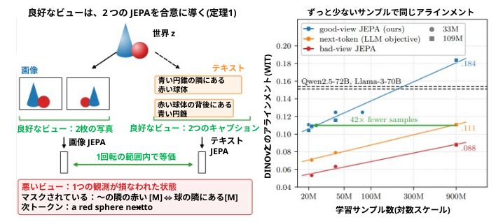
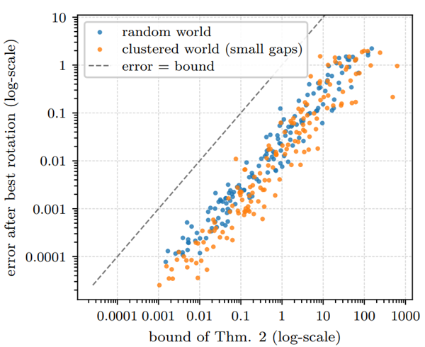
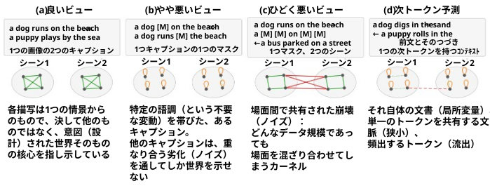
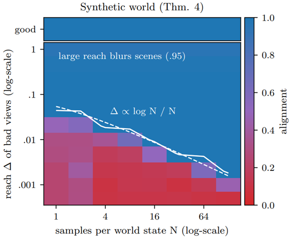
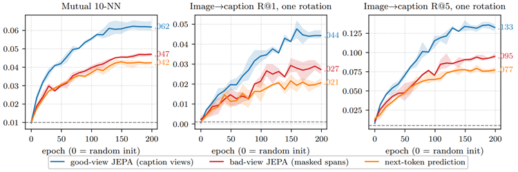
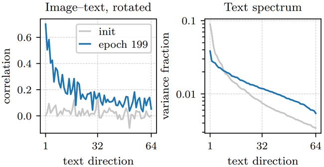
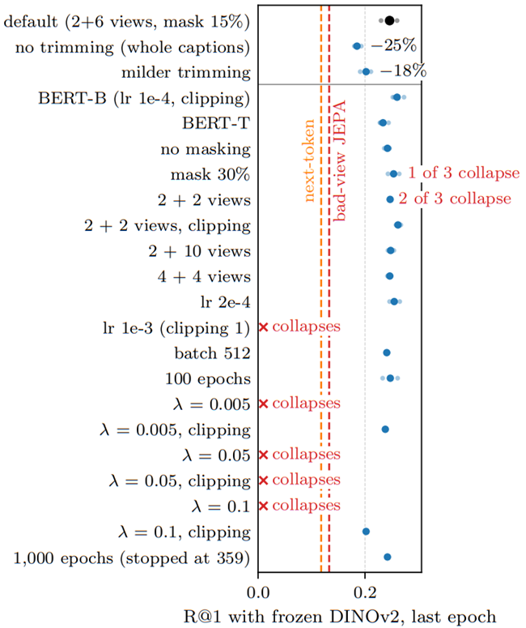
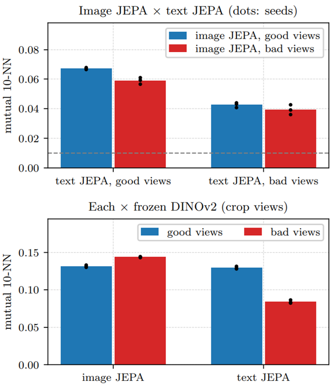
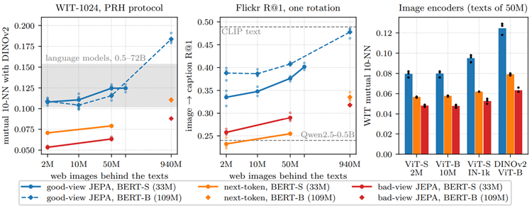
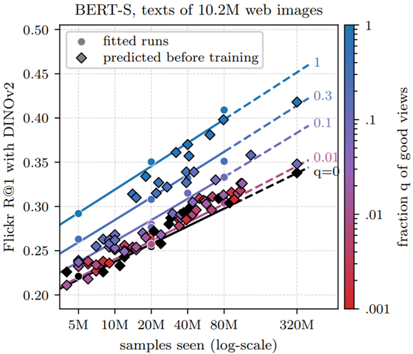

<!doctype html>
<html lang="ja">
    <head>
        <script type="text/javascript" id="MathJax-script" async
        src="https://cdn.jsdelivr.net/npm/mathjax@3/es5/tex-chtml.js"></script>
        <meta charset="utf-8" />
        <title>Proving and Improving the Platonic Representation Hypothesis with JEPAs</title>
        <style type="text/css">
            p
            {
                padding-left: 2em;
            }
           .margin-abstract {
               margin-left: 60px; /* 左マージンを広くする */
               margin-right: 60px; /* 右マージンを広くする */
           }
        </style>
    <style>
        .styleRef { 
            text-indent: -40px; /* 最初の行の字下げを逆方向に */
            margin-left: 10px; /* 2行目以降の字下げを調整 */
            ul {
                  list-style-type: none; /* 箇条書き記号を非表示 */
                  padding-left: 40px; /* 全体の左余白 */
            }
            li {
            }
        }
    </style>
    <style>
        .styleBullet { 
            text-indent: -20px; /* 最初の行の字下げを逆方向に */
            margin-left: 30px; /* 2行目以降の字下げを調整 */
            ul {
                  list-style-type: none; /* 箇条書き記号を非表示 */
                  padding-left: 40px; /* 全体の左余白 */
            }
            li {
            }
        }
    </style>
<style>
.container {
  display: flex;
  flex-wrap: wrap;
}
.column {
  flex: 0.50%; /* 幅を50%に設定して2列に */
  box-sizing: border-box;
  padding: 10px;
}
</style>

    </head>
    <body>
        <h1><center>Proving and Improving the Platonic Representation Hypothesis with JEPAs<br><span style="color:blue;">JEPAを用いたプラトン的表現仮説の検証と改善</span></center></h1>

<center>Randall Balestriero<sup>1,3</sup>　　Yann LeCun<sup>2,3</sup></center>
<center><sup>1</sup> Brown University　<sup>2</sup> New York University　 <sup>3</sup> AMI Labs </center>
<center>Correspondence: rbalestr@brown.edu</center>
<center><a href="https://github.com/galilai-group/prh-proof">code</a>　<a href="https://huggingface.co/spaces/galilai-group/prh_demo">Live demo</a></center>


<p style="background-color:rgb(235,242,248);">
Whether models trained on different modalities converge to the same representation of the world is central to
AI. The Platonic Representation Hypothesis (PRH) conjectures that they do as they scale, but without a proof
it offers neither a guarantee nor a recipe. We turn the hypothesis into a theorem. First, we prove a Platonic
Representation Theorem: Joint-Embedding Predictive Architectures (JEPAs) trained separately on any number of
modalities learn the same representation up to one rotation whenever their positive pairs are two observations of
one scene–good views–and their misalignment is bounded otherwise. Second, we show that next-token prediction
is a JEPA with bad views, parts of a single document, which explains why language models align with vision only
through scale. Third, we validate the theory from 145k captions to the texts of 940M web images, and uncover a
scaling law of alignment that predicts unseen runs within seed noise. Good views need 42 times fewer training
samples than next-token prediction on the same corpus to reach the same alignment, and a 109M-parameter text
JEPA aligns with DINOv2 and CLIP’s image encoders better than every language model we evaluated, up to 72B
parameters, and than CLIP’s text encoder: next-token prediction is a remarkably inefficient route to platonic
representations. As a showcase, one rotation turns separately trained encoders into an image captioner (CIDEr
.838 on COCO). Even that rotation needs no pair: on the latest pair-free benchmark, our text JEPA beats every
zero-shot accuracy reported with language models up to 8B parameters, e.g., 64% against at most 56% top-5 on
ImageNet-100. Positive views, and not scale alone, are thus the lever to build platonic representations.
<br><span style="color:blue;">
異なるモダリティで学習されたモデルが、世界の同一の表現へと収束するかどうかは、AIにおける中心的な問いである。「プラトン的表現仮説（Platonic Representation Hypothesis: PRH）」は、モデルの規模が拡大するにつれてそれらが同一の表現に収束すると推測しているが、証明がない以上、それは保証にも具体的な手法にもなり得ない。本研究では、この仮説を定理へと昇華させる。第一に、「プラトン的表現定理（Platonic Representation Theorem）」を証明する。これは、任意の数のモダリティに対して個別に学習された「同時埋め込み予測アーキテクチャ（Joint-Embedding Predictive Architectures: JEPA）」において、正のペアが同一シーンの2つの観測（「良質なビュー」）であり、それ以外の不整合が一定の範囲内に収まる場合、学習される表現は（回転を除いて）同一になるというものである。第二に、「次トークン予測（next-token prediction）」は、単一の文書の断片という「不適切なビュー」を用いたJEPAの一種であると示す。これにより、なぜ言語モデルが（大規模化を通じてのみ）視覚モデルと整合するようになるのかが説明される。第三に、14万5千件のキャプションから9億4千万件のウェブ画像テキストに至るデータを用いてこの理論を検証し、整合性に関するスケーリング則を明らかにする。この法則により、シード値に起因するノイズの範囲内で、未実施の実験結果を予測することが可能となる。同じコーパスにおいて同等の整合性に達するために必要な学習サンプル数は、「良質なビュー」を用いる場合、「次トークン予測」を用いる場合よりも42倍少なくて済む。また、1億900万パラメータのテキスト用JEPAは、DINOv2やCLIPの画像エンコーダと、我々が評価した（最大720億パラメータの）あらゆる言語モデル、さらにはCLIPのテキストエンコーダよりも優れた整合性を示す。つまり、「次トークン予測」は、プラトン的表現を獲得するための極めて非効率な手法なのである。実例として、単一の回転操作を施すだけで、個別に学習されたエンコーダを画像キャプション生成モデルへと変換できる（COCOデータセットにおいてCIDErスコア0.838を達成）。この回転操作においてさえ、ペアデータは一切必要としない。ペアデータを必要としない最新のベンチマークにおいて、我々のテキスト用JEPAは、最大80億パラメータの言語モデルで報告されているゼロショット精度のすべてを上回る性能を示した（例：ImageNet-100において、トップ5精度で最大56%に対し、64%を記録）。したがって、プラトン的表現を構築するための鍵は、単なる規模の拡大ではなく、「良質なビュー」の活用にあると言える。
</span>
</p>

<h2>1 Introduction <span style="color:blue;">はじめに</span></h2>
<p>
Whether different observers of one world end up with
the same picture of it is a question with roots dating back
millennia, from the shadows of Plato’s cave to perception
as unconscious inference [48, 63] and the reduction of
redundancy in sensory messages [7]. Deep networks
revived that question. Word embeddings trained separately on different languages turned out to be related by a
linear map [39], even by a rotation that can be found without a single translated pair, enough to translate words
and then sentences with no parallel data [11, 29]. Across
modalities, Huh et al. [22] observed that the representations of vision and language models become increasingly
similar as models scale, and hypothesized that they converge to a shared statistical model of reality–coined the
Platonic Representation Hypothesis (PRH).

<br><span style="color:blue;">
同一の世界を観察する異なる主体が、最終的にその世界に対して同じような認識（イメージ）を持つに至るのか――この問いの起源は数千年も前に遡る。プラトンの洞窟の比喩から、知覚を「無意識の推論」と捉える考え方[48, 63]、さらには感覚情報における冗長性の削減[7]に至るまで、長い歴史を持つ問いである。ディープニューラルネットワークの登場により、この問いが再び注目を集めることとなった。例えば、異なる言語でそれぞれ独立して学習された単語埋め込み（word embeddings）は、線形写像によって関連付けられることが明らかになった[39]。しかも、翻訳ペアのデータが一つも存在しない場合であっても、回転変換を用いることで対応関係を見出すことが可能であり、これによって対訳データなしで単語や文章を翻訳することさえできるのである[11, 29]。また、異なるモダリティ（様相）にまたがる研究として、Huhら[22]は、視覚モデルと言語モデルの表現が、モデルの規模が大きくなるにつれて互いにますます類似していくことを観察した。そして彼らは、これらのモデルが現実に関する共通の統計的モデルへと収束していくのではないかという仮説を立て、これを「プラトン的表現仮説（Platonic Representation Hypothesis: PRH）」と名付けた。
</span>
</p><p>

Alas, the PRH remains an observation. Its supporting argument is an idealized contrastive learner whose
kernel converges to the pointwise mutual information
of co-occurring world events [22], the closest proof we
know of covers embedded deep linear networks trained
by SGD [75], and a recent theory explains why translations share representations inside multilingual language
models [14]. For the self-supervised objectives used in
practice, and in particular for Joint-Embedding Predictive Architectures (JEPAs) [4, 30], there is no proof, no
prediction of when the hypothesis holds, and hence no
recipe to improve alignment. As a result, scaling models
and data remains the main lever used so far.

<br><span style="color:blue;">
残念ながら、PRH（表現の整列仮説）は依然として一つの観察にとどまっている。この仮説を裏付ける議論の一つに、そのカーネルが世界で共起する事象の「点相互情報量（pointwise mutual information）」に収束するような、理想化された対照学習モデルがある[22]。また、SGD（確率的勾配降下法）で学習された深層線形ネットワークに関する証明も存在するが[75]、これは我々が知る限り最も近い証明といえる。さらに最近の理論では、多言語言語モデル内部において、なぜ異なる言語間での翻訳が表現を共有するのかが説明されている[14]。しかし、実際に用いられている自己教師あり学習の目的関数、とりわけ「同時埋め込み予測アーキテクチャ（JEPA）」[4, 30]に関しては、仮説が成立するかどうかの証明も、それがいつ成立するかについての予測も存在しない。そのため、表現の整列（アライメント）を改善するための具体的な指針も欠如している。その結果、現時点では、モデルやデータを大規模化することが、改善のための主要な手段であり続けている。
</span>
</p><p>

Our study proposes to turn that observation into a
theorem by asking the following question: when do models, trained separately on different modalities, provably learn
the same representation? We answer it for JEPAs with a
short argument. A JEPA with whitened second-order
anti-collapse learns the spectral embedding of its positive
pairs, the pairs of inputs it declares to be views of each
other [3, 19]. If the modalities render one world and
their positive pairs relate the same world states, their
training problems are one problem written in different
coordinate systems, and their solutions coincide up to a
rotation–which we coin the Platonic Representation Theorem (Theorem 1). Nothing in this argument is specific to
images and text: it holds for any modalities that observe
one world, e.g., images, video, text, audio or actions, and
for any number of them at once. We therefore obtain
the following key insight. The PRH is a statement about
positive views: a JEPA whose positives are two observations of
the same scene learns a representation that belongs to the world,
while a JEPA whose positives are corruptions of one observation learns one that belongs to its modality (Figure 1). We
coin the former good-view and the latter bad-view JEPAs,
and summarize our contributions below.

<br><span style="color:blue;">
本研究では、ある観察結果を定理へと昇華させるべく、次のような問いを立てる。すなわち、「異なるモダリティを用いて個別に学習されたモデルは、どのような場合に、数学的に証明可能な形で同一の表現を獲得するのか？」という問いである。我々は、JEPA（Joint-Embedding Predictive Architecture）を対象として、簡潔な論証によってこの問いに答える。具体的には、「白色化された二次的な崩壊防止（whitened second-order anti-collapse）」を組み込んだJEPAは、その「ポジティブペア」（互いに同一の対象の異なる見え方であると定義された入力ペア）のスペクトル埋め込みを学習する[3, 19]。もし複数のモダリティが同一の世界を捉えており、それらのポジティブペアが世界における同一の状態を指し示しているならば、それぞれの学習問題は、本質的には同一の問題を異なる座標系で記述したものに過ぎない。したがって、それらの解は回転変換を除いて一致することになる。我々はこれを「プラトン的表現定理（Platonic Representation Theorem）」（定理1）と名付ける。この論証は画像やテキストに限定されるものではなく、同一の世界を観察するあらゆるモダリティ（画像、動画、テキスト、音声、あるいは行動など）に対して、また、それらがいくつ組み合わさっている場合であっても成立する。ここから、重要な洞察が得られる。すなわち、プラトン的表現仮説（PRH）は「ポジティブな見え方（positive views）」に関する主張であるということだ。同一のシーンを捉えた二つの観察結果をポジティブペアとするJEPAは「世界に属する表現」を学習するのに対し、単一の観察結果に何らかの劣化（破損）を加えたものをポジティブペアとするJEPAは、その「モダリティに固有の表現」を学習する（図1）。我々は前者を「良質な見え方（good-view）に基づくJEPA」、後者を「劣悪な見え方（bad-view）に基づくJEPA」と呼び、以下に本研究の貢献をまとめる。
</span>
</p>

<center></center>

<p style="background-color:rgb(235,242,248);">
Figure 1. Good views make the PRH a theorem, and alignment 42 times more sample-efficient. Left: the PRH picture [22], one world
z observed as images and as texts. When a JEPA’s positive pairs are two observations of one scene (good views: two photographs, two
captions), the encoders of every modality learn the same embedding up to one rotation (Theorem 1); bad views, two corruptions of one
observation, and next-token prediction, a prefix and its continuation, align only partly (Propositions 3 and 4). Right: alignment with
DINOv2 on the PRH paper’s benchmark (WIT-1024, mutual 10-NN) of text models trained on the texts of web images, against the samples
they saw (means of three seeds, one for the 109M bad-view JEPA; lines: log-linear trends). With 21.6M samples a good-view JEPA matches
next-token prediction on the same corpus at 900M samples (.109 and .111; 14 times fewer text tokens), and with 900M it reaches .184, above
Qwen2.5-72B and Llama-3-70B, trained on 15–18T tokens (dashed). This demonstrates that with good views, alignment needs far less scale.
<br><span style="color:blue;">
図1. 「適切なビュー（good views）」を用いることで、PRH（画像とテキストの表現の整合性）は理論的根拠を持つものとなり、アライメントのサンプル効率は42倍に向上する。左：PRHの概念図[22]。単一の「世界」が、画像およびテキストという形で観測される。JEPA（Joint-Embedding Predictive Architecture）において、同一シーンの2つの観測結果（適切なビュー。例：2枚の写真、あるいは2つのキャプション）をポジティブペアとして用いる場合、各モダリティのエンコーダーは、回転変換を除いて同一の埋め込み表現を学習する（定理1）。一方、「不適切なビュー（bad views）」（単一の観測結果に2種類の劣化を加えたもの）や、次トークン予測（プレフィックスとその続き）を用いた場合、アライメントは部分的にしか成立しない（命題3および4）。右：PRH論文のベンチマーク（WIT-1024、相互10-NN）における、DINOv2を用いたアライメント結果。Web画像に付随するテキストで学習したテキストモデルを対象とし、学習時に使用したサンプルに対する評価を示している（3つの乱数シードの平均値。109Mの「不適切なビュー」を用いたJEPAについては1つのシードで算出。線は対数線形トレンドを示す）。21.6Mのサンプルを用いた「適切なビュー」によるJEPAは、同一コーパスにおいて900Mのサンプルを用いた次トークン予測と同等の性能（スコア0.109対0.111。テキストトークン数にして14分の1）を達成する。さらに900Mのサンプルを用いるとスコアは0.184に達し、15〜18兆トークンで学習されたQwen2.5-72BやLlama-3-70B（破線）を上回る。このことは、「適切なビュー」を活用すれば、アライメントに必要なデータ規模を大幅に削減できることを示している。
</span>
</p><p>

<strong>Contribution 1: We turn the PRH into a theorem.</strong>　In
an idealized model, any number of JEPAs trained separately on renderings of one world learn the same embedding up to one rotation each when their positive pairs
relate the same world states and their minimizers are
unique up to rotation, as we prove for whitened JEPAs
under a spectral gap (Theorem 1 and Proposition 1); otherwise, their misalignment is bounded by the mismatch
of their positive pairs (Theorem 2). Positives that corrupt
a single observation make an encoder spend dimensions
on its modality’s nuisance whenever they keep more of
it than of the world’s k-th direction, which no rotation
can align, while two observations of one scene spend
none (Theorem 3 and Proposition 3), and views and
data together set what a JEPA learns (Theorem 4).

<br><span style="color:blue;">
<strong>貢献1：PRHを定理として定式化する。</strong>　理想化されたモデルにおいて、同一の「世界」のレンダリングを用いて個別に学習された複数のJEPAは、それぞれ回転の自由度を除いて同一の埋め込み表現を獲得する。これは、正のペア（positive pairs）が同一の「世界」の状態に対応しており、かつ最小化解が回転を除いて一意である場合に成立する。我々は、スペクトルギャップの条件下にある「白色化されたJEPA（whitened JEPAs）」について、このことを証明した（定理1および命題1）。一方、そうでない場合、埋め込み表現間の不一致（misalignment）は、正のペア間の不整合によって上界が抑えられる（定理2）。単一の観測を損なうような「正のペア」が存在する場合、エンコーダは、その観測に含まれる「世界」の第k番目の方向に関する情報よりも、そのモダリティ固有の不要な情報（nuisance）を多く保持してしまう。この場合、回転操作によっても埋め込み表現を一致させることはできない。これに対し、同一シーンに対する2つの観測を用いる場合には、そのような不要な情報が埋め込み表現に含まれることはない（定理3および命題3）。さらに、観測ビュー（views）とデータが組み合わさることで、JEPAが何を学習するかが決定される（定理4）。
</span>
</p><p>

<strong>Contribution 2: We show that next-token prediction
is a bad-view JEPA.</strong>　Its positives are a prefix and its
continuation within one document, and its anti-collapse
term is the softmax log-partition (Proposition 4). This
suggests why language models align with vision only
partly, and mostly through scale.

<br><span style="color:blue;">
<strong>貢献2：次トークン予測（next-token prediction）は、JEPA（Joint-Embedding Predictive Architecture）の一種と見なせるが、その「ビュー（view）」の取り方は不適切であることを示す。</strong>　この手法において、正例（ポジティブサンプル）は同一文書内の「プレフィックス（先行部分）」とその「続き」であり、崩壊（collapse）を防ぐための項はソフトマックスの対数分配関数（log-partition）に相当する（命題4）。このことは、言語モデルが視覚モデルと部分的にしか整合しない理由、そしてその整合の大部分が単なる「スケール（規模）」に依存している理由を示唆している。
</span>
</p><p>

<strong>Contribution 3: We validate good views and uncover
a scaling law of alignment.</strong>　With identical texts and encoders, good views align best in all but a few of the comparisons we ran (Section C): from 145k Flickr captions
to the texts of 940M web images, with image encoders
trained from scratch or frozen, and on video (Section 3).
Alignment follows a scaling law in the fraction of good
views and the samples seen, which predicts 85 new runs,
before they are trained, as accurately as rerunning them
with another seed (Section 4.4).

<br><span style="color:blue;">
<strong>貢献3：我々は「良質なビュー（good views）」の有効性を検証し、アライメントに関するスケーリング則を明らかにする。</strong>　同一のテキストおよびエンコーダを用いた場合、我々が実施した比較の大部分において、「良質なビュー」を用いることで最良のアライメントが得られることが確認された（セクションC）。この結果は、14万5000件のFlickrキャプションから9億4000万件のウェブ画像テキストに至るまで、また、ゼロから学習させた画像エンコーダや固定（フリーズ）された画像エンコーダを用いた場合、さらには動画データを用いた場合においても同様である（セクション3）。アライメントは、「良質なビュー」の割合および学習に使用したサンプル数に対してスケーリング則に従う。このスケーリング則を用いることで、新たな85通りの実験設定について、実際に学習を行う前に、別の乱数シードを用いて再実行した場合と同等の精度で結果を予測することが可能である（セクション4.4）。
</span>
</p><p>

<strong>Contribution 4: We improve alignment beyond 70B
language models, which scale poorly in comparison.</strong>　Good views help in three ways (Section 4). They scale
with data: trained on the texts of 50M web images, a
33M-parameter text JEPA reaches .125 on the PRH paper’s benchmark, against .034 on Flickr captions, level
with Qwen2.5-3B and -7B. They need fewer samples: on
the same corpus, a good-view JEPA reaches with 21.6M
training samples the alignment that next-token prediction reaches with 900M, 42 times more (Figure 1). They
beat larger models: trained on the texts of 940M web images, a 109M-parameter text JEPA reaches .184, above
every language model we evaluated, up to Qwen2.5-72B
(.154), and above CLIP’s text encoder (.124), on two
benchmarks and two metrics; it also leads the language
models with MAE, I-JEPA and CLIP’s image encoders,
e.g., .230 against .210 with CLIP ViT-H. For alignment,
next-token prediction is thus a remarkably inefficient use
of scale: our 109M encoder, which read 116B text tokens,
beats models 660 times larger trained on over 100 times
more.

<br><span style="color:blue;">
<strong>貢献4：我々は、スケーリング効率が低い言語モデル（70Bパラメータ規模を超えるものを含む）を上回るアライメントを実現する。</strong>「良質なビュー（good views）」を用いる手法には、3つの利点がある（第4節）。第一に、データ量に応じて性能が向上する。5000万件のウェブ画像に付随するテキストで学習させた場合、3300万パラメータのテキストJEPAは、PRH論文のベンチマークにおいて0.125というスコアを達成した（Flickrキャプションを用いた場合の0.034に対し）。これはQwen2.5-3BおよびQwen2.5-7Bと同等の水準である。第二に、より少ない学習サンプルで済む。同じコーパスを用いた場合、「良質なビュー」を活用するJEPAは、2160万個の学習サンプルで、次トークン予測（next-token prediction）が9億個のサンプル（42倍の量）を必要とするのと同等のアライメント性能に到達する（図1）。第三に、より大規模なモデルを凌駕する。9億4000万件のウェブ画像テキストで学習させた10900万パラメータのテキストJEPAは、0.184というスコアを記録した。これは、我々が評価したすべての言語モデル（Qwen2.5-72Bの0.154を含む）や、CLIPのテキストエンコーダ（0.124）を上回る結果である（2つのベンチマークおよび2つの指標において確認）。また、MAE（Masked Autoencoder）、I-JEPA、CLIPの画像エンコーダと比較しても、言語モデルを上回る性能を示している（例：CLIP ViT-Hの0.210に対し、0.230を記録）。したがって、アライメントという観点において、次トークン予測はスケーリングの活用法として極めて非効率的であると言える。我々の10900万パラメータのエンコーダは、1160億個のテキストトークンを学習しただけで、それより660倍大きく、かつ100倍以上のデータで学習されたモデルを上回る性能を達成したのである。
</span>
</p><p>

<strong>Contribution 5: We caption images without training a network on image–caption pairs.</strong>　One linear map
with orthonormal rows, the only part fitted on pairs, joins
frozen DINOv2 and DINOv3 image encoders to a language model fine-tuned on text alone, reaching CIDEr
.838 on COCO (Section 5.1). With no pair at all, the
rotation can be found from the geometry of unpaired
images and captions: on the benchmark of Schnaus et al.
[54], which aligns a vision and a language encoder from
unpaired images and captions and scores the result by
zero-shot classification, our 109M text JEPA beats every
zero-shot accuracy they report, over 21 pairs of vision
and language models and five settings, and it beats their
strongest language model, Qwen3-8B, rerun under identical conditions, by 17 points of zero-shot ImageNet-100
accuracy (Section 5.2). This demonstrates that the PRH–
with JEPAs–is no longer a hypothesis but a theorem and
a tool.

<br><span style="color:blue;">
<strong>貢献5：画像とキャプションのペアを用いてネットワークを学習させることなく、画像に対するキャプションを生成する。</strong>　ペアを用いて学習される唯一の要素である「正規直交行を持つ線形写像」を介して、固定された（学習済み重みを凍結した）DINOv2およびDINOv3画像エンコーダを、テキストのみで微調整された言語モデルに接続する。この手法により、COCOデータセットにおいてCIDErスコア0.838を達成した（第5.1節）。さらに、ペアを一切使用しない場合であっても、画像とキャプションの幾何学的関係からこの線形変換（回転）を導き出すことが可能である。Schnausら[54]によるベンチマーク（ペアになっていない画像とキャプションから視覚エンコーダと言語エンコーダを整列させ、ゼロショット分類によって評価するもの）において、我々の109MパラメータのText JEPAは、彼らが報告したすべてのゼロショット精度を上回った。これは、21通りの視覚・言語モデルの組み合わせおよび5つの設定すべてにおいて確認された。また、彼らが用いた中で最も強力な言語モデルであるQwen3-8Bを同一条件下で再評価した場合と比較しても、我々のモデルはImageNet-100のゼロショット精度において17ポイント上回る結果を示した（第5.2節）。以上の結果は、JEPAを用いたPRH（画像とテキストの表現空間の整列）が、もはや単なる仮説ではなく、定理であり、かつ実用的なツールであることを証明している。
</span>
</p>

<h2>2 Shared Positives Provably Make
Representations Platonic <br><span style="color:blue;">共通の肯定的な要素は、明らかに表現をプラトニックなものにする</span></h2>

<p>
We start by formalizing a world, the modalities that observe it and their positive pairs, then prove that JEPAs
with shared positives agree up to one rotation (Theorem 1), bound their misalignment otherwise (Theorem 2), and show which positives make an encoder
spend its embedding on its modality’s nuisance (Theorems 3 and 4 and Proposition 3), of which next-token
prediction is an instance (Proposition 4).

<br><span style="color:blue;">
まず、ある世界と、その世界を観測するモダリティ、およびそれらに対応する「ポジティブなペア」を定式化する。次に、ポジティブなペアを共有するJEPA（Joint-Embedding Predictive Architecture）が、回転を除いて一致すること（定理1）を証明し、そうでない場合には不一致の程度に上限を定める（定理2）。さらに、どのようなポジティブなペアを選択すると、エンコーダが自身のモダリティにおける「不要な変動要因（nuisance）」を埋め込み表現に反映させてしまうのかを明らかにする（定理3、定理4、および命題3）。なお、「次トークン予測（next-token prediction）」は、この現象の一例である（命題4）。
</span>
</p>

<h3>2.1 The Platonic Representation Theorem <span style="color:blue;">プラトン的表現定理</span></h3>

<p>
World, modalities, and positive pairs. Let a world be a
finite set of states \(z ∈ \mathcal{Z}\) with probabilities \(p(z) > 0\), and
let \(M ≥ 2\) modalities observe it, modality \(m\) through an
injective rendering \(x = g_m(z)\), e.g., the pixels of a photograph or the tokens of a caption. A JEPA of modality m
is trained on positive pairs \((g_m(z), g_m(z^\prime))\) whose world
states are drawn from a symmetric positive-pair distribution \((z, z^\prime) \sim π_m\) with both marginals equal to p. Its
encoder \(f : \mathcal{X}_m → \mathbb{R}^k\) minimizes

<br><span style="color:blue;">
世界、モダリティ、および正のペア。ある世界を、確率 \(p(z) > 0\) を持つ状態 \(z ∈ \mathcal{Z}\) の有限集合とする。また、\(M ≥ 2\) 個のモダリティがこの世界を観測するものとする。各モダリティ \(m\) は、単射的な写像 \(x = g_m(z)\) を通じて世界を観測する（例：写真の画素やキャプションのトークンなど）。モダリティ \(m\) に対応するJEPAは、正のペア \((g_m(z), g_m(z^\prime))\) を用いて学習される。ここで、世界の各状態 \((z, z^\prime)\) は、周辺分布がいずれも \(p\) となるような対称的な正のペア分布 \((z, z^\prime) \sim π_m\) からサンプリングされる。このJEPAのエンコーダ \(f : \mathcal{X}_m → \mathbb{R}^k\) は、以下の値を最小化する。
</span>

\[
\mathcal{L}_m(f) = \mathbb{E}_{(z,z^\prime)\simπ_m}ℓ\Big(f\big(g_m(z)\big), f\big(g_m(z^\prime)\big)\Big)+ Ω(f), \tag{1}
\]

a prediction term \(ℓ\) plus an anti-collapse term \(Ω\) that
depends on \(f\) only through the distribution of its embeddings (possibly a hard constraint, \(Ω ∈ \{0, ∞\}\)). As in our
experiments, the predictor is the identity: \(ℓ\) compares the
two embeddings directly, whereas JEPAs used as world
models predict one embedding from the other through a
learned predictor, often conditioned on an action, which
our analysis does not cover. Both \(ℓ\) and \(Ω\) are invariant to rotations \(Q ∈ O(k): ℓ(Q^a, Q^b) = ℓ(a, b)\), and
rotating every embedding leaves Ω unchanged. Spectral contrastive learning and whitened MSE fit this form
[16, 19], VICReg and Barlow Twins in a whitened limit
[3, 6, 72], and LeJEPA’s SIGReg, which pushes the embeddings toward an isotropic Gaussian, in expectation
over its directions [4] (Section A). The key observation
is that an injective rendering only changes coordinates:
\(\mathcal{L}_m(f) = \mathcal{L}_{π_m}
(f ◦ g_m)\), the same objective written on
world states, \(\mathcal{L}_π(h) = \mathbb{E}_{(z,z^\prime)\simπ}ℓ(h(z), h(z^\prime)) + Ω(h)\) for \(h : \mathcal{Z} → \mathbb{R}^k\)
(Lemma 1). We are now able to state when
modalities learn the same representation.

<br><span style="color:blue;">
予測項 \(ℓ\) に、埋め込みの分布のみに依存する崩壊防止項 \(Ω\)（厳密な制約として \(Ω ∈ \{0, ∞\}\) となる場合もある）を加えた形である。本稿の実験と同様に、予測器が恒等写像である場合、\(ℓ\) は2つの埋め込みを直接比較する。一方、世界モデルとして用いられるJEPA（Joint-Embedding Predictive Architecture）では、学習された予測器を介して一方の埋め込みから他方を予測する。この際、予測器はしばしば行動（アクション）を条件として与えられるが、本稿の分析ではこの点は扱わない。\(ℓ\) および \(Ω\) は、回転 \(Q ∈ O(k)\) に対して不変である（すなわち \(ℓ(Q^a, Q^b) = ℓ(a, b)\)）。また、すべての埋め込みを回転させても \(Ω\) は変化しない。スペクトル対照学習（Spectral contrastive learning）や白色化MSE（whitened MSE）はこの形式に当てはまる [16, 19]。また、白色化の極限におけるVICRegやBarlow Twins [3, 6, 72]、さらには埋め込みを等方的なガウス分布へと近づけるLeJEPAのSIGReg（方向に関する期待値をとるもの）も同様である [4]（付録A）。重要な知見として、単射的なレンダリングは座標系を変換するに過ぎないという点がある。すなわち、\(\mathcal{L}_m(f) = \mathcal{L}_{π_m}(f ◦ g_m)\) であり、これは世界状態（world states）上で定義される目的関数 \(\mathcal{L}_π(h) = \mathbb{E}_{(z,z^\prime)\simπ}ℓ(h(z), h(z^\prime)) + Ω(h)\)（ここで \(h : \mathcal{Z} → \mathbb{R}^k\)）と同一である（補題1）。これにより、異なるモダリティがいつ同一の表現を学習するのかを明示することが可能となる。
</span>
</p>

</p><p style="background-color:rgb(115 0 0);margin:0;margin-left: 30px;padding:10px;color:white;">
Theorem 1: Platonic Representation Theorem　定理１： プラトニック表現定理
</p>

<p style="border: 2px solid rgb(115 0 0); background-color:rgb(255 250 255);padding:10px; margin:0;margin-left: 30px;">
Let \(M ≥ 2\) modalities share one positive-pair distribution, \(π_1 = · · · = π_M = π\), and let the minimizers
of Lπ be unique up to rotation. Then there is one
embedding of the world \(h^⋆: \mathcal{Z} → \mathbb{R}^k\)
such that every
minimizer \(f_m^⋆\) of \(\mathcal{L}_m\), for every modality \(m\), satisfies

<br><span style="color:blue;">
\(M \ge 2\) 個のモダリティが単一の正のペア分布 \(\pi_1 = \dots = \pi_M = \pi\) を共有し、かつ \(\mathcal{L}_\pi\) の最小化解が回転を除いて一意的であると仮定する。このとき、世界に対する埋め込み \(h^\star: \mathcal{Z} \to \mathbb{R}^k\) が存在し、各モダリティ \(m\) における \(\mathcal{L}_m\) の任意の最小化解 \(f_m^\star\) は、以下を満たす。
</span>

\[
f_m^⋆ ◦ g_m = Q_m h^⋆ \quad \text{for some } Q_m ∈ O(k), \tag{2}
\]

so any two modalities agree up to the single rotation
\(Q_m Q_{m^\prime}^\top\). (Proof in Section A.)

<br><span style="color:blue;">
したがって、任意の2つのモダリティは、単一の回転 \(Q_m Q_{m^\prime}^\top\) を除いて一致する。
（証明は付録Aを参照。）
</span>

</p>


<p>
In words, encoders that never see each other’s modality, and whose renderings need not be related beyond
describing the same world, learn the same embedding up
to one rotation each: in this idealized JEPA setting–one
finite world rendered injectively, shared positives, population optima, and minimizers unique up to rotation–the
PRH becomes a theorem, for images and texts as for any
other set of modalities. The proof is direct: every \(f_m^⋆ ◦ g_m\)
minimizes \(\mathcal{L}_π\). The key assumption is uniqueness up to
rotation, which holds for JEPAs with second-order anticollapse under a spectral gap, as formalized below. Write
\(Π\) for the matrix of \(π (Π_{zz^\prime} = π(z, z^\prime)), D = diag(p)\),
and \(K_π = D^{−1/2}ΠD^{−1/2}\) for the normalized adjacency
of the graph that positives draw on the world, with eigenvalues \(1 = µ_0 ≥ µ_1 ≥ . . .\) and orthonormal eigenvectors
\(v_0 = D^{1/2}1, v_1, . . . .\)

<br><span style="color:blue;">
言い換えれば、互いのモダリティを直接目にすることなく、かつ、同一の世界を描写しているという点以外には相互に関連する必要のない表現（レンダリング）を生成するエンコーダ群であっても、それぞれ回転の自由度を除いて同一の埋め込みを学習するということである。この理想化されたJEPAの設定――すなわち、単一の有限な世界が単射的に表現され、正例（ポジティブサンプル）が共有され、母集団における最適解が存在し、かつ最小化解が回転を除いて一意であるという状況――において、PRH（表現の回転同値性仮説）は定理となる。これは画像やテキストを含む、あらゆるモダリティの組み合わせに対して成立する。証明は直接的であり、すべての \(f_m^⋆ ◦ g_m\) が \(\mathcal{L}_π\) を最小化する。ここでの重要な仮定は「回転を除いて一意である」という点であり、これはスペクトルギャップの条件下で「二次アンチコラプス（second-order anticollapse）」を備えたJEPAにおいて成立する（以下に定式化する）。ここで、\(Π\) を \(\pi\) の行列（\(Π_{zz^\prime} = π(z, z^\prime)\)）とし、\(D = diag(p)\) とおく。また、正例が世界から抽出される際に形成されるグラフの正規化隣接行列を \(K_π = D^{−1/2}ΠD^{−1/2}\) と定義する。この行列の固有値は \(1 = µ_0 ≥ µ_1 ≥ . . .\) であり、対応する正規直交固有ベクトルは \(v_0 = D^{1/2}1, v_1, . . . .\) である。
</span>
</p>

<p style="background-color:rgb(0 0 128);margin:0;margin-left: 30px;padding:10px;color:white;">
Proposition 1: Spectral JEPAs Are Unique Up to
Rotation<br>命題1:　スペクトル JEPA は回転を除いて一意的である
</p>

<p style="border: 2px solid rgb(0 0 128); background-color:rgb(250 250 255);padding:10px; margin:0;margin-left: 30px;">
Let \(ℓ(a, b) = ||a − b||^2\), let \(Ω\) whiten the embeddings
(\(\mathbb{E}_ph = 0, \mathbb{E}_phh^\top = I_k\)), and let \(1 ≤ k < |\mathcal{Z}|\).
Then \(\min\mathcal{L}_π = 2\sum_{i=1}^k(1 − µ_i)\), and if \(µ_k > µ_{k+1}\)
(with \(µ_{|\mathcal{Z}|} := −∞\)) the minimizers are exactly \(QΦ_π,
Q ∈ O(k)\), with the spectral embedding \(Φ_π(z) =
\big(v_1(z), . . . , v_k(z)\big)/\sqrt{p(z)}\). (Proof in Section A.)

<br><span style="color:blue;">
\(\ell(a, b) = \|a - b\|^2\) とし、埋め込みがホワイトニングされている（すなわち \(\mathbb{E}_p h = 0\), \(\mathbb{E}_p hh^\top = I_k\)）ものとする。また、\(1 \le k < |\mathcal{Z}|\) とする。
このとき、\(\min \mathcal{L}_\pi = 2\sum_{i=1}^k (1 - \mu_i)\) が成り立つ。さらに、\(\mu_k > \mu_{k+1}\)（ただし \(\mu_{|\mathcal{Z}|} := -\infty\) とする）であれば、最小化を与える解は \(Q\Phi_\pi\)（ここで \(Q \in O(k)\)）の形をとる。ここで、スペクトル埋め込み \(\Phi_\pi(z)\) は \(\Phi_\pi(z) = (v_1(z), \dots, v_k(z))/\sqrt{p(z)}\) と定義される。（証明は付録Aを参照。）
</span>
</p>

<p>
In words, a JEPA with second-order anti-collapse
learns the top eigenvectors of the graph its positives draw,
the population form of Laplacian eigenmaps [3, 8, 19],
unique up to rotation when the spectrum has a gap.
LeJEPA’s SIGReg target \(\mathcal{N} (0, \boldsymbol{I}_k)\) is rotation invariant and
has the same second moments; Proposition 1 does not
cover uniqueness under its full-distribution constraint,
which we leave as an assumption.

<br><span style="color:blue;">
別の言葉で言えば、二次的な崩壊防止（anti-collapse）機構を備えたJEPAは、正例（ポジティブサンプル）が構成するグラフの主要な固有ベクトルを学習する。これはラプラシアン固有値写像（Laplacian eigenmaps）[3, 8, 19]の母集団形式に相当するものであり、スペクトルにギャップが存在する場合、回転を除いて一意に定まる。LeJEPAにおけるSIGRegのターゲット分布 \(\mathcal{N} (0, \boldsymbol{I}_k)\) は回転不変であり、かつ同じ二次モーメントを持つ。命題1は、この分布全体に対する制約下での一意性までは保証していないため、これを仮定として置くこととする。
</span>
<p>

<h3>2.2 When Positives Differ <span style="color:blue;">肯定的な要素が異なる場合</span></h2>
<p>
Alas, in practice the modalities’ positives are not the same
pairs of world states.

<br><span style="color:blue;">
残念ながら、実際には、様相の肯定的な側面が指し示す世界状態の対は、それぞれ同一ではない。
</span>
<p>

<p style="background-color:rgb(115 0 0);margin:0;margin-left: 30px;padding:10px;color:white;">
Theorem 2: Kernel Mismatch Bounds Misalignment<br>
定理2：カーネルの不一致は不整合の境界を定める
</p>

<p style="border: 2px solid rgb(115 0 0); background-color:rgb(255 250 255);padding:10px; margin:0;margin-left: 30px;">
Let \(π_1, π_2\) share the marginal \(p\), let \(Φ_1, Φ_2\) be their
spectral embeddings (any orthonormal top-k eigen vectors if \(\boldsymbol{K}_{π_1}\)
has ties), and let \(δ = µ_k − µ_{k+1} > 0\) be
the eigengap of \(\boldsymbol{K}_{π_2}\). Then

<br><span style="color:blue;">
\(\pi_1, \pi_2\) が周辺分布 \(p\) を共有しているとし、\(\Phi_1, \Phi_2\) をそれらのスペクトル埋め込み（\(\boldsymbol{K}_{\pi_1}\) に同順位の固有値が存在する場合は、上位 \(k\) 個の任意の正規直交固有ベクトルとする）とし、\(\delta = \mu_k - \mu_{k+1} > 0\) を \(\boldsymbol{K}_{\pi_2}\) の固有値ギャップとする。このとき、
</span>

\[
\min\limits_{Q∈O(k)}\Big(\mathbb{E}_p||Φ_1(z) − QΦ_2(z)||^2\Big)^{1/2}≤\frac{2\sqrt{
2}}{δ}\min\big(\sqrt{k}||\boldsymbol{K}_{π_1}−\boldsymbol{K}_{π_2}||_2, ||\boldsymbol{K}_{π_1}−\boldsymbol{K}_{π_2}||_F\Big). \tag{3}
\]

(Proof in Section A, empirical validation in Figure 2.)

<br><span style="color:blue;">
（証明はセクションAに、実証的検証は図2に示す。）
</span>
</p>

<center></center>

<p>
Figure 2. Kernel mismatch bounds misalignment (Theorem 2). Each
point is one randomly generated finite world (8–39 states, random
marginal, embedding dimension k from 1 to 5) with a pair of kernels
on it: the world’s kernel, and a second kernel of the same marginal
that mixes in an unrelated kernel with weight 10−4
to 1, as if a second
modality had partly different positives. For each pair we compute the
two spectral embeddings (Proposition 1) and plot their distance after
the best rotation (vertical) against the bound of Theorem 2 (horizontal);
of the 300 worlds, half are clustered, with small spectral gaps. We
clearly observe that the error lies below the bound in every world (dashed:
equality), at 18% of it at most.

<br><span style="color:blue;">
図2. カーネルの不一致に関する境界と実際の乖離（定理2）。各点は、ランダムに生成された有限の「世界」（状態数8〜39、周辺分布はランダム、埋め込み次元kは1〜5）に対応している。各世界には2つのカーネルが定義されている。1つはその世界本来のカーネルであり、もう1つは、本来のカーネルに無関係な別のカーネルを重み10⁻⁴〜1で混合したものである（これは、第2のモダリティにおいて、正例の定義が部分的に異なる状況を模している）。各ケースについて、2種類のスペクトル埋め込み（命題1）を計算し、最適な回転を適用した後のそれらの距離を縦軸に、定理2で示される境界値を横軸にとってプロットした。対象とした300個の世界のうち、半分はクラスタ構造を持ち、スペクトルギャップが小さいものである。すべての世界において、誤差が境界値よりも小さく収まっていることが明確に確認できる（破線は境界値と誤差が等しい場合を示す）。誤差は最大でも境界値の18%に留まっている。
</span>
</p><p>

In words, for the objective of Proposition 1 the left side
is the root-mean-square distance between the embeddings of paired observations after the best single rotation, and only two quantities matter: how different the
graphs drawn by the two modalities’ positives are, and
how separated the top of their spectrum is. Crucially,
the same argument applied to a block of eigenvectors,
with gaps on both sides of the block [71], suggests where
alignment lives: directions separated from the rest of the
spectrum by large gaps are protected, while directions
near the end of the spectrum need not align at all. Figure 2 validates the bound on randomly generated finite
worlds, each point being one world with a pair of kernels
that differ by a controlled amount: in all 300 worlds the
error lies below the bound, at 18% of it at most.

<br><span style="color:blue;">
命題1の目的において、左辺は、最適な単一の回転を適用した後の、ペアとなる観測値の埋め込み間の二乗平均平方根距離を表す。ここで重要な要素は、2つのモダリティにおける「正」のデータから描かれるグラフがどれほど異なるか、そしてそれらのスペクトルの上位部分がどれほど離れているか、という2点のみである。重要な点として、スペクトルの両側にギャップを伴う固有ベクトルのブロックに対して同様の議論を適用すると、アライメント（整合）がどこで生じるかが示唆される。すなわち、スペクトルの他の部分から大きなギャップによって隔てられた方向は維持される（保護される）一方、スペクトルの端に近い方向は、必ずしもアライメントされる必要はない。図2は、ランダムに生成された有限の「世界」において、この境界値が妥当であることを示している。各点は、制御された量だけ異なる一対のカーネルを持つ一つの世界に対応しており、300個のすべての世界において、誤差はこの境界値以下（最大でも境界値の18%）に収まっている。
</span>
</p><p>

<strong>What pairs are for.</strong>　Theorem 1 says that the embeddings agree up to a rotation, but not which one. As formalized below, the first two moments of unpaired data
cannot find it, and k pairs suffice.

<br><span style="color:blue;">
<strong>ペアの役割。</strong>定理1は、埋め込みが回転を除いて一致することを示しているが、具体的にどのような回転であるかまでは特定していない。以下に定式化するように、ペアになっていないデータから得られる最初の2つのモーメントではこれを特定することはできないが、k個のペアがあれば十分である。
</span>
</p>

</p><p style="background-color:rgb(0 0 128);margin:0;margin-left: 30px;padding:10px;color:white;">
Proposition 2: k Pairs Identify the Rotation　命題2：k組のペアが回転を特定する
</p>

<p style="border: 2px solid rgb(0 0 128); background-color:rgb(250 250 255);padding:10px; margin:0;margin-left: 30px;">
In the setting of Theorem 1 and Proposition 1, (i) every rotation of a whitened embedding is whitened,
so no statistic of the first two moments of unpaired
samples from two modalities identifies the rotation
between them; (ii) if the embeddings of \(n ≥ k\)
world states span \(\mathbb{R}^k\), the rotation \(Q\) with \(f_1^⋆ ◦ g_1 =Q f_2^⋆ ◦ g_2\) is the unique minimizer over \(R ∈ O(k)\) of
\(\sum_{i≤n} || f_1^⋆\big(g_1(z_i)\big) − R f_2^⋆\big(g_2(z_i)\big)||^2\)
(orthogonal Procrustes). (Proof in Section A.)

<br><span style="color:blue;">
定理1および命題1の設定において、(i) 白色化された埋め込みに対する任意の回転もまた白色化される。したがって、2つのモダリティから得られた非対応サンプルについて、その最初の2次モーメントに基づく統計量を用いても、それらの間の回転を特定することはできない。(ii) \(n ≥ k\) 個のワールド状態の埋め込みが \(\mathbb{R}^k\) を張る場合、\(f_1^⋆ ◦ g_1 = Q f_2^⋆ ◦ g_2\) を満たす回転 \(Q\) は、以下の式の \(R ∈ O(k)\) に関する唯一の最小化解となる。
\(\sum_{i≤n} || f_1^⋆\big(g_1(z_i)\big) − R f_2^⋆\big(g_2(z_i)\big)||^2\)
（直交プロクラステス問題）。（証明はセクションAを参照。）
</span>
</p><p>

In words, pairs enter only through one \(k × k\) orthogonal matrix, which \(k\) pairs in general position determine;
when the positives differ, more pairs average out the
residual misalignment of Theorem 2. Higher-order structure of a finite world can reveal the rotation without
any pair, as recent work shows by aligning encoders
from their shared geometry alone [54]; with good views,
whose geometry the theory ties to the world’s, this works
best (Section 5.2). When the two embedding dimensions
differ (768 for DINOv2, 384 for our text JEPA) we fit a linear map with orthonormal rows, a case the theory does
not cover; such a map between dimensions \(d_a ≥ d_b\) has
\(d_ad_b − d_b(d_b + 1)/2\) free parameters, 0.22M for DINOv2
ViT-B and 1.9M for the 5,120-dimensional features of our
best captioner, all fitted on pairs.

<br><span style="color:blue;">
具体的には、ペアは単一の \(k × k\) 直交行列を介してのみ導入されます。この行列は、一般の位置にある \(k\) 個のペアによって決定されます。
正のサンプル（positive samples）が異なる場合、ペアの数を増やすことで、定理2における残余の不整合を平均化して低減できます。有限の世界における高次の構造を利用すれば、ペアを一切必要とせずに回転を特定することが可能です。近年の研究では、共有された幾何学的構造のみに基づいてエンコーダを整列させる手法が示されています[54]。理論上、世界の幾何学的構造と結びついた「良いビュー（good views）」を用いる場合、この手法は最も効果的に機能します（セクション5.2）。2つの埋め込み次元が異なる場合（DINOv2では768次元、我々のテキストJEPAでは384次元）、正規直交行を持つ線形写像を当てはめます。これは本理論の対象外となるケースですが、次元 \(d_a ≥ d_b\) の間におけるこのような写像には、\(d_ad_b − d_b(d_b + 1)/2\) 個の自由パラメータが存在します。具体的には、DINOv2 ViT-Bの場合は0.22M個、我々の最良のキャプション生成モデル（5,120次元特徴量）の場合は1.9M個のパラメータとなり、これらはすべてペアを用いて学習（当てはめ）されます。
</span>
</p>

<h3>2.3 Good-View and Bad-View JEPAs　<span style="color:blue;"> 「良いビュー」と「悪いビュー」のJEPA</span></h3>
<p>
Theorem 2 singles out what a JEPA must get right for
the PRH: its positive pairs. Call a JEPA good-view when
its positives are two observations of world states that
the world itself relates, e.g., two photographs or two
descriptions of one scene, and bad-view when they are
corruptions of a single observation, e.g., two crops of one
photograph or two maskings of one sentence (Figure 1).
Injective renderings cannot express this distinction: there,
a state has a single observation. We therefore let each
observation carry a nuisance \(ν\) of its own modality–which
words a caption happens to use, from which viewpoint
a photograph was taken–drawn independently of the
state. It is a nuisance only for alignment: a world model
that acts through a camera must track its viewpoint, but
no caption determines it, so no rotation can match it
across modalities. We render \(x = gm(z, ν)\) injectively, so
that a state has many observations. A good-view JEPA’s
positives are \((g_m(z, ν), g_m(z^\prime, ν^\prime))\) with \((z, z^\prime) \sim π\) and
independent nuisances; a bad-view JEPA’s are two corruptions of one observation, which share its nuisance.
For an encoder f centered and whitened on its observations, let \(C_f = Cov\big(\mathbb{E}[ f(x) | z]\big)\) be the covariance of the
part of its embedding that the world state explains, and
\(ρ(f) = tr C_f^{1/2} /k ∈ [0, 1]\) its scene-explained fraction. The
cost of encoding nuisance is formalized below.

<br><span style="color:blue;">
定理2は、PRH（予測表現仮説）のためにJEPAが正しく捉えるべき要素、すなわち「正のペア（positive pairs）」を特定する。JEPAにおいて、正のペアが「世界の状態（world states）」に関連する2つの観測（例えば、同一シーンを写した2枚の写真や、同一シーンを説明する2つの記述）である場合、これを「良質なビュー（good-view）」と呼ぶ。一方、正のペアが単一の観測を加工・変形したもの（例えば、1枚の写真を切り抜いた2つの断片や、1つの文に対して異なる箇所を隠蔽したもの）である場合、これを「劣悪なビュー（bad-view）」と呼ぶ（図1）。単射的な表現（injective renderings）では、1つの状態に対して観測が1つしか対応しないため、この区別を表現できない。そこで本稿では、各観測に、そのモダリティ固有の「不要な変動要因（nuisance）」 \(ν\) （例えば、キャプションでたまたま使われた単語や、写真が撮影された視点など）が含まれるものとし、これを状態\(z\)とは独立に生成される変数として扱う。この変動要因は、モダリティ間の「アライメント（対応付け）」においてのみ問題となる。例えば、カメラを介して世界を捉えるモデルは、その撮影視点を追跡する必要があるが、キャプションには視点に関する情報が含まれていないため、モダリティ間で回転変換などを行っても視点を一致させることはできない。我々は\(x = g_m(z, ν)\)という写像を単射的に定義することで、1つの状態に対して複数の観測が対応できるようにする。「良質なビュー」に基づくJEPAでは、正のペアは \((g_m(z, ν), g_m(z^\prime, ν^\prime))\) （ここで \((z, z^\prime) \sim π\)であり、\(ν\)と\(ν^\prime\)は独立）となる。一方、「劣悪なビュー」に基づくJEPAでは、正のペアは単一の観測から生成された2つの加工物であり、これらは共通の変動要因\(ν\)を共有している。エンコーダ\(f\)について、その出力（観測値）が中心化および白色化されていると仮定し、\(C_f = Cov\big(\mathbb{E}[ f(x) | z]\big)\)を、世界の状態\(z\)によって説明される埋め込み成分の共分散行列とする。このとき、シーンによって説明される割合を\(ρ(f) = tr C_f^{1/2} /k ∈ [0, 1]\)と定義する。変動要因をエンコードすることに伴うコストについては、以下のように定式化する。
</span>
</p>

</p><p style="background-color:rgb(115 0 0);margin:0;margin-left: 30px;padding:10px;color:white;">
Theorem 3: Nuisance Costs Alignment　定理3：厄介なコストの整合化
</p>

<p style="border: 2px solid rgb(115 0 0); background-color:rgb(255 250 255);padding:10px; margin:0;margin-left: 30px;">
Let \(f_1\) and \(f_2\) be centered, whitened encoders of two
modalities into \(\mathbb{R}^k\)  Over paired observations \((x_1, x_2)\)
of one world state with independent nuisances,

<br><span style="color:blue;">
\(f_1\)と\(f_2\)を、2つのモダリティを\(\mathbb{R}^k\)に中心化して白色化したエンコーダとする。
ペアになった観測値\((x_1, x_2)\)に対して、独立したノイズを持つ1つの世界状態について、
</span>

\[
\min\limits_{Q∈O(k)}\mathbb{E}||Q f_1(x_1) − f_2(x_2)||^2 ≥ 2k\big(1 − \min\limits_m ρ(f_m)\big),  \tag{4}
\]

and \(ρ(f) = 1\) if and only if \(f(x)\) is a function of the
world state alone. (Proof in Section A.)

<br><span style="color:blue;">
また、\(ρ(f) = 1\) となるのは、\(f(x)\) が世界状態のみに依存する関数である場合に限られる。（証明はセクションAを参照。）
</span>
</p><p>

In words, every direction an encoder spends on its
own modality’s nuisance is lost for alignment, whatever
whitened embedding the other modality learns. Which
JEPAs spend directions on nuisance is formalized below.

<br><span style="color:blue;">
言い換えれば、エンコーダが自身のモダリティの不要情報に費やす方向はすべて、他のモダリティが学習した白色化埋め込みに関係なく、アライメントのために失われます。どのJEPAが不要情報に方向を費やすかは、以下で定式化されます。
</span>
</p>

<p style="background-color:rgb(0 0 128);margin:0;margin-left: 30px;padding:10px;color:white;">
Proposition 3: Good Views Ignore Nuisance, Bad
Views Capture It<br>
命題3：良いビューはニュアンス (不要な変動、ノイズ) を無視するが、悪いビューはそれを捉えてしまう
</p>

<p style="border: 2px solid rgb(0 0 128); background-color:rgb(250 250 255);padding:10px; margin:0;margin-left: 30px;">
Take the objective of Proposition 1. (i) If \(µ_k >
max(µ_{k+1}, 0)\), a good-view JEPA learns a function of
the world state alone (\(ρ = 1\)): good-view JEPAs of
any number of modalities with the same world kernel
π agree up to one rotation each on every observation,
although every state has many. (ii) Let a bad-view
JEPA corrupt state and nuisance independently, let
\(α_k\) be the correlation that two corruptions of one observation keep along the \(k\)-th direction of the state,
and \(β_1\) the largest they keep along a direction of the
nuisance. If its kernel has a gap after its k-th eigenvalue, it spends r of its k directions on nuisance, so
that its alignment error with any centered, whitened
encoder of another modality is at least \(2r\), and \(r ≥ 1\)
if and only if \(β_1 > α_k\)
. (Formal statement and proof
in Section A.)

<br><span style="color:blue;">
命題1の目的を考えてみよう。(i) もし \(\mu_k > \max(\mu_{k+1}, 0)\) であれば、「良いビュー（good-view）」を持つJEPAは、世界状態（world state）のみに依存する関数を学習する（\(\rho = 1\)）。この場合、共通の世界カーネル \(\pi\) を持つJEPAは、モダリティの数にかかわらず、各観測に対して（それぞれ1回の回転の自由度を除いて）一致する。なお、各状態には多数の回転の自由度が存在し得る。(ii) 「悪いビュー（bad-view）」を持つJEPAが、状態と不要な変動要因（nuisance）をそれぞれ独立に歪曲させると仮定する。ここで、同一の観測に対する2つの歪曲が、状態の第 \(k\) 方向において維持する相関を \(\alpha_k\) とし、不要な変動要因の方向において維持する相関の最大値を \(\beta_1\) とする。もしそのカーネルの第 \(k\) 固有値の後にギャップが存在する場合、当該JEPAは自身の持つ \(k\) 個の方向のうち \(r\) 個を不要な変動要因の表現に費やすことになる。その結果、別のモダリティにおける中心化・白色化されたエンコーダとの整合誤差は少なくとも \(2r\) となり、\(r \ge 1\) となるのは \(\beta_1 > \alpha_k\) である場合に限られる。（厳​​密な記述と証明は付録Aを参照。）
</span>
</p><p>

In words, a corruption that preserves the nuisance
more than the world’s k-th direction–spans of one caption keep its word choice, crops of one photograph its
viewpoint and lighting–makes the JEPA spend embedding directions on that nuisance, which no rotation can
align with another modality; two observations of one
scene share only the scene, so a good-view JEPA spends
none. The model still assumes that every observation
determines its state, while a caption sees only part of
a photograph; Theorem 2 covers that departure only
through the kernel mismatch. By the same definition
our image encoders, and DINOv2, are bad-view JEPAs:
their positives are crops of one photograph. Our experiments mostly vary the text side against a frozen DINOv2,
the vision model with which Huh et al. [22] measured
the PRH, so that our text encoders compare directly with
the language models measured there; DINOv3 [56], released after that benchmark, serves in our captioner (Section 5.1), and other vision families rank the text side alike
(Table 18). Good image views need several observations
of each scene, e.g., the frames of a video: MSR-VTT tests
them (Section 3.3), but an image JEPA trained on its 7k
clips is far weaker than DINOv2, and scaling good image
views is left to future work.

<br><span style="color:blue;">
言葉で説明すると、ある種の「歪み」――すなわち、単なる視点の切り出し（キャプションであれば語彙の選択、写真であれば切り抜きによる視点や照明の変化）を超えて、本来取り除くべき「不要な変動（nuisance）」を保持してしまうような歪み――が存在すると、JEPAはその「不要な変動」を表現するために埋め込み空間の次元を浪費してしまいます。しかも、こうした変動は回転操作などでは他のモダリティ（例えば画像とテキスト）と整合させることができません。同一シーンに対する2つの観測データが共有しているのは「シーンそのもの」だけであるべきですが、不適切な切り出し方をしたJEPAでは、シーン以外の不要な情報に埋め込み次元が割かれてしまうのです。また、モデルは「各観測データがその状態を一意に決定する」と仮定していますが、キャプションは写真の一部しか捉えていません。定理2では、この仮定からの逸脱を「カーネルの不一致（kernel mismatch）」として扱っています。この定義に従えば、我々の画像エンコーダやDINOv2は「悪いビューを持つJEPA（bad-view JEPA）」に分類されます。なぜなら、それらの正例（ポジティブサンプル）は、同一写真から切り出されたものだからです。我々の実験では、主にDINOv2（Huhら[22]がPRHを測定する際に用いた視覚モデル）を固定した状態で、テキスト側を変化させています。これにより、我々のテキストエンコーダを、同研究で評価された言語モデルと直接比較することが可能になります。なお、ベンチマーク公開後に登場したDINOv3[56]をキャプション生成器に採用しており（セクション5.1）、他の視覚モデル群を用いても、テキスト側の評価順位は同様の結果となりました（表18）。「適切な画像視点」を得るには、同一シーンに対する複数の観測データ（例えば動画の各フレームなど）が必要です。MSR-VTTデータセットはこの評価に適していますが（セクション3.3）、その7,000個のクリップで学習させた画像JEPAの性能はDINOv2に遠く及びません。したがって、適切な画像視点を活用したスケーリングは、今後の課題として残されています。
</span>
</p><p>

<strong>Views and data together.</strong>　Proposition 3 lets a corruption act on state and nuisance separately. In general,
whether the positives of two different observations coincide depends on the data: masking two captions of one
scene can leave the same words. In the augmentationgraph analyses of contrastive learning, such overlaps are
what connect samples of one class [19, 66], with the function class deciding what overlaps [9, 26, 52]. We now
state an analogue with world states in place of classes,
and its cross-modal consequence (Figure 3). Given any
law \(W_m\) of positive pairs over modality m’s finitely many
observations–good views, corruptions, or a mix–call its
induced world kernel \(πW_m\) the probability that a positive
pair joins an observation of \(z\) to one of \(z^\prime\).

<br><span style="color:blue;">
<strong>ビューとデータの統合。</strong> 命題3は、ある状態に対する「破損（corruption）」と「ノイズ（nuisance）」を別々に扱うことを可能にする。一般に、異なる2つの観測が「ポジティブ（正のペア）」として一致するかどうかは、データに依存する。例えば、同一シーンに対する2つのキャプションを一部隠蔽（マスキング）しても、残る単語が同じになる場合がある。対照学習におけるオーグメンテーション・グラフ（拡張グラフ）の分析では、こうした重複が同一クラスのサンプル同士を結びつける役割を果たしており[19, 66]、どのような重複が生じるかは関数クラスによって決定される[9, 26, 52]。ここでは、クラスの代わりに「世界の状態（world states）」を用いた同様の概念を提示し、それに基づくクロスモーダルな帰結について述べる（図3）。モダリティ \(m\) における有限個の観測（適切なビュー、破損したもの、あるいはその混在）からなるポジティブ・ペアに関​​する任意の法則 \(W_m\) が与えられたとき、それによって導かれる「ワールド・カーネル（world kernel）」\(πW_m\) を、ポジティブ・ペアが状態 \(z\) の観測と状態 \(z^\prime\) の観測を結びつける確率として定義する。
</span>
</p>

<center></center>

<p>
<strong>Figure 3. What counts as a positive, and which observations it connects.</strong>　Eight captions of two scenes (dots), joined as each objective’s positives
join them. (a) Good views join every description of a scene and never another, so the world kernel they induce is the world’s own (Theorem 4). (b)
Weak corruptions mostly pair a caption with itself, keeping its wording, and join other captions only where their corruptions overlap, which takes
dense data. (c) Strong corruptions also coincide across scenes, so the induced kernel mixes scenes whatever the amount of data. (d) Next-token
prediction pairs a prefix with its own continuation, and implicitly contexts followed by the same token (Proposition 4): narrow links within scenes,
plus spill through frequent tokens. That is, good views fix the world kernel by design, while bad views and next-token prediction get it from the data.

<br><span style="color:blue;">
図3．肯定的な要素とは何か、そしてそれがどの観測結果を結びつけるか。　2つのシーン（点）の8つのキャプションが、それぞれの目的の肯定的な要素によって結び付けられています。
(a) 良いビューは、シーンのすべての記述を結び付け、他の記述を結び付けることはありません。そのため、それらが誘導する世界カーネルは、世界固有のものとなります（定理4）。(b) 弱い破損は、ほとんどの場合、キャプションをそれ自身とペアにし、その文言を保持します。また、破損が重なる部分でのみ他のキャプションを結び付けます。これは、
高密度のデータを必要とします。(c) 強い破損はシーン間でも一致するため、誘導されるカーネルは、データの量に関わらず、シーンを混合します。(d) 次のトークンの
予測は、接頭辞をそれ自身の続きとペアにし、暗黙のうちに同じトークンが続く文脈をペアにします（命題4）。シーン内のリンクは狭く、
さらに頻繁に出現するトークンを通してリンクが広がります。つまり、良いビューは設計上、世界カーネルを固定しますが、悪いビューと次のトークンの予測は、データから世界カーネルを取得します。
</span>
</p>

<p style="background-color:rgb(115 0 0);margin:0;margin-left: 30px;padding:10px;color:white;">
Theorem 4: Views and Data Set the World Kernel<br>
定理4：ビューとデータがワールドカーネルを決定する
</p>

<p style="border: 2px solid rgb(115 0 0); background-color:rgb(255 250 255);padding:10px; margin:0;margin-left: 30px;">
Take the objective of Proposition 1 on the observations of each modality \(m\), and let the \(k\)-th eigenvalue of \(K_{πW_m}\) exceed both the next one and the share of nuisance its positives keep. (i) Every spectral solution \(f_m\) is within \(τ_m\) of a rotation of the spectral embedding of \(πW_m\), where \(τ_m\) grows with how much positive pairs
mix world state with nuisance and vanishes when
they do not. (ii) Over paired observations of two
modalities,


<br><span style="color:blue;">
各モダリティ \(m\) の観測値に対する命題 1 の目的関数を取り、\(K_{πW_m}\) の \(k\) 番目の固有値が、次の固有値と、その正のペアが保持する迷惑要素の割合の両方を超えるものとします。(i) すべてのスペクトル解 \(f_m\) は、\(πW_m\) のスペクトル埋め込みの回転から \(τ_m\) の範囲内にあります。ここで、\(τ_m\) は、正のペアが世界状態と迷惑要素をどれだけ混合しているかに応じて増加し、混合しない場合はゼロになります。(ii) 2 つのモダリティのペア観測値について、
</span>

\[
\Big| \min\limits_{Q∈O(k)}
\Big(\mathbb{E}|| f_1(x_1) − Q f_2(x_2)||^2\Big)^{1/2}
- d\Big| ≤ τ_1 + τ_2, \tag{5}
\]

with \(d\) the misalignment of the spectral embeddings
of \(πW_1\) and \(πW_2\), which Theorem 2 bounds. (Formal
statement and proof in Section A.)

<br><span style="color:blue;">
ここで \(d\) は、\(\pi W_1\) と \(\pi W_2\) のスペクトル埋め込みの間の不一致を表しており、定理 2 によってその上限が与えられる。（厳​​密な記述および証明は付録 A を参照。）
</span>
</p><p>

In words, a spectral JEPA learns, up to \(τ_m\), the spectral solution of the world kernel that its views and its
data induce, and two such JEPAs of different modalities
agree, up to \(τ_1 + τ_2\), exactly as well as those kernels’ top
eigenvectors do. Good views induce the world’s own
kernel with \(τ_m = 0\), which gives Theorem 1 with many
observations per state. Crucially, a bad-view JEPA does
not choose its world kernel: πWm
records which states
its positives connect, which depends on how the data
cover each state and its neighbors. Bad-view JEPAs of
two modalities therefore agree only insofar as their data
make the positives connect the same states, while good
views fix the kernel by design.

<br><span style="color:blue;">
言葉を換えれば、スペクトルJEPAは、自身のビューとデータが導き出す「ワールドカーネル」のスペクトル解を、\(τ_m\)の誤差範囲内で学習する。異なるモダリティを持つ2つのJEPA間における一致度は、\(τ_1 + τ_2\)の誤差範囲内で、それらのワールドカーネルの主要固有ベクトル間の一致度と完全に等しくなる。適切なビューは、\(τ_m = 0\)となるような、世界本来のカーネルを導き出す。これは、各状態に対して十分な数の観測データが存在する場合、定理1が成立することを意味する。重要な点として、不適切なビューを用いるJEPAの場合、ワールドカーネルを自ら選択することはできない。すなわち、どの状態同士が正例（ポジティブサンプル）によって結びつけられるかは、データが各状態およびその近傍をどのようにカバーしているかによって決まるのである。したがって、不適切なビューを用いる2つのモダリティ間のJEPAは、データが正例を通じて同じ状態同士を結びつけている場合にのみ一致する。一方、適切なビューを用いる場合は、設計の段階でカーネルが固定されることになる。
</span>
</p><p>

<strong>How much data, and which.</strong>　Read on finitely many
samples, with positives that join two samples when their
corruptions overlap–the empirical augmentation graph–
weak views join few samples, so each level set of the
world splits into small pieces that a spectral JEPA separates, and more samples chain the overlaps through each
level set. Good views join all observations of related states in one step and need no such density. The kind of
data, in contrast, sets the kernel itself: chains of overlapping positives stay within a scene for literal descriptions,
but cross into states that share only a nuisance for alttexts sharing a brand name. Figure 4 maps this trade-off
on a synthetic world: the reach that weak bad views need
falls as the samples per state grow, along \(∆ ∝ log N/N\),
the scale of the largest gap between a state’s samples;
reach large enough to cross scenes caps alignment at any
sample size; and good views align exactly from one sample per state. Mixed data, whose classes overlap, cap
every bad-view JEPA lower still (Figure 12). Our runs
show the same trade-off: a good-view JEPA reaches the
alignment of next-token prediction on the same corpus
with 42 times fewer samples (Figure 1), and alignment
follows a scaling law in the fraction of good views and
the samples seen (Section 4.4). Real data agree with this
reading as well: with the same bad views, a text JEPA
trained on LLaVA recaptions, literal descriptions of what
is visible, aligns with DINOv2 better than one trained
on alt-texts (Table 7); changing the data changes how
positives mix state and nuisance as well as the kernel, so
this comparison cannot single out the kernel.

<br><span style="color:blue;">
<strong>どの程度の、そしてどのようなデータか。</strong> 有限個のサンプルを読み込む際、その「破損（corruption）」部分が重なり合うサンプル同士を「ポジティブ（正例）」として結びつけるグラフを、「経験的オーグメンテーション・グラフ（empirical augmentation graph）」と呼ぶ。質の低い（弱い）ビューを用いると、結びつくサンプルが少なくなるため、世界の各レベルセット（状態の集合）は小さな断片に分割されてしまう。スペクトルJEPA（Joint-Embedding Predictive Architecture）は、これらを分離する役割を果たす。サンプル数が増えれば、重なり合いを通じて各レベルセット内のサンプル同士が連鎖的につながるようになる。一方、質の高い（良い）ビューを用いれば、関連する状態のすべての観測データを一度のステップで結びつけることができ、そのような（高い）データ密度を必要としない。対照的に、データの種類そのものが「カーネル（kernel）」を決定する。例えば、場面（シーン）を文字通りに記述するデータの場合、重なり合うポジティブの連鎖は同一シーン内に留まる。一方、ブランド名などを共有する「代替テキスト（alt-text）」のようなデータでは、本質的ではない属性（ノイズ的な要素）のみを共有する状態同士が結びついてしまう。図4は、このトレードオフを人工的な世界で示したものである。質の低いビューにおいて必要とされる「到達範囲（reach）」は、状態あたりのサンプル数が増えるにつれて減少する。その減少の度合いは、ある状態のサンプル間における最大のギャップの大きさに相当する \(∆ ∝ \log N/N\) という関係に従う。もし到達範囲が十分に広ければ、シーンをまたいでつながってしまうため、サンプル数をどれだけ増やしてもアライメント（整合性）の精度には上限が生じる。これに対し、質の高いビューを用いれば、状態あたりわずか1つのサンプルであっても正確なアライメントが可能となる。クラス同士が重なり合うような混合データを用いると、質の低いビューに基づくJEPAのアライメント精度はさらに低い水準に制限される（図12）。我々の実験結果も同様のトレードオフを示している。質の高いビューを用いたJEPAは、同じコーパスを用いた「次トークン予測（next-token prediction）」と同等のアライメント精度を、42分の1のサンプル数で達成できる（図1）。また、アライメント精度は、質の高いビューの割合と観測されたサンプル数に関するスケーリング則に従う（セクション4.4）。現実のデータもこの解釈を裏付けている。同じ質の低いビューを用いた場合でも、LLaVAの再キャプション（視覚的に見えるものを文字通り記述したもの）で学習したテキストJEPAは、代替テキストで学習したものよりも、DINOv2とのアライメント精度が高い（表7）。データが変わると、ポジティブにおいて「状態」と「ノイズ的な属性」がどのように混ざり合うか、そして「カーネル」がどう変化するかが変わるため、この比較だけでカーネルの寄与を単独で特定することはできない。
</span>
</p>

<center></center>

<p>
Figure 4. Positives that join less of a scene need more data (Theorem 4). A synthetic world of five classes of six states (literal data, as
in Figure 12): alignment of a text JEPA with the image side against
the samples per state \(N\) and the reach \(∆\) of its bad views (means over
three samplings; a state has width 1/6). White: the 0.9 contour, and
\(∆ ∝ \log N/N\) (dashed, one fitted constant), the scale of the largest gap
between a state’s samples. Reach large enough to cross classes caps
alignment (.95), and good views (top strip) align exactly at any \(N\). We
observe that weaker positives need more data for the same alignment.

<br><span style="color:blue;">
図4. シーンのより狭い範囲にしか関与しないポジティブサンプルには、より多くのデータが必要となる（定理4）。5つのクラスとそれぞれ6つの状態からなる人工的な世界（図12に示すような具体的なデータ）において、テキストJEPA（Text JEPA）の画像側におけるアライメントを、状態あたりのサンプル数 \(N\) および「不適切なビュー（bad views）」の到達範囲 \(∆\) との関係で示す（3回のサンプリングの平均値。各状態の幅は1/6）。白線は0.9の等高線を表し、破線は \(∆ ∝ \log N/N\) という関係（定数を1つ当てはめたもの）を示している。ここで \(∆\) は、ある状態におけるサンプル間の最大のギャップの大きさに相当する。到達範囲 \(∆\) がクラスをまたぐほど大きくなると、アライメントの精度は頭打ちになる（0.95）。一方、「適切なビュー（good views）」（上段）については、\(N\) の値にかかわらず正確なアライメントが得られる。このことから、より弱いポジティブサンプルほど、同程度のアライメントを実現するためには、より多くのデータを必要とすることがわかる。
</span>
</p><p>


<h3>2.4 Next-Token Prediction is a Bad-View
JEPA <span style="color:blue;">次トークン予測は悪いビュー</span></h3>

<p>
Language models are the usual text side of the PRH [22].
We now show that their training objective is a JEPA in
disguise, as formalized below.

<br><span style="color:blue;">
言語モデルは、PRH [22] におけるテキスト側の一般的な形態である。
本稿では、それらの学習目的が、以下に定式化される通り、実質的にはJEPA（Joint-Embedding Predictive Architecture）であることを示す。
</span>
</p>

<p style="background-color:rgb(0 0 128);margin:0;margin-left: 30px;padding:10px;color:white;">
Proposition 4: Next-Token Prediction Has the Form
of a JEPA<br>
命題4：次トークン予測はJEPAの形式をとる
</p>

<p style="border: 2px solid rgb(0 0 128); background-color:rgb(250 250 255);padding:10px; margin:0;margin-left: 30px;">
Let a context \(c\) be embedded by \(h(c) ∈ \mathbb{R}^k\) and tokens
by a table \(\{w_v\}_{v∈V}\). The next-token loss with a linear softmax head is

<br><span style="color:blue;">
コンテキスト \(c\) は \(h(c) ∈ \mathbb{R}^k\) によって埋め込まれ、トークンはテーブル \(\{w_v\}_{v∈V}\) によって埋め込まれます。線形ソフトマックスヘッドを持つ次のトークン損失は次のようになります。
</span>

\[
-\log \frac{e^{⟨h(c),w_y⟩}}{\sum_v e^{⟨h(c),w_v⟩}}
= \underbrace{-⟨h(c), w_y⟩}_{\text{予測}}
+ \underbrace{\log \sum_v e^{⟨h(c),wv⟩}}_{\text{崩壊防止} A(h(c))}. \tag{6}
\]

(i) This has the structure of a JEPA, generalizing (1) to
two encoders and an anti-collapse term that depends
on the target encoder: context encoder h, target encoder \(\mathcal{y} \mapsto→ w_y\), inner-product prediction, positives
\((c, y)\) drawn from within one sequence. (ii) A does
not depend on the target token \(y\), and \(tA(h/t) →
\max_v⟨h, w_v⟩\) as \(t → 0\), so the temperature-scaled loss
approaches the margin \(\max_v⟨h, w_v⟩ − ⟨h, w_y⟩ ≥ 0\),
which vanishes iff the target attains the maximal
logit. (iii) With full-support conditionals and k large
enough, minimizers satisfy \(⟨h(c), w_v⟩ = \log p(v |
c) + b(c)\), a set invariant under \(\mathrm{GL}(k) (h \mapsto Gh\), \(w \mapsto G^{−\top\)w\)), so h is identified at best up to an invertible linear map, not a rotation. (Proof in Section A.)

<br><span style="color:blue;">
(i) これはJEPAの構造を有しており、(1)を2つのエンコーダと、ターゲットエンコーダに依存する崩壊防止項（anti-collapse term）へと一般化したものである。具体的には、コンテキストエンコーダ \(h\)、ターゲットエンコーダ \(\mathcal{y} \mapsto w_y\)、内積による予測、そして同一シーケンス内から抽出された正例 \((c, y)\) を用いる。(ii) 崩壊防止項はターゲットトークン \(y\) に依存せず、温度パラメータ \(t \to 0\) の極限において \(\max_v⟨h, w_v⟩\) に収束する。したがって、温度スケーリングされた損失はマージン \(\max_v⟨h, w_v⟩ − ⟨h, w_y⟩ \geq 0\) に近づく。この値は、ターゲットが最大ロジットをとる場合にのみゼロとなる。(iii) 条件付き確率分布のサポートが全空間に及び、かつ \(k\) が十分に大きい場合、損失を最小化する解は \(⟨h(c), w_v⟩ = \log p(v | c) + b(c)\) を満たす。この関係式は \(\mathrm{GL}(k)\) 変換（\(h \mapsto Gh\)、\(w \mapsto G^{-\top}w\)）に対して不変であるため、\(h\) は（回転ではなく）可逆線形写像の自由度を除いて一意に定まる。（証明は付録Aを参照。）
</span>
</p><p>

In words, next-token prediction is a JEPA whose positives are a prefix and its continuation, and whose anticollapse term is the log-partition. Part (iii) is the matrixfactorization view of word embeddings [31], and (ii)
plays the role of the uniformity term of contrastive learning [65], much as masked autoencoders implicitly align
the two parts that a mask creates [73]. Crucially, (i)
tells us what next-token prediction’s positives are: a prefix and its continuation inside one document. Its kernel therefore relates texts through shared wording, like
masked-span JEPAs, and not through shared world states.
Heuristically, Proposition 3 then applies to it: a prefix
and its continuation share their document’s nuisance (its
author’s wording and style), so next-token prediction
should spend directions on that nuisance and align with
vision worse than a good-view JEPA. Proposition 3 assumes one encoder and a kernel on one space, so this is
a prediction to test rather than a corollary–which we do
next.

<br><span style="color:blue;">
言葉を換えれば、「次トークン予測（next-token prediction）」とは、あるプレフィックス（接頭辞）とその続きを「ポジティブ（正例）」のペアとし、対崩壊項（anticollapse term）として対数分配関数（log-partition）を用いるJEPA（Joint-Embedding Predictive Architecture）の一種であると言える。ここで、(iii)は単語埋め込み（word embeddings）における行列分解の視点[31]に対応し、(ii)は対照学習（contrastive learning）における「一様性項（uniformity term）」[65]の役割を果たす。これは、マスク付きオートエンコーダ（masked autoencoders）が、マスクによって生じた二つの部分を暗黙的に整列させるのと同様である[73]。重要なのは、(i)が次トークン予測における「ポジティブ」とは何かを定義している点である。すなわち、同一文書内におけるプレフィックスとその続きがそれにあたる。したがって、この手法のカーネルは、（世界の状態を共有するのではなく）「マスクされたスパンを用いるJEPA」と同様に、共通の文言を通じてテキスト同士を関連付けるものとなる。
直感的に言えば、ここに命題3が適用できる。プレフィックスとその続きは、それらが属する文書特有の「不要な変動要因（nuisance）」（すなわち、著者の文言やスタイル）を共有している。そのため、次トークン予測は、そうした不要な変動要因を表現するためにモデルの自由度（次元の方向）を費やしてしまい、結果として、適切に設計されたJEPAと比較して、視覚データとの整列性能が劣ることになるはずである。命題3は単一のエンコーダと単一空間上のカーネルを前提としているため、これは単なる系（corollary）ではなく、検証すべき予測となる。我々は次節で、この検証を行う。
</span>
</p><p>

Read through Theorem 4, again heuristically since
next-token prediction is not a spectral JEPA and is identified only up to GL(k), it has a second kind of positive. At
the optimum (iii), \(⟨h(c), w_y⟩ = \log p(y | c) + b(c)\), and
contexts followed by the same token gather around that
token’s output vector, the neural collapse that language
models approach with scale [46, 67]. Contexts thus become implicit positives of each other when they share a
continuation: very weak views, since one token rarely
spans a scene, so joining the descriptions of one scene
takes long chains of shared continuations, i.e., very dense
data, while frequent continuations (function words, a
document’s style) also join contexts across scenes. Goodview JEPA views instead join all descriptions of a scene
at once and never leave it. This is our reading of why
language models align with vision mostly through scale,
and why good views need far less of it.

<br><span style="color:blue;">
定理4を改めて直感的に検討してみよう。次トークン予測（next-token prediction）はスペクトルJEPA（spectral JEPA）ではなく、GL(k)の変換の範囲内でのみ一意に定まるものであるため、これには「第二の種類の正例（positive）」が存在する。最適解(iii)において、\(⟨h(c), w_y⟩ = \log p(y | c) + b(c)\) が成立する。つまり、同じトークンが続くコンテキスト群は、そのトークンの出力ベクトルの周囲に集まることになる。これは、言語モデルが規模（スケール）を拡大するにつれて収束していく「ニューラル・コラプス（neural collapse）」の現象そのものである[46, 67]。したがって、共通の続き（continuation）を持つコンテキスト同士は、互いにとって暗黙的な正例となる。ただし、これは非常に弱い「ビュー（view）」に過ぎない。なぜなら、単一のトークンが特定の場面（シーン）全体を網羅することは稀だからである。そのため、ある場面に関する記述を統合するには、共通の続きが長い連鎖としてつながる必要があり、非常に密なデータが求められることになる。一方で、頻出する続き（機能語や文書の文体など）は、異なる場面に属するコンテキスト同士をも結びつけてしまう。これに対し、「良質なビュー（good view）」を用いるJEPAでは、ある場面に関するすべての記述を一度に統合し、その場面の枠組みから外れることはない。我々は、言語モデルが（主に規模の拡大を通じて）視覚モデルと整合するようになる理由、そして「良質なビュー」を用いる手法であれば、それほど大規模なデータやモデルを必要としない理由を、このように解釈している。
</span>
</p>

<h2>3 Good Views Improve Alignment <br><span style="color:blue;">良いビューはアライメントを改善する</span></h2>
<p>
We now empirically validate the predictions of Section 2
and Proposition 4: good-view JEPAs should align across
modalities better than bad-view JEPAs and next-token
prediction trained on identical data, whatever the data,
the encoders and the modality.
<br><span style="color:blue;">
本節では、第2節における予測および命題4を実証的に検証する。すなわち、データやエンコーダ、モダリティの種類にかかわらず、「良いビュー（good-view）」に基づくJEPAは、そうでないJEPAや、同一データを用いて学習された次トークン予測モデルと比較して、モダリティ間での整合性がより高いはずである。
</span>
</p><p>

<strong>Table 1. Good views align across modalities.</strong>　 Image JEPA vs. each
text encoder (epoch 199) on 1,000 Flickr test pairs (backbone features;
mean ± half-range over three seeds): good-view JEPA (caption views),
bad-view JEPA (masked spans), next-token prediction, and next-token
prediction on pairs of captions of one image; R@1 and R@5 use a single
rotation fitted on validation pairs. We clearly observe that caption views
beat masked spans and next-token prediction on every metric, even when
next-token prediction is trained on pairs of captions of the same image.

<br><span style="color:blue;">
<strong>表1. モダリティ間における「良好なビュー（good views）」の整合性。</strong>Flickrのテストペア1,000組を用いた、Image JEPAと各テキストエンコーダー（エポック199時点）の比較（バックボーン特徴量を使用。3つの乱数シードに基づく平均値 ± 半範囲）。比較対象は、「良好なビュー」を用いたJEPA（キャプションビュー）、不適切なビューを用いたJEPA（マスクされたスパン）、次トークン予測、および同一画像のキャプションペアを用いた次トークン予測である。R@1およびR@5の算出には、検証用ペアで最適化された単一の回転変換を適用している。キャプションビューを用いる手法は、マスクされたスパンや次トークン予測の手法をすべての指標において明確に上回っていることがわかる。これは、次トークン予測を同一画像のキャプションペアで学習させた場合であっても同様である。
</span>

\[
\begin{array}{l c c c}
\hline
\text{Text encoder} & \text{mutual 10-NN} &  \text{R@1} & \text{R@5} \\
\hline
\text{Good-view JEPA} & .062±.003 & .044±.002 & .133±.004\\
\text{Bad-view JEPA} & .047±.001 & .027±.002  & .095±.003\\
\text{Next-token} & .042±.001 & .021±.002 & .077±.005\\
\text{Next-token, pairs} & .043±.001 & .023±.003 & .083±.008\\
\hline
\text{Random init} & .010 & .001 & .011\\
\text{Chance} & .010 & .001 & .005\\
\hline
\end{array}
\]

<strong>Setup.</strong>　We strive for simplicity and thus adopt a unified
recipe: image and text encoders are trained separately,
each with the same LeJEPA objective [4] (invariance to
the mean of two global views, plus SIGReg with λ =
0.02), projector, optimizer and schedule, using stablepretraining. Data is Flickr30k [70] with the Karpathy
split [25]: 29k training images with five captions each.
The image encoder is a ViT-S/16 [15] trained on 2 global
(2242
) and 6 local (962
) crops. The text encoder is a
12-layer BERT of the same width (384, 33M parameters;
BERT-S below, with BERT-T, -B and -L of 11M, 109M
and 335M parameters for scaling) [13], trained from
scratch in three variants that differ only in their positives:
<strong>masked spans</strong> (bad-view JEPA): 8 views of one caption,
each trimmed to a random contiguous span, with 15% of
tokens masked; <strong>caption views</strong> (good-view JEPA): each of
the 8 views is drawn from a different caption of the same
image, then trimmed and masked the same way; <strong>next-token prediction</strong>: the same BERT made causal, with a
tied softmax head, on one caption per image per epoch; as
a control, we also train it on pairs of captions of the same
image. No encoder ever sees the other modality. The
runs of Table 1 use 200 epochs, batch 256 and AdamW
(lr 5·10<sup>−4</sup>
, weight decay 0.05); longer and larger runs use
a lower learning rate with gradient clipping. We train
three seeds of every comparison and report their mean
unless stated otherwise. Details are in Section B.

<br><span style="color:blue;">
<strong>設定。</strong>我々はシンプルさを重視し、統一された手法を採用する。画像エンコーダとテキストエンコーダはそれぞれ個別に学習されるが、その際、共通のLeJEPA目的関数[4]（2つのグローバルビューの平均に対する不変性、およびλ=0.02のSIGReg）を用いる。また、プロジェクタ、最適化手法、学習スケジュールも共通とし、「安定事前学習（stable pretraining）」の手法を適用する。データセットにはFlickr30k [70]を使用し、Karpathyによる分割[25]に従う。これは、各画像に対して5つのキャプションが付与された2万9千枚の学習用画像から構成される。画像エンコーダにはViT-S/16 [15]を用い、2つのグローバルクロップ（224×224）と6つのローカルクロップ（96×96）を使用して学習を行う。テキストエンコーダには、ViT-Sと同等の幅を持つ12層のBERT（384次元、3300万パラメータ。以下「BERT-S」と呼ぶ。比較用として、それぞれ1100万、1億900万、3億3500万パラメータを持つBERT-T、BERT-B、BERT-Lも用意する）[13]を使用する。これをゼロから学習させるにあたり、ポジティブサンプル（正例）の定義のみが異なる3つのバリエーションを試す。すなわち、「マスクされたスパン（masked spans）」（bad-view JEPA：1つのキャプションから8つのビューを生成し、それぞれランダムな連続スパンに切り出した上で、トークンの15%をマスクする）、「キャプションビュー（caption views）」（good-view JEPA：同一画像に対する異なるキャプションから8つのビューを生成し、同様に切り出しとマスクを行う）、「次トークン予測（next-token prediction）」（BERTを因果的（causal）な構造に変更し、共有されたソフトマックスヘッドを用いて、エポックごとに画像1枚につき1つのキャプションで学習する。比較対照として、同一画像のキャプションペアを用いた学習も行う）である。なお、いずれのエンコーダも、もう一方のモダリティ（データ形式）に直接触れることはない。表1に示す実験結果は、200エポック、バッチサイズ256、AdamWオプティマイザ（学習率5×10⁻⁴、重み減衰0.05）を用いて得られたものである。より長期間、あるいは大規模な学習を行う場合には、学習率を下げ、勾配クリッピングを適用する。比較実験はすべて3つの異なる乱数シードで実行し、特記がない限り、その平均値を報告する。詳細はセクションBに記載されています。
</span>
</p><p>

<strong>Metrics.</strong>　We embed the 1,014 validation and 1,000 test
image–caption pairs (first caption). Mutual 10-NN [22]
measures the overlap of the 10-nearest-neighbor sets
in the two spaces without fitting anything; chance is
10/N = .01. To test equality up to rotation directly, we
fit one orthogonal map on the validation pairs [55] and
report image→caption retrieval R@1 and R@5 among the
1,000 test captions (chance 0.1%).
<br><span style="color:blue;">
<strong>評価指標。</strong>検証用およびテスト用の画像・キャプションのペア（最初のキャプションを使用）を、それぞれ1,014組および1,000組用意する。「相互10近傍（Mutual 10-NN）[22]」は、モデルのパラメータ調整（フィッティング）を行うことなく、2つの空間における10近傍集合の重なりを測定する指標である。ランダムな場合、その値は10/N = 0.01となる。また、回転を許容した上での等価性を直接検証するために、検証用ペアを用いて直交写像を学習（フィッティング）させ[55]、1,000件のテスト用キャプションを対象とした画像からキャプションへの検索におけるR@1およびR@5を算出する（ランダムな場合の期待値は0.1%）。
</span>
</p>

<h3>3.1 Good Views Align Across Modalities <span style="color:blue;">異なるモダリティ間で、良いビューが一致する</span></h3>
<p>
Figure 5 and Table 1 report the alignment of a separately
trained image JEPA with each text encoder, and we obtain a few key observations. First, cross-modal alignment
rises from chance throughout training for every text encoder, although none ever sees the other modality. Second, with caption views the true caption is retrieved first
for 4.4% of test images through one rotation, 44 times
chance, while masked spans and next-token prediction,
trained on the same captions with the same encoder,
nearly coincide and stay well below–a ranking that holds
in every seed, with gaps several times the seed spread.
Third, the gain comes from the objective and not from
the information that two captions describe the same image: next-token prediction trained on two captions of the
same image, [CLS] a [SEP] b [SEP], barely moves (mutual 10-NN .042 to .043, R@1 .021 to .023), i.e., the same
positives help next-token prediction far less than they
help as JEPA views, as per Proposition 4. Fourth, alignment concentrates in the leading spectral directions, as
the block version of Theorem 2 suggests: after the best
rotation, the correlation between image and text embeddings is 0.70 on the first principal direction of the text
space and decays to about 0.1 by the 60th, while it is
near zero everywhere at initialization (Figure 6). Finally,
the nuisance mechanism of Theorem 3 can be measured
directly, since every Flickr image (a world state) has five
captions (five nuisances): from all captions of the 2,014
validation and test images, we estimate Cf
for each text
encoder, restricted to its top-k principal directions and
whitened, with the mean of five captions corrected for
its within-image spread. For k = 32, the scene explains
a fraction ρ of .804 of the good-view JEPA’s embedding,
against .655 for the bad-view JEPA and .608 for nexttoken prediction (each within ±.005 across seeds), so
Theorem 3 bounds their best-rotation error against DINOv2 below by 12.6, 22.1 and 25.1 (from the unrounded
fractions), which the measured errors (33.5, 39.4 and
40.3) respect and follow in order; k = 128 gives the same
ordering (Table 6). That is, bad views and next-token prediction spend more of their embedding on the wording of a
particular caption, as Proposition 3 predicts, and align less.

<br><span style="color:blue;">
図5および表1は、別途学習された画像JEPAと各テキストエンコーダとの間のアライメントを示しており、いくつかの重要な知見が得られた。第一に、どのテキストエンコーダも他方のモダリティ（画像）を直接目にしていないにもかかわらず、学習の過程で、クロスモーダルなアライメントが偶然の確率を上回る水準まで向上する。第二に、キャプションビューを用いた場合、テスト画像に対して最適な回転を適用すると、4.4%のケースで正解のキャプションがランキング1位として取得される。これは偶然の確率の44倍に相当する。一方、同じキャプションを用いて同じエンコーダで学習された「マスクされたスパンの予測」や「次トークン予測」では、結果はほぼ同等であり、かつ偶然の確率を大きく下回る水準にとどまる。この順位関係はすべての乱数シードにおいて一貫しており、その差はシード間のばらつきよりも数倍大きい。第三に、この性能向上は、2つのキャプションが同一画像を表しているという情報そのものから生じているわけではない。実際、同一画像に関する2つのキャプション（[CLS] a [SEP] b [SEP]）を用いて次トークン予測を学習させても、性能はほとんど向上しない（相互10-NNは0.042から0.043へ、R@1は0.021から0.023へと変化するのみ）。つまり、命題4で示される通り、同一画像に対応する正例ペアであっても、JEPAのビューとして用いた場合と比較すると、次トークン予測の学習に対する寄与は極めて小さい。第四に、定理2のブロック版が示唆するように、アライメントは主要なスペクトル方向に集中している。最適な回転を適用した後の画像埋め込みとテキスト埋め込みの相関は、テキスト空間の第一主成分方向において0.70に達するが、60番目の主成分方向では約0.1まで低下する。なお、学習初期段階では、どの方向においても相関はほぼゼロである（図6）。最後に、定理3における「不要な変動要因（nuisance mechanism）」は直接測定可能である。Flickrの各画像（世界の特定の状態）には5つのキャプション（5つの不要な変動要因）が紐付いているためである。具体的には、検証用およびテスト用画像（計2,014枚）の全キャプションを用い、各テキストエンコーダについて、上位k個の主成分方向に限定した上で白色化処理を施し、さらに画像内でのキャプション間のばらつきを補正した上で、$C_f$を推定した。 $k=32$の場合、あるシーンにおいて、「良いビュー（good-view）」のJEPAの埋め込みは、その情報の割合（$\rho$）が0.804であるのに対し、「悪いビュー（bad-view）」のJEPAでは0.655、次トークン予測（next-token prediction）では0.608となっている（各値はシード間で$\pm 0.005$の範囲内）。したがって、定理3に基づくと、DINOv2に対するこれら手法の「最適回転誤差（best-rotation error）」の下限値は、それぞれ12.6、22.1、25.1となる（端数処理前の値に基づく）。実際に測定された誤差（33.5、39.4、40.3）も、この順序に従っている。$k=128$の場合も同様の順序となる（表6）。つまり、命題3が予測するように、「悪いビュー」や「次トークン予測」では、埋め込みのより多くの部分が特定のキャプションの文言（wording）に費やされており、その結果、アライメント（整合性）が低下しているのである。
</span>
</p>

<center></center>

<p>
Figure 5. Good views align, bad views and next-token prediction do not. Alignment between a separately trained image JEPA and three text
encoders on Flickr, at matched epochs (mean of three seeds, band: range; dashed: chance). All start at chance. We clearly observe that the good-view
JEPA (caption views) aligns markedly better than the bad-view JEPA (masked spans) and next-token prediction, which nearly coincide, as predicted by
Theorem 2 and Proposition 4.

<br><span style="color:blue;">
図5. 「良好なビュー」はアライメントするが、「不良なビュー」や「次トークン予測」はアライメントしない。Flickrデータセットにおける、個別に学習された画像JEPAと3種類のテキストエンコーダとの間のアライメント（エポック数を一致させた場合。3つの乱数シードの平均値。帯域は範囲を示し、破線は偶然の確率レベルを表す）。いずれも開始時点では偶然の確率レベルにある。「良好なビュー」を用いたJEPA（キャプションに基づくビュー）は、「不良なビュー」を用いたJEPA（マスクされたスパン）や「次トークン予測」に比べて、著しく良好なアライメントを示す。後者2つはほぼ一致しており、これは定理2および命題4の予測と合致している。
</span>
</p>

<center></center>

<p>
Figure 6. Alignment lives in the leading spectral directions. Left:
after the best rotation, correlation between image and text embeddings
along the text embedding’s principal directions (good-view JEPA, at
initialization and at epoch 199). Right: variance of the text embedding
along the same directions. This suggests that alignment concentrates
where the spectrum is well separated, consistent with Theorem 2, although
noise in low-variance directions would produce the same trend.

<br><span style="color:blue;">
図6. アライメントは主要なスペクトル方向に存在する。左：最適な回転を適用した後の、テキスト埋め込みの主方向に沿った、画像埋め込みとテキスト埋め込みの間の相関（「good-view JEPA」における、初期状態およびエポック199時点のもの）。右：同じ方向に沿ったテキスト埋め込みの分散。このことは、アライメントがスペクトルが明確に分離している領域に集中することを示唆しており、定理2と整合している。ただし、分散が小さい方向におけるノイズも同様の傾向を生み出し得る点には留意が必要である。
</span>
</p>

<h3>3.2 Trimming Makes Good Views, the Rest Barely Matters <br><span style="color:blue;">適切な剪定が良き眺めを生む。それ以外は、ほとんど重要ではない</span></h3>
<p>
Recall that a good view should keep only what two observations share. To identify which knob of the goodview JEPA matters, Figure 7 changes one setting at a time
and scores the text JEPA against frozen DINOv2 (R@1
through a rotation fitted on validation pairs, last epoch,
no selection on test pairs). With three seeds for every
setting except the SIGReg weights, the larger learning
rate and the 1,000-epoch run, every run that does not
collapse lands between .18 and .28, far above the badview JEPA (.13) and next-token prediction (.12), which
use the same recipe and were not tuned. Trimming matters most: whole captions as views lose a quarter of the
alignment (.185 against .246), as trimming is what makes
two descriptions of a scene share only their common content. Masking, the number of views, batch size, width
and schedule move the mean by at most .016, about the
spread of the default’s own seeds (.230–.260). Stability
is another matter. Without gradient clipping, 3 of the 36
runs with the default SIGReg weight collapse abruptly
between epochs 20 and 60 of 200 (two of three seeds
with 2 + 2 views, one with mask 30%), and so does every other SIGReg weight we tried. With clipping, 2 + 2
views trains for all three seeds (.262) and so do λ = 0.005
and 0.1, while a larger learning rate and λ = 0.05 still
collapse; none of our longer runs, all trained with clipping and a lower learning rate, collapses (Table 8). We
thus recommend views drawn from different observations of
the same world state, each trimmed (cropped, for images) and
lightly masked, trained with gradient clipping, as the starting
point for the modalities we tested.

<br><span style="color:blue;">
「適切なビュー（good view）」とは、2つの観測データ間で共通する要素のみを保持するものであるべきだという点を想起されたい。Goodview JEPAのどの設定項目が重要かを特定するため、図7では設定を1つずつ変更し、固定されたDINOv2を基準としてJEPAの性能を評価した（評価指標はR@1。検証ペアを用いて回転変換を適用し、最終エポックのモデルを使用。テストペアに対する選択処理は行っていない）。SIGRegの重み、学習率、および1,000エポックの実行設定を除き、各設定につき3つの乱数シードで実験を行った。その結果、学習が崩壊（collapse）しなかったすべての試行において、スコアは0.18から0.28の範囲に収まった。これは、同じ手法を用い、かつチューニングを行っていないBadview JEPA（0.13）や次トークン予測（0.12）のスコアを大きく上回るものである。中でも「トリミング（切り出し）」が最も重要である。キャプション全体をビューとして用いると、アライメント性能が4分の1程度低下する（0.246に対し0.185）。これは、トリミングこそが​​、同一シーンに関する2つの記述から共通の内容のみを抽出する役割を果たすからである。一方、マスキング、ビューの数、バッチサイズ、モデルの幅、学習スケジュールといった要素が平均スコアに与える影響は最大でも0.016程度であり、これはデフォルト設定における乱数シードごとのばらつき（0.230〜0.260）と同程度である。安定性については別の議論が必要である。勾配クリッピング（gradient clipping）を行わない場合、デフォルトのSIGReg重みを用いた36回の試行のうち3回が、20〜60エポック目（全200エポック中）で突然崩壊した（内訳は、「2+2ビュー」設定で3シード中2回、マスク率30%の設定で1回）。試した他のすべてのSIGReg重み設定でも同様の崩壊が見られた。勾配クリッピングを適用すると、「2+2ビュー」設定では3つのシードすべてで学習が安定し（スコア0.262）、λ = 0.005および0.1の場合も同様に安定した。ただし、学習率を大きくした場合やλ = 0.05とした場合には、依然として崩壊が発生した。一方、勾配クリッピングを適用し、かつ学習率を低く設定した長期間の学習試行では、崩壊は一切発生しなかった（表8）。したがって、我々が検証したモダリティにおいては、同一の環境状態から得られた異なる観測データに対し、それぞれトリミング（画像の場合はクロッピング）と軽度のマスキングを施したビューを作成し、勾配クリッピングを用いて学習を行うことを推奨する。
</span>
</p>

<center></center>

<p>
Figure 7. Trimming is the knob that matters. One change at a time to
the good-view text JEPA on Flickr: R@1 with frozen DINOv2 through
one rotation, last epoch, three seeds where they exist (faint dots; large
dot: mean of the seeds that do not collapse; black: default). Top: the
two changes to trimming, with the change of their mean from the
default’s; whole captions as views lose a quarter of the alignment.
Dashed: the bad-view JEPA and next-token prediction with the default
recipe. That is, trimming matters most, and every variant of the good-view
JEPA that does not collapse stays far above both baselines; gradient clipping
prevents most collapses.

<br><span style="color:blue;">
図7。「トリミング（trimming）」こそが重要な要素である。Flickrデータセットを用いた「良好なビュー（good-view）」設定のJEPAにおいて、DINOv2を固定した状態で、1回転（one rotation）の学習（最終エポック）を3つの異なるシードで行った結果を示す（薄い点は各シードの結果、大きな点は崩壊しなかったシードの平均値、黒い点はデフォルト設定）。上段は、トリミングに関する2種類の変更と、それらによる平均値のデフォルトからの変化を示している。なお、キャプション全体をビューとして用いる手法では、アライメントの4分の1が失われる。破線は、「不適切なビュー（bad-view）」設定のJEPAおよびデフォルト設定を用いた次トークン予測（next-token prediction）の結果である。つまり、トリミングが最も重要であり、崩壊を起こさない「良好なビュー」設定のJEPAの各バリエーションは、いずれも両方のベースラインを大きく上回る性能を示す。なお、勾配クリッピング（gradient clipping）によって、ほとんどの崩壊を防ぐことができる。
</span>
</p>

<h3>3.3 Good Views Help on Both Sides <span style="color:blue;">良いビューは双方にとってプラスになる</span></h3>
<p>
To test the image half of the prediction we need a world
state observed several times in both modalities, which
video provides. On MSR-VTT [68] (7k training clips, 20 captions each) we train the same image and text JEPAs
with views from different frames (images) or captions
(text) of a clip (good), or from a single frame or caption
(bad), and evaluate on the 1,000 test clips (middle frame
and one caption; Section B). Good views raise mutual 10-
NN on each side, in every seed, the text side much more
than the image side: .067 when both sides have good
views, .059 with good text views only, .043 with good
image views only and .039 with neither (same ordering in
each seed; chance .01; Figure 8 and Table 13). Conversely,
frozen DINOv2, whose positives are crops, agrees more
with the image JEPA trained on crops than with the one
trained on frames (.144 vs. .132, in every seed). That is,
alignment follows agreement of positives, as per Theorem 2.

<br><span style="color:blue;">
予測の画像に関する側面を検証するには、複数のモダリティ（様式）を通じて繰り返し観測される世界の状態が必要であり、動画データがこれに適している。MSR-VTTデータセット[68]（学習用クリップ7,000件、各クリップに20個のキャプション付き）を用いて、画像およびテキストのJEPA（Joint-Embedding Predictive Architecture）を学習させる。この際、同一クリップ内の異なるフレーム（画像）やキャプション（テキスト）を「良い」ビュー（視点）として用いる一方、単一のフレームやキャプションのみを用いる場合を「不良な」ビューとして設定する。評価は1,000件のテストクリップ（中央のフレーム1枚とキャプション1個を使用；セクションB）に対して行う。良好なビューを用いると、いずれの乱数シードにおいても、画像側・テキスト側の双方で相互10近傍（mutual 10-NN）の精度が向上する。特にテキスト側での向上が顕著であり、その値は、双方に良好なビューがある場合は0.067、テキスト側のみ良好な場合は0.059、画像側のみ良好な場合は0.043、どちらも良好でない場合は0.039となる（すべての乱数シードで同様の順序となり、ランダムな推測による精度は0.01である；図8および表13を参照）。一方、ポジティブサンプルとしてクロップ（切り抜き画像）を用いる固定済みのDINOv2モデルは、フレーム全体を用いて学習された画像JEPAよりも、クロップを用いて学習された画像JEPAの方と高い一致度を示す（すべての乱数シードにおいて、0.144対0.132という結果になる）。つまり、定理2が示す通り、アライメント（整合性）はポジティブサンプル間の一致度に従うのである。
</span>
</p>

<center></center>

<p>

Figure 8. Good views help on both sides. MSR-VTT, 1,000 test clips.
Top: image JEPAs trained on different frames of a clip (good) or crops
of one frame (bad), against text JEPAs trained on different captions
(good) or spans of one caption (bad); dots are the three seeds, dashed
is chance. Bottom: alignment of each with frozen DINOv2, whose
own positives are crops. This demonstrates that good views on both sides
align best in mutual 10-NN, and that DINOv2 prefers the image JEPA whose
positives match its own.

<br><span style="color:blue;">
図8. 両側において「良いビュー（視点）」を用いることが有効である。対象：MSR-VTT、テストクリップ1,000件。
上段：画像JEPA（クリップ内の異なるフレームを正例とする場合［良好］、または同一フレームの切り抜き領域を正例とする場合［不良］）と、テキストJEPA（異なるキャプションを正例とする場合［良好］、または同一キャプション内の部分文字列を正例とする場合［不良］）の比較。点は3つの乱数シードに対応し、破線はランダムな推測（偶然の確率）を示す。下段：それぞれと、固定されたDINOv2（正例として切り抜き領域を用いるモデル）とのアライメント。この結果は、両側で適切なビューを用いることが相互の10-NN（10近傍）検索において最も良好なアライメントをもたらすこと、そしてDINOv2が、自身の正例の定義と一致する正例を持つ画像JEPAを好むことを示している。
</span>
</p>

<h3>3.4 Good-View JEPAs Beat a Pretrained
Language Model and Approach
Pair-Trained Encoders<br><span style="color:blue;">良いビューを持つJEPAは、事前学習済み言語モデルを上回る性能を発揮する
――ペア学習型エンコーダーへのアプローチ</span></h3>

<p>
Our absolute numbers so far are limited by the image encoder, a ViT-S trained from scratch on 29k images: training it five times longer raises its mutual 10-NN with the
good-view text JEPA from .065 to .077 (seed 0), and with
DINOv2 from .101 to .121. To isolate the text side, we
pair each text encoder with a frozen DINOv2 ViT-B/14
[44] under the same protocol (Table 2). With final checkpoints and no selection on test data, the good-view JEPA
retrieves the true caption first for 24.6% of test images,
about twice the bad-view JEPA (.133), our next-token
model (.118, or .137 with caption pairs) and the pretrained Qwen2.5-0.5B language model [49] (.135, last
layer). Text encoders trained on vastly more data reach
.300 (all-mpnet-base-v2 [51, 57], a billion sentence pairs,
Flickr and COCO captions among them) and .320 (CLIP’s
text encoder, 400M image–text pairs, 50), but our goodview JEPAs have the neighborhoods that agree most with
DINOv2’s (mutual 10-NN .204–.257 vs. .189 and .167),
and the one trained on the texts of 940M web images
also retrieves better than both (.349, seed 0). Retrieval
is limited by how well the rotation is estimated: fitting
the rotation on all 30k Flickr train and validation pairs
instead of 1k, still the only part fitted on pairs, raises R@1
to .346 for the good-view JEPA (.363 with BERT-B and
.400 for a BERT-B trained on Flickr and COCO captions,
one seed each), against .21–.25 for the bad-view JEPA and
next-token prediction and .48–.49 for the two reference
encoders. Crucially, a good-view JEPA trained on web
text alone closes most of that last gap (.464, Section 4).

<br><span style="color:blue;">
現時点での絶対的な数値は、2万9000枚の画像を用いてゼロから学習させた画像エンコーダ（ViT-S）の性能に制約されています。このエンコーダの学習時間を5倍に延長すると、「good-view」設定のテキストJEPAにおけるDINOv2との相互10-NN（近傍一致度）は0.065から0.077（シード値0）に向上し、DINOv2単体との比較では0.101から0.121に向上します。テキスト側の性能を切り分けて評価するため、各テキストエンコーダを、固定されたDINOv2 ViT-B/14 [44] と組み合わせる同一のプロトコルで検証しました（表2）。テストデータに対する選択（チューニング）を行わず、最終チェックポイントを用いて評価したところ、「good-view」設定のJEPAは、テスト画像全体の24.6%において、正解のキャプションを検索結果の1位に提示できました。これは、「bad-view」設定のJEPA（0.133）、次トークン予測モデル（0.118、キャプションペアを用いた場合は0.137）、および事前学習済み言語モデルQwen2.5-0.5B [49]（0.135、最終層を使用）の約2倍の性能です。より膨大なデータで学習されたテキストエンコーダでは、0.300（all-mpnet-base-v2 [51, 57]；10億の文ペアで学習、FlickrやCOCOのキャプションを含む）や0.320（CLIPのテキストエンコーダ；4億の画像・テキストペアで学習 [50]）といった数値に達しますが、我々の「good-view」設定のJEPAは、DINOv2の近傍構造と最も高い整合性を示しています（相互10-NNは0.204〜0.257であり、前述のモデルの0.189や0.167を上回ります）。さらに、9億4000万枚のウェブ画像から抽出したテキストで学習させたモデルでは、検索性能は0.349（シード値0）に達し、これら他のモデルを上回る結果となりました。検索性能は、回転の推定精度に左右される。Flickrの学習・検証用ペアのうち1,000組ではなく30,000組すべてを用いて回転を推定する（これはペアデータを用いて学習を行う唯一の箇所である）と、R@1は0.346に向上する。これは「良いビュー（good-view）」のJEPAにおける数値であり（BERT-Bを用いた場合は0.363、FlickrとCOCOのキャプションで学習したBERT-Bを用いた場合は0.400となる。いずれもシード値は1つ）、比較対象である「悪いビュー（bad-view）」のJEPAや次トークン予測モデルの0.21〜0.25という結果を上回る。なお、2つの参照用エンコーダーのR@1は0.48〜0.49である。重要な点として、ウェブテキストのみで学習した「良いビュー」のJEPAは、この最後の差の大部分を埋めることができる（0.464、第4節）。
</span>
</p>

<h2>4 Next-Token Prediction Scales
Poorly Compared to Good-View
JEPAs <br><span style="color:blue;">次トークン予測は、良いビューを持つJEPAと比較すると、スケーリング性能が劣る</span></h2>

<p>
Language models align with vision through scale [22].
We now show that next-token prediction spends that
scale poorly: on the same corpus, good views reach its
alignment with 42 times fewer samples, and a 109M goodview JEPA that read 116B text tokens beats language
models with up to 660 times more parameters, trained
on 15–18T tokens, over 100 times more.

<br><span style="color:blue;">
言語モデルは、スケール（規模）を通じて視覚と整合するようになる[22]。
本稿では、次トークン予測という手法が、このスケールを非効率にしか活用できていないことを示す。同じコーパスを用いた場合、「グッドビュー（good views）」を用いる手法は、わずか42分の1のサンプル数で同等の整合性に到達する。また、1160億個のテキストトークンを学習した1億900万パラメータの「グッドビューJEPA」は、15兆〜18兆トークン（100倍以上）で学習され、パラメータ数が最大660倍に及ぶ言語モデルを凌駕する。
</span>
</p>

<h3>4.1 Good Views Scale on Web Text <span style="color:blue;">良いビューはWEB上でスケールする</span></h3>
<p>
Trained on more text, a text JEPA leaves the caption domain. We train the same 33M-parameter encoder on the
texts of Recap-DataComp web images [34]: each image’s
alt-text and two recaptions, written by an image captioner
(LLaVA built on LLaMA-3-8B), are its views. We obtain
three key observations (Figure 9). First, on the WIT-1024
benchmark of Huh et al. [22], on which none of our models is trained, its alignment with DINOv2 ViT-B rises from
.034 when trained on Flickr captions to .108, .111 and .125
when trained on the texts of 2.16M, 10M and 50M images and stays at .125 with 100M (seeds differ by at most
±.009). At 50M and 100M images this 33M-parameter
encoder, trained without next-token or masked-token
prediction, is level with Qwen2.5-3B and -7B (.125 and
.118; intervals in Section C). Second, views matter at both
scales we tested: with the same encoder, texts and steps,
the bad-view JEPA reaches .053 and next-token prediction .071, against .108 for the good-view JEPA, and with
23 times more images (1.9 times more steps) .063 and
.079 against .125. Third, Flickr retrieval keeps rising with
data, to .348, .376 and .402 with the texts of 10M, 50M and
100M images and .408 with BERT-B on 50M, level with
our best in-domain model (.400) without a single Flickr
or COCO caption: good views on web text carry most of the in-domain alignment. Width helps Flickr retrieval
but not yet WIT at these scales: BERT-B reaches R@1 .388
and .408 with the texts of 2.16M and 50M images, but
WIT .109 and .116, at or below BERT-S (.108 and .125),
and with Flickr and COCO captions fixed, R@1 grows
with the size of the text encoder up to BERT-B and then
drops (.335, .367, .400 and .376 for 11M, 33M, 109M and
335M parameters; one seed).

<br><span style="color:blue;">
より多くのテキストで学習を行うことで、Text JEPAはキャプション（画像説明文）の領域を超越する。我々は、3300万（33M）パラメータのエンコーダを用い、「Recap-DataComp」ウェブ画像データセット[34]のテキストデータで学習を行った。ここでは、各画像に対して、そのaltテキスト（代替テキスト）と、画像キャプション生成モデル（LLaMA-3-8BをベースとしたLLaVA）によって作成された2種類の再キャプション（recaption）を、それぞれ「ビュー（view）」として利用している。その結果、3つの重要な知見が得られた（図9）。第一に、我々のモデルがいずれも学習に使用していないベンチマーク「WIT-1024」[22]において、DINOv2 ViT-Bとのアライメント（整合性）が向上した。Flickrのキャプションで学習した場合は0.034であったのに対し、216万枚、1000万枚、5000万枚の画像のテキストで学習した場合には、それぞれ0.108、0.111、0.125となり、1億枚の画像を用いた場合も0.125を維持した（シード値による変動は最大で±0.009）。5000万枚および1億枚の画像で学習したこの33Mパラメータのエンコーダは、「次トークン予測」や「マスクされたトークン予測」といった手法を用いずに学習されたにもかかわらず、Qwen2.5-3BやQwen2.5-7Bと同等の性能（それぞれ0.125および0.118。詳細はセクションCの区間を参照）を示した。第二に、検証した両方のスケールにおいて、「ビュー」の選択が重要であることがわかった。同じエンコーダ、テキスト、学習ステップ数を用いた場合、質の低いビューを使用したJEPAは0.053、次トークン予測を用いた手法は0.071という結果であったのに対し、質の高いビューを使用したJEPAは0.108を記録した。また、画像数を23倍（学習ステップ数を1.9倍）に増やした場合でも、それぞれ0.063および0.079にとどまり、質の高いビューを使用したJEPAの0.125には及ばなかった。第三に、Flickrにおける検索性能はデータ量の増加とともに向上し、画像1000万枚、5000万枚、1億枚のテキストを用いた場合、それぞれ0.348、0.376、0.402に達する。また、5000万枚のデータに対してBERT-Bを用いた場合は0.408となり、これはFlickrやCOCOのキャプションを一切使用しない、ドメイン内データで学習した我々の最良モデル（0.400）と同等の性能である。つまり、Web上のテキストから得られる知見が、ドメイン内でのアライメントの大部分を担っていると言える。データ量の拡大はFlickrでの検索性能を向上させるが、現時点の規模ではWIT（WebImageText）には同様の効果は見られない。具体的には、BERT-Bを用いた場合、画像216万枚および5000万枚のテキストに対してR@1はそれぞれ0.388、0.408に達するのに対し、WITでは0.109、0.116にとどまり、これはBERT-S（0.108、0.125）と同等かそれ以下の水準である。なお、FlickrおよびCOCOのキャプションを固定した条件下では、R@1はテキストエンコーダーのサイズ拡大とともに向上するが、BERT-Bを超えると低下に転じる（パラメーター数が1100万、3300万、1億900万、3億3500万の場合、R@1はそれぞれ0.335、0.367、0.400、0.376となる。シード値は1つ）。
</span>
</p>

<center></center>

<p>

Figure 9. Good views scale. Left and middle: text JEPAs trained on the texts of 2.16M to 940M web images (Recap-DataComp), never on a Flickr
or COCO caption, against frozen DINOv2 ViT-B on WIT-1024 (PRH-paper protocol) and on Flickr (R@1 through one rotation fitted on 30k pairs).
Solid lines and circles: BERT-S (33M); dashed lines and diamonds: BERT-B (109M), trained with next-token prediction and bad views on the
texts of 940M images only, hence single diamonds there. Lines are means over seeds and faint dots the seeds (one seed for the bad-view JEPA at
940M). Shaded: the language models we evaluated (Qwen2.5 0.5–72B, Llama-3-8B and -70B, Mistral-7B; left); grey dashed: CLIP’s text encoder
and Qwen2.5-0.5B under the same protocol (middle). Right: image JEPAs trained from scratch (ViT-S on 2.16M and ViT-B on 10M Recap images,
ViT-S on ImageNet-1k) and frozen DINOv2, each against the good-view, next-token and bad-view text JEPAs trained on the same texts of 50M web
images (WIT; means of three seeds, dots: seeds). We clearly observe that good views beat bad views and next-token prediction at every scale and with
every image encoder we compared, and that a 109M good-view JEPA on the texts of 940M images surpasses every language model we evaluated.

<br><span style="color:blue;">
図9。「Good views（良いビュー）」を用いたスケーリング。左および中央：FlickrやCOCOのキャプションデータは一切使用せず、216万〜9億4000万件のウェブ画像（Recap-DataComp）のテキストのみで学習させたテキストJEPAの結果。比較対象として、WIT-1024データセット（PRH論文のプロトコルに準拠）およびFlickrデータセット（3万組のペアを用いて1回反復学習させたR@1指標）における、固定されたDINOv2 ViT-Bの性能を示している。実線と円はBERT-S（3300万パラメータ）、破線とひし形はBERT-B（1億900万パラメータ）に対応する。これらは「次トークン予測（next-token prediction）」および「Bad views（悪いビュー）」の手法を用いて、9億4000万件の画像テキストのみで学習されたものである（そのため、ひし形は1点のみ表示されている）。線は複数のシード値における平均値を表し、薄い点は各シード値の結果を示している（9億4000万件のデータを用いた「Bad views」JEPAについては、シード値は1つのみ）。網掛け部分は評価対象とした言語モデル（Qwen2.5 0.5B〜72B、Llama-3-8Bおよび-70B、Mistral-7B；左図）であり、灰色の破線は、同一プロトコル下でのCLIPのテキストエンコーダおよびQwen2.5-0.5Bの結果（中央図）である。右図：ゼロから学習させた画像JEPA（Recapデータセットの216万件の画像を用いたViT-S、1000万件の画像を用いたViT-B、およびImageNet-1kで学習したViT-S）と、固定されたDINOv2の性能。これらは、5000万件のウェブ画像テキスト（WITデータセット）を用いて「Good views」、「次トークン予測」、「Bad views」の手法で学習させた各テキストJEPAと比較されている（線は3つのシード値の平均、点は各シード値の結果）。比較したすべてのスケールおよび画像エンコーダにおいて、「Good views」を用いた手法が「Bad views」や「次トークン予測」を上回っていることが明確に確認できる。また、9億4000万件の画像テキストを用いて「Good views」手法で学習させた1億900万パラメータのJEPAは、評価したすべての言語モデルを凌駕している。
</span>
</p>


<p>

Figure 10. Captions without training a network on image–caption pairs. Selected captions of COCO test images (first lines) with the decoder of
our demo: frozen DINOv2 and DINOv3 image embeddings, one linear map fitted on the 30k Flickr pairs, and a language model fine-tuned on text
only (consensus of 32 samples; Table 10), with one human caption (grey). That is, frozen encoders joined by one rotation describe scenes, objects and
actions, although only the rotation is fitted on image–caption pairs.

<br><span style="color:blue;">
図10. 画像とキャプションのペアを用いたネットワークの学習なしで生成されたキャプション。COCOテスト画像に対するキャプションの例（各項目の1行目）を示す。これらは、本デモのデコーダを用いて生成されたものである。このデコーダは、固定された（学習済みで重みを更新しない）DINOv2およびDINOv3の画像埋め込み、3万件のFlickrデータセットのペアを用いて学習した線形写像、およびテキストのみでファインチューニングされた言語モデルで構成されている（32個のサンプルの合意結果；表10）。比較として、人間が作成したキャプションを（灰色で）併記した。つまり、固定されたエンコーダを単一の線形変換（回転）でつなぐだけで、シーン、物体、動作を記述できるということである。なお、画像とキャプションのペアを用いて学習したのは、この線形変換のみである。
</span>
</p>

<h3>4.2 Good Views Need 42 Times Fewer Samples <span style="color:blue;">優れたビューには、42分の1のサンプル数で十分である</span></h3>

<p>
With the same 109M encoder and texts from the same
corpus, the good-view JEPA reaches .109 on WIT after
21.6M training samples (the texts of 2.16M images), the
alignment that next-token prediction reaches after 900M
samples (.111, the texts of 940M images; we scored no
earlier next-token checkpoint), and a higher Flickr R@1
(.388 against .335); each run uses the recipe of its scale
(learning rate 10−4 and batch 256 against 2 · 10−4 and
2,048). That is 42 times fewer samples, 14 times fewer
text tokens since a good-view sample reads three texts,
and 435 times fewer unique images (Figure 1, right). At
matched samples the gap is larger still: .108 against .071
at 21.6M samples for the 33M encoder.

<br><span style="color:blue;">
同一の1億900万（109M）パラメータのエンコーダを用い、同じコーパスのテキストで学習させた場合、「good-view JEPA」は2160万の学習サンプル（216万枚の画像に対応するテキスト）を経て、WITデータセットにおいて0.109というスコアを達成します。これは、次トークン予測（next-token prediction）モデルが9億のサンプル（9億4000万枚の画像に対応するテキスト）を学習して到達するスコア（0.111。なお、これより早い段階の次トークン予測モデルのチェックポイントについては評価を行っていません）と同等であり、FlickrにおけるR@1スコアもより高い値（0.388対0.335）を示しています。各実行においては、それぞれの規模に応じた設定（学習率10⁻⁴、バッチサイズ256に対し、次トークン予測では学習率2×10⁻⁴、バッチサイズ2048）が採用されています。これは、学習サンプル数で42分の1、テキストトークン数で14分の1（good-viewのサンプル1件につき3つのテキストを読み込むため）、そしてユニークな画像数で435分の1という、大幅に少ないデータ量での結果です（図1、右）。学習サンプル数を揃えた場合、その差はさらに顕著になります。3300万（33M）パラメータのエンコーダを用いた場合、2160万サンプル時点でのスコアは0.108対0.071となります。
</span>
</p>

<h3>4.3 A 109M Text JEPA Beats Language
Models up to 72B Parameters <br><span style="color:blue;">1億900万パラメータのテキストJEPAが、最大720億パラメータの言語モデルを凌駕</span></h3>

<p>
Scaling data and model together changes the picture. We
train the 109M-parameter BERT-B text JEPA with 900M
samples from the texts of all 940M Recap-DataComp
images (8 or 16 GPUs), and as controls next-token prediction and the bad-view JEPA (two masked copies of
one text) with the same encoder, texts and samples. Table 3 gathers the comparison, from which we draw four
conclusions.

<br><span style="color:blue;">
データとモデルを同時にスケーリングすると、状況は一変する。我々は、1億900万（109M）パラメータを持つBERT-BベースのテキストJEPAを、9億4000万（940M）件のRecap-DataComp画像に関連するテキストから抽出した9億（900M）個のサンプルを用いて学習させた（8基または16基のGPUを使用）。また、比較対象（コントロール）として、同一のエンコーダ、テキスト、サンプルを用いた「次トークン予測（next-token prediction）」および「bad-view JEPA」（同一テキストから作成した2つのマスク済みコピーを用いる手法）についても学習を行った。表3にその比較結果をまとめた。この結果から、4つの結論が導き出される。
</span>
</p><p>

<strong>Good views beat every language model we evaluated.</strong>　On the PRH paper’s benchmark, the good-view JEPA
reaches .184 with DINOv2 ViT-B, above Qwen2.5 from
0.5B to 72B, Llama-3-8B and -70B and Mistral-7B, and it
stays ahead with every DINOv2 size, with linear CKA
in place of mutual 10-NN, and on the five times larger
COCO benchmark (Tables 16 and 17).

<br><span style="color:blue;">
<strong>「Good views」は、我々が評価したすべての言語モデルを上回る性能を示した。</strong>PRH論文のベンチマークにおいて、DINOv2 ViT-Bを用いた「good-view」版JEPAは0.184というスコアを記録した。これは、0.5Bから72BまでのQwen2.5シリーズ、Llama-3（8Bおよび70B）、そしてMistral-7Bを上回る結果である。さらに、DINOv2のモデルサイズを変更した場合や、評価指標を相互10-NN（mutual 10-NN）から線形CKA（linear CKA）に置き換えた場合、あるいは5倍の規模を持つCOCOベンチマークを用いた場合においても、依然として優れた性能を維持している（表16および表17を参照）。
</span>
</p><p>

<strong>The views make the gain, not the texts.</strong>　Next-token
prediction and the bad-view JEPA trained on the same
texts stay far below, and, as on Flickr captions, the scene
explains more of the good-view embedding than of theirs
(measured on the texts of 50M images, Table 6).

<br><span style="color:blue;">
<strong>成果をもたらすのはテキストではなく、ビュー(視点）である。</strong>同一のテキストを用いて学習された「次トークン予測（Next-token prediction）」や「Bad-view JEPA」の性能は、それよりもはるかに低い。また、Flickrのキャプションを用いた場合と同様に、「Good-view」の埋め込み表現においては、テキスト情報よりもシーン情報の方が、より多くの情報を説明している（5000万枚の画像のテキストデータを用いて測定。表6を参照）。
</span>
</p><p>

<strong>The lead holds with every vision family.</strong>　 Language
models align best with CLIP’s image encoders [22], yet
with CLIP ViT-H/14 the good-view JEPA is ahead of
Qwen2.5-72B and Llama-3-70B, and it leads every language model with MAE and I-JEPA as well (Table 18).

<br><span style="color:blue;">
この優位性は、あらゆる視覚モデルファミリーにおいて一貫している。言語モデルはCLIPの画像エンコーダと最も相性が良い[22]が、CLIP ViT-H/14を用いた場合、「good-view JEPA」はQwen2.5-72BやLlama-3-70Bを上回る性能を示す。また、MAEやI-JEPAを用いた場合においても、同様にすべての言語モデルを凌駕している（表18）。
</span>
</p><p>

<strong>It rivals text encoders trained on pairs.</strong>　 It agrees with
DINOv2 more than CLIP’s text encoder (400M image–
text pairs) on both benchmarks, more than all-mpnetbase-v2 (a billion sentence pairs, COCO captions among
them) on WIT and as much on COCO, and it retrieves
Flickr captions through one rotation almost as well as
both. CLIP’s text encoder is trained to agree with CLIP’s
own image encoder, not with DINOv2, so this compares
agreement with an independently trained vision model.

<br><span style="color:blue;">
本モデルは、ペアデータを用いて学習されたテキストエンコーダーに匹敵する性能を示す。両ベンチマークにおいて、CLIPのテキストエンコーダー（4億組の画像・テキストペアで学習）よりもDINOv2との整合性が高い。また、WITにおいては「all-mpnet-base-v2」（10億組の文ペアで学習。COCOキャプションを含む）を上回る整合性を示し、COCOにおいても同等の性能を達成している。さらに、Flickrのキャプション検索においても、これらと同等の高い精度を実現している。CLIPのテキストエンコーダーは、DINOv2ではなくCLIP自身の画像エンコーダーと整合するように学習されているため、本比較は、独立して学習されたビジョンモデルとの整合性を評価するものとなっている。
</span>
</p><p>

Three caveats qualify these numbers. A fourth seed,
trained with twice the effective SIGReg weight, reaches
only .121 on WIT, after which we kept the first seed’s
weight for the others; all four seeds average .168, still
above every language model (Section C). The recaptioner
that wrote most of these texts sees images through CLIP
ViT-L/14 (Section 7). And at least 43 of the 1,024 WIT
captions appear among the Recap-DataComp alt-texts,
although removing them changes none of the nine text
models we checked by more than .002. Still, our model
has over 600 times fewer parameters than Qwen2.5-72B
and never saw pixels: good views turn scale into alignment
far more efficiently than next-token prediction.

<br><span style="color:blue;">
これらの数値には、3つの留意点がある。4つ目のシード（初期値）については、SIGRegの重みを2倍にして学習を行ったところ、WITにおけるスコアは0.121にとどまった。そのため、それ以降のシードでは1つ目のシードの重みをそのまま使用した。4つのシードの平均スコアは0.168であり、これは依然として他のすべての言語モデルを上回っている（セクションC）。これらのテキストの大部分を生成した「リキャプショナー（画像からキャプションを再生成するモデル）」は、CLIP ViT-L/14を通じて画像を認識している（セクション7）。また、WITのキャプション1,024件のうち少なくとも43件が、Recap-DataCompの代替テキスト（alt-text）に含まれている。ただし、これらを除外しても、検証した9つのテキストモデルのスコアの変化は0.002以下であった。なお、我々のモデルのパラメータ数はQwen2.5-72Bの600分の1未満であり、かつピクセルデータを直接入力として受け取っていない。つまり、「良いビュー（good views）」を用いることで、次トークン予測を行う手法よりもはるかに効率的に、スケール（規模）をアライメント（整合性）へと変換できるのである。
</span>
</p><p>

The image side matters as well. Image JEPAs trained
from scratch without texts, on more images (all bad-view
JEPAs: their positives are crops of one image), rank the text side the same way: with a ViT-S on the 2.16M Recap
images, a ViT-B on 10M and a ViT-S on ImageNet-1k, the
good-view text JEPA aligns best, next-token prediction
second and the bad-view JEPA last (Figure 9, right). The
ImageNet ViT-S, which sees the most samples, agrees
most with DINOv2 and with our text JEPA, and with it
two JEPAs trained separately from scratch agree about
as much as the image JEPA agrees with Mistral-7B and
Qwen2.5-7B (Section C).

<br><span style="color:blue;">
画像側の側面も重要である。テキストを用いず、より多くの画像を使ってゼロから学習させた「画像JEPA」（すべて「バッドビュー（bad-view）」設定のJEPA。正例が同一画像内の切り抜き領域となっているもの）についても、テキスト側と同様の順位付けが見られる。すなわち、216万枚のRecap画像で学習したViT-S、1000万枚の画像で学習したViT-B、そしてImageNet-1kで学習したViT-Sのそれぞれにおいて、「グッドビュー（good-view）」設定のテキストJEPAが最も高い整合性を示し、次いで次トークン予測（next-token prediction）、そして「バッドビュー」設定のJEPAが最も低いという結果になった（図9、右）。最も多くのサンプルを学習したImageNet版ViT-Sは、DINOv2や我々のテキストJEPAと最も高い整合性を示す。また、それぞれゼロから独立して学習された2つのJEPA間における整合性の高さは、画像JEPAとMistral-7BやQwen2.5-7Bとの間で見られる整合性の高さと同程度である（セクションC）。
</span>
</p><p>

<strong>Table 2. Good-view JEPAs agree with DINOv2 more than the pretrained models we tested.</strong>　Same protocol with a frozen DINOv2 ViTB/14. Top two rows and bottom two: pretrained models (last layer);
the others are ours (BERT-S unless named). All entries use final checkpoints, except the early-stopped row (selected on a loss over the validation and test captions, which can only favor this baseline), with
no selection on test data (mean ± half-range over three seeds where
shown, seed 0 elsewhere). The last column fits the single map on all
30k Flickr train and validation pairs instead of 1k (–: we kept no epoch29 checkpoint to embed the training captions with). No network is
trained on pairs in either case. For reference, our Flickr image JEPA
vs. DINOv2 (image vs. image) reaches mutual 10-NN .101 and R@1
.217. The rows above the first rule are trained on Flickr (and COCO)
captions, so this comparison is in-domain for them and out-of-domain
for most pretrained models (all-mpnet-base-v2, trained on a billion
sentence pairs, saw Flickr and COCO captions); the Recap rows never
saw a Flickr or COCO caption. CLIP’s text encoder was trained with
400M images. Bold: best of ours. This demonstrates that good-view
JEPAs have the neighborhoods closest to DINOv2’s and, trained on web text
alone, match or exceed the retrieval of text encoders trained on pairs.

<br><span style="color:blue;">
<strong>表2. 「Good-view JEPA」は、検証した事前学習済みモデルよりもDINOv2に近い結果を示す。</strong> DINOv2 ViTB/14（重み固定）を用いた同一プロトコルによる評価。上から2行および下から2行は事前学習済みモデル（最終層を使用）であり、それ以外は我々のモデル（特に指定がない限りBERT-S）である。いずれも最終チェックポイントを使用しているが、早期終了（early-stopped）させた行については、検証用およびテスト用キャプションに対する損失に基づいて選択を行っている（この手法は当該ベースラインに有利に働く可能性がある）。テストデータを用いたモデル選択は行っていない（数値は3つのシード値に基づく平均値±半範囲。シード値が示されていない場合はシード値0の結果）。最後の列は、1,000組ではなく30,000組のFlickr学習・検証ペアすべてを用いて単一の写像（map）を学習させたものである（「–」は、学習用キャプションを埋め込むためのエポック29時点のチェックポイントを保存していなかったことを示す）。いずれの場合も、ネットワーク自体は画像とテキストのペアを用いて学習されていない。参考として、我々のFlickr画像JEPAとDINOv2（画像対画像）を比較すると、相互10-NN（10近傍）で0.101、R@1で0.217という結果が得られる。表の上部（最初の区切り線より上）の行はFlickr（およびCOCO）のキャプションを用いて学習されているため、これらについてはドメイン内（in-domain）の比較となる。一方、ほとんどの事前学習済みモデルにとってはドメイン外（out-of-domain）の比較となる（ただし、10億の文ペアで学習された「all-mpnet-base-v2」はFlickrおよびCOCOのキャプションを学習データに含んでいる）。「Recap」と記された行のモデルは、FlickrやCOCOのキャプションを一切学習していない。CLIPのテキストエンコーダーは4億枚の画像を用いて学習されたものである。太字は、我々のモデルの中で最良の結果を示す。この結果は、「Good-view JEPA」がDINOv2に最も近い近傍構造を持ち、かつウェブ上のテキストのみで学習されているにもかかわらず、画像とテキストのペアを用いて学習されたテキストエンコーダーと同等、あるいはそれ以上の検索性能を達成できることを示している。
</span>

\[
\begin{array}{l c c c}
\hline
\text{Text encoder, vs. frozen} & \text{mutual} & \rlap{\text{R@1, rotation fit on}} \\
\text{DINOv2 ViT-B/14} & \text{10-NN} & \text{1k pairs} & \text{30k pairs} \\
\hline
\text{Qwen2.5-0.5B} & .098 & .135 & .240\\
\text{BERT-base} & .093 & .149 & .273\\
\text{bad-view JEPA} & .132±.001 & .133±.007 & .207±.008\\
\text{next-token} & .122±.001 & .118±.002 & .213±.004\\
\text{　early-stopped} & .124±.002 & .134±.008 & -\\
\text{next-token, pairs} & .132±.002 & .137±.004 & .247±.016\\
\text{good-view JEPA} & .232±.006 & .246±.015 & .346±.007\\
\text{good-view JEPA, BERT-B} & .245 & .273 & .363 \\
\text{good, BERT-T, +COCO} & .228 & .238 & .335\\
\text{good, +COCO} & .228 & .256 & .367\\
\text{good, BERT-B, +COCO} & .233 & .285 & .400\\
\text{good, BERT-L, +COCO} & .227 & .269 & .376\\
\rlap{text{good-view　JEPAs　on　Recap　texts,　no　Flickr　or　COCO　 caption}}\\
\text{texts of 2.16M images} & .204±.004 & .236±.019 .335±.016\\
\text{　BERT-B} & .214±.003 & .272±.010 & .388±.014\\
\text{texts of 10M images} & .205±.004 & .243±.004 & .348±.010\\
\text{　BERT-B} & .219±.003 & .280±.003 & .387±.007\\
\text{texts of 50M images} & .219±.002 & .283±.002 & .376±.006\\
\text{　BERT-B} & .236±.002 & .300±.011 & .408±.003\\
\text{texts of 100M images} & .229±.001 & .309±.007 & .402±.007\\
\text{texts of 940M, BERT-B} & \mathbf{.257} & \mathbf{.349} & \mathbf{.464}\\
\hline
\text{all-mpnet-base-v2} & .189 & .300 & .481\\
\text{CLIP B/32 text} & .167 & .320 & .489\\
\hline
\end{array}
\]
</p>

<h3>4.4 A Scaling Law for the PRH <span style="color:blue;">PRHに関するスケーリング則</span></h3>
<p>
Scaling laws turned the training of language models from
trial and error into prediction; we now show that alignment admits one too. With one recipe (BERT-S on the texts of Recap-DataComp images; Section C), each training item draws good views (two texts of its image) with
probability \(q\) and bad views (two corruptions of one text)
otherwise, on the texts of \(N\) images for \(M\) samples. A
bad-view floor rising with \(\log M\) plus a good-view term,

<br><span style="color:blue;">
スケーリング法則は言語モデルの学習を試行錯誤から予測へと変えました。そして今、アライメントも予測を可能にすることを示します。あるレシピ（Recap-DataComp画像のテキストに対するBERT-S、セクションC）では、各学習項目は確率\(q\)で良好なビュー（その画像の2つのテキスト）を、それ以外の場合は不良なビュー（1つのテキストの2つの破損）を、\(M\)サンプルの\(N\)画像のテキストに対して
生成します。
不良ビューのフロアは\(\log M\)で上昇し、良好なビューの項が加わります。
</span>

\[
R@1 = a + d \log M + b \log(1 + q^αM^βN^γ/c), \tag{7}
\]


fits the 45 cells of a grid up to 80M samples with RMSE
.007 (Figure 11). We then predicted 85 runs at random
(q, M) on 10.2M images, with M from 3M to 133M samples, before training them: it predicts their Flickr R@1
with RMSE .0093, while two seeds of one run differ by
.0096 (pooled over six cells and three seeds each). That
is, the law predicts a run it has never seen as well as rerunning
that run with another seed. Along its iso-alignment lines,
more samples substitute for good views sub-linearly
(\(q ∝ M^{−0.30}\)), and unique images enter weakly (\(γ = .19\)):
without good views, WIT stays within .054–.057 from the
texts of 0.41M to 50.9M images, while with them it rises
from .090 to .115. The law fails further out, for good
views only: at 320M samples, four times its longest fitted
run and 31 passes over the images, it overestimates the
runs with good views (R@1 .418 against .455 predicted at
\(q = 1, .348\) against .389 at \(q = .1\)), while the run without
matches (.338 against .337); it has no term for repeated
data. Its exponents are poorly identified, and it is an
empirical summary of one recipe, not a consequence of
Theorem 4.

<br><span style="color:blue;">
最大8000万サンプルまでのグリッド上の45個のセルに対し、RMSE 0.007で適合する（図11）。次に、学習前の85回の実行（パラメータ\(q, M\)）について予測を行った。ここで\(M\)は300万から1億3300万サンプルである。この予測モデルは、FlickrにおけるR@1をRMSE 0.0093の精度で予測する。一方、同一の実行設定において乱数シードを変えた場合の結果の差は0.0096である（6つのセルと各3つのシードにわたる集計値）。つまり、この法則は、一度も実行したことのない設定であっても、同じ設定で別の乱数シードを用いて再実行した場合と同程度の精度で結果を予測できるということである。アライメントが一定の線（iso-alignment lines）に沿って見ると、サンプル数を増やすことは「良質なビュー（good views）」の代替となるが、その関係は線形未満（サブ線形、\(q \propto M^{-0.30}\)）であり、ユニークな画像が寄与する度合いは小さい（\(γ = 0.19\)）。具体的には、「良質なビュー」がない場合、WIT（Web Image-Text）のスコアは、画像数41万〜5090万の範囲で0.054〜0.057の間に収まるが、「良質なビュー」がある場合は0.090から0.115へと上昇する。この法則は、さらに規模を拡大した場合には「良質なビュー」を含むケースにおいて予測が外れる。3億2000万サンプル（適合に使用した最大規模の4倍、画像セット全体を31回反復学習した状態）において、この法則は「良質なビュー」を含む実行結果を過大評価してしまう（\(q=1\)のとき、予測値0.455に対し実績値0.418。\(q=0.1\)のとき、予測値0.389に対し実績値0.348）。一方、「良質なビュー」を含まない実行については、予測値0.337に対し実績値0.338と、良好な結果を示している。なお、この法則にはデータの繰り返し（重複）を考慮する項は含まれていない。また、各指数の推定精度は低く、これは定理4から導かれる結果ではなく、あくまで特定の手法（レシピ）を経験的に要約したものに過ぎない。
</span>
</p><p>

<strong>Table 3. At scale, good views beat language models up to 72B parameters.</strong>　Text encoders against frozen vision models under the PRH
protocol: mutual 10-NN and unbiased linear CKA on WIT-1024 with
DINOv2 ViT-B, mutual 10-NN on WIT-1024 with CLIP ViT-H/14 and on
the 5,000 COCO test pairs with DINOv2 ViT-B, and Flickr R@1 through
one rotation fitted on 30k pairs. Our three encoders are BERT-B models
(109M) trained with 900M samples from the texts of 940M web images
(one seed for the bad-view JEPA); –: not measured. More models
in Tables 16 to 18. We clearly observe that the good-view JEPA agrees
with both vision models more than any other text encoder, while next-token
prediction on the same texts falls far behind.

<br><span style="color:blue;">
<strong>表3. 大規模な設定において、「良質なビュー（good views）」を用いた手法は、最大720億パラメータの言語モデルを上回る性能を示す。</strong> PRHプロトコルに基づく、固定された（学習済み・凍結状態の）視覚モデルとテキストエンコーダの比較結果である。具体的には、WIT-1024データセットにおけるDINOv2 ViT-Bを用いた相互10-NN（近傍探索）およびバイアス除去済み線形CKA、WIT-1024におけるCLIP ViT-H/14を用いた相互10-NN、COCOテストセットの5,000ペアにおけるDINOv2 ViT-Bを用いた相互10-NN、そして3万ペアで学習（1エポック分）させたFlickr R@1の各指標を示している。ここで用いた3種類のテキストエンコーダは、9億4000万枚のWeb画像から抽出されたテキスト（9億サンプル）で学習させたBERT-Bモデル（1億900万パラメータ）である（「不良なビュー（bad-view）」を用いたJEPAについては、1つの乱数シードで学習）。「–」は測定なしを示す。その他のモデルについては表16〜18を参照のこと。結果から、「良質なビュー」を用いたJEPAは、他のどのテキストエンコーダよりも視覚モデルとの整合性が高いことが明確に見て取れる。一方、同じテキストデータを用いた「次トークン予測（next-token prediction）」の手法は、これに大きく劣る結果となっている。
</span>

\[
\begin{array}{l c c c c c}
\hline
&　　　　　　　　　\llap{\text{WIT, DINOv2-B}} && \text{WIT} &\text{COCO} & \text{Flickr}\\

\text{Text encoder} & \text{10-NN} & \text{ CKA} & \text{CLIP-H} & \text{10-NN} & \text{R@1} \\
\hline
\text{good-view JEPA} & .184 & .507 &  .230 &  .161 &  .478\\
\text{next-token} & .111 & –& .146& – &.335\\
\text{bad-view JEPA}& .088& –& .116& –& .318\\
\hline
\text{Qwen2.5-72B}& .154& .418& .210& .108& –\\
\text{Llama-3-70B}& .151& .380& .206& .113& –\\
\hline
\text{CLIP B/32 text}& .124& .339& .159& .132& .489\\
\text{all-mpnet-base-v2}& .118& .390& .159& .156& .481\\
\hline
\end{array}
\]

</p>

<center></center>

<p>
Figure 11. A scaling law of alignment in good views and samples
seen. Flickr test R@1 (DINOv2 ViT-B, 30k-pair rotation) of BERT-S text
JEPAs trained on the texts of 10.2M web images, against the samples
seen. Each point is a run, colored by its fraction q of training items with
good views (black: q = 0, bad views only). Circles: the grid the law is
fitted on; diamonds: runs predicted before training. Lines: the law at
five values of q, dashed beyond the fitted range. We observe that R@1
grows linearly in the logarithm of the samples seen at every fraction of good
views, faster with more of them, and that the law predicts unseen runs
within seed noise up to twice its range.

<br><span style="color:blue;">
図11. 「良好なビュー」を含むサンプル数に対するアライメントのスケーリング則。FlickrデータセットにおけるR@1（DINOv2 ViT-Bモデル、3万ペアの回転拡張を使用）の結果を示す。ここでは、1,020万枚のウェブ画像とそのテキストを用いて学習されたJEPA（Joint-Embedding Predictive Architecture）を評価している。各点は1回の学習試行に対応しており、学習データのうち「良好なビュー」を持つ項目の割合 $q$ に応じて色分けされている（黒色は $q=0$、すなわち「良好なビュー」が全く含まれない場合）。円はスケーリング則のフィッティングに用いたデータ点、ひし形は学習前に予測された試行結果を表す。線は5つの異なる $q$ の値に対するスケーリング則を示しており、フィッティング範囲を超えた部分は破線で描かれている。R@1は、いずれの $q$ の値においても、学習サンプル数の対数に対して線形に増加し、その増加率は「良好なビュー」の割合が高いほど大きくなることがわかる。また、このスケーリング則は、フィッティング範囲の最大2倍までの範囲において、シード値に起因するノイズの範囲内で、未実施の学習試行の結果を予測できている。
</span>
</p>

<h2>5 Platonic Representations as a Tool <span style="color:blue;">ツールとしてのプラトン的表現</span></h2>
<p>
Alignment up to one rotation lets separately trained encoders be composed. We show two uses: a captioner
whose only part fitted on pairs is one rotation, and alignment with no pair at all.

<br><span style="color:blue;">
最大1回転の範囲でアライメントを行うことで、個別に学習されたエンコーダーを組み合わせることが可能になる。本稿では、その活用例として、ペアデータを用いて学習する部分が「1回転」のみであるキャプション生成モデルと、ペアデータを一切必要としないアライメント手法の2つを提示する。
</span>
</p>

<h3>5.1 Captioning Without Training a Network on Image–Caption Pairs <br><span style="color:blue;">画像とキャプションのペアを用いたネットワークの学習なしで行うキャプション生成</span></h3>
<p>
Alignment up to one rotation makes a new kind of captioner possible. We train a caption decoder on text alone:
a causal transformer reconstructs each training caption
from the frozen good-view JEPA embedding of that caption, with Gaussian noise added to the embedding so
that it tolerates alignment error [43]. To caption an image, we embed it with the frozen DINOv2, apply the
rotation and decode. That is, the rotation is the only
part fitted on image–caption pairs, and no network is
trained on them. Crucially, the noise level is matched to
the alignment error rather than tuned: after the rotation,
an image and its caption have mean cosine \(c \approx .3\) (\(.29\) on
held-out validation pairs, \(.33\) on test pairs), and Gaussian noise whose norm is σ times the embedding’s leaves
an expected cosine of \((1 + σ^2)^{−1/2}\) with it, so matching
the two gives \(σ = (c^{−2} − 1)^{1/2} \approx 3\); we use \(σ = 3\), and
transfer peaks there (Figure 13). We obtain a few key
observations. First, on the 1,000 Flickr test images the
captioner reaches CIDEr .396 (on a 0–1 scale throughout; most prior work reports it times 100) against five
human captions, nine times a random rotation and 2.5
times retrieving the nearest caption through the same
rotation (Table 9), and .431 with the rotation fitted on
all 30k Flickr pairs. Second, rotations fitted on fewer
pairs than dimensions are underdetermined (Proposition 2(ii)) but improve when refined on unpaired images
and captions (Figure 13): from 30 pairs, the captioner
(.169) matches caption retrieval with 1,014 pairs (.158).
Third, the captioner transfers across datasets: on the
5,000 COCO Karpathy test images, with the rotation fitted on Flickr pairs only and the decoder trained on Flickr
and COCO training captions, it reaches CIDEr .668 and
BLEU-4 .199 with a beam of three (.630 greedy), against
.038 for a random rotation and .169 for retrieving the
nearest Flickr caption. Captioners built on CLIP’s jointly
trained encoders, and hence on 400M image–text pairs,
report .345 (ZeroCap, 60, no training), .493 (MAGIC, 59)
and .918 and .912 (CapDec and DeCap, 32, 43); unlike
these, ours uses no encoder trained on pairs but fits its
rotation on in-domain Flickr pairs, which they do not use.
The rotation is also what makes the captioner transfer:
replacing it by maps trained on the same 30k Flickr pairs
(Table 10), an unconstrained linear map gains a little on
Flickr (CIDEr .531 against .504, web-pretrained decoder,
beam 3) but loses a fifth on COCO (.635 against .802),
and a two-layer MLP loses on both (.498 and .585); with
consensus decoding, the same maps reach .561 and .511
on Flickr but .652 and .597 on COCO, against .538 and
.832 for the rotation. That is, a map free to fit the pairs fits
Flickr, while a rotation, which can only turn one space onto
the other, carries over to new images, as expected if the two
spaces agree up to a rotation.

<br><span style="color:blue;">
1回転以内の範囲でのアライメント（位置合わせ）を行うことで、新しいタイプのキャプション生成器（キャプショナー）が可能になります。我々は、テキストデータのみを用いてキャプションデコーダを学習させます。具体的には、因果的トランスフォーマー（causal transformer）を用い、固定された「良いビュー（good-view）」のJEPA埋め込み表現から、対応するキャプションを再構成するように学習させます。この際、アライメント誤差に対して頑健性を持たせるため、埋め込み表現にガウスノイズを付加します[43]。画像をキャプション化する際は、固定されたDINOv2を用いて画像を埋め込み表現に変換し、そこに回転処理を適用した上でデコードを行います。つまり、画像とキャプションのペアを用いて学習されるのは回転行列のみであり、ニューラルネットワーク自体はペアデータを用いて学習されるわけではありません。重要な点として、ノイズレベルは調整（チューニング）するのではなく、アライメント誤差に合わせて設定されます。回転処理後の画像とそのキャプションの平均コサイン類似度は \(c \approx 0.3\)（検証用ペアで \(0.29\)、テスト用ペアで \(0.33\)）となります。一方、埋め込み表現のノルムに対して \(\sigma\) 倍の大きさを持つガウスノイズを加えた場合、元の埋め込み表現との期待コサイン類似度は \((1 + \sigma^2)^{-1/2}\) となります。これらを一致させることで、\(\sigma = (c^{-2} - 1)^{1/2} \approx 3\) が導かれます。我々は \(\sigma = 3\) を採用しており、この値で性能がピークに達します（図13）。いくつかの重要な知見が得られました。第一に、Flickrのテスト画像1,000枚を用いた評価において、このキャプション生成器は5つの人間によるキャプションと比較して、CIDErスコア0.396を達成しました（スコアは0〜1の範囲。先行研究の多くは100倍した値で報告しています）。これはランダムな回転を適用した場合の9倍、同じ回転処理を用いて最も近いキャプションを検索（検索ベースの手法）した場合の2.5倍の性能に相当します（表9）。また、Flickrの全3万ペアを用いて回転行列を最適化した場合には、0.431というスコアが得られました。第二に、次元数よりも少ないペア数で回転行列を最適化する場合、解が一意に定まらない（劣決定な）状態となります（命題2(ii)）。しかし、ペアになっていない画像とキャプションを用いてさらに調整（リファイン）を行うことで、性能が向上します（図13）。例えば、わずか30ペアを用いた場合でも、キャプション生成器は0.169というスコアを達成し、1,014ペアを用いたキャプション検索手法（0.158）と同等以上の性能を示しました。第三に、本キャプション生成モデルはデータセット間での転移（汎化）が可能である。COCO Karpathyテストセットの5,000枚の画像を用いた評価において、Flickrのペアデータのみから回転行列を推定し、FlickrおよびCOCOの学習用キャプションを用いてデコーダを学習させた場合、ビームサイズ3の探索でCIDEr 0.668、BLEU-4 0.199を達成した（貪欲探索では0.630）。これに対し、ランダムな回転を用いた場合は0.038、Flickr内の最も近いキャプションを検索して用いた場合は0.169という結果であった。CLIPの共同学習済みエンコーダ（4億組の画像・テキストペアで学習）を基盤とする他のキャプション生成モデルでは、ZeroCap（学習なし）が0.345、MAGICが0.493、CapDecおよびDeCapがそれぞれ0.918、0.912というスコアを報告している。これらとは異なり、我々の手法ではペアデータで学習されたエンコーダは使用せず、代わりにFlickrのペアデータを用いて回転行列を推定している（なお、他の手法ではこのFlickrのペアデータは使用されていない）。この回転行列こそが、モデルのデータセット間転移を可能にしている。回転行列の代わりに、同じ3万組のFlickrペアデータで学習した別の写像（表10参照）を用いた場合、制約のない線形写像ではFlickrデータセットにおいてわずかに性能が向上する（CIDEr 0.531対0.504；Web事前学習済みデコーダ、ビームサイズ3）ものの、COCOデータセットでは性能が約20%低下する（0.635対0.802）。また、2層のMLP（多層パーセプトロン）を用いた場合は、どちらのデータセットでも性能が低下した（それぞれ0.498、0.585）。コンセンサス・デコーディング（consensus decoding）を適用した場合、これらの写像はFlickrで0.561および0.511、COCOで0.652および0.597というスコアに達したが、回転行列を用いた場合はそれぞれ0.538および0.832であった。つまり、ペアデータに対して自由に適合できる写像はFlickrデータには適応する一方で、一方の空間をもう一方の空間へ回転させることしかできない「回転行列」は、新しい画像に対しても有効に機能する。これは、2つの空間が回転の差を除いて一致していると仮定した場合、期待される挙動である。
</span>
</p>


<p>

Lastly, the captioner improves further without pairs
(Table 10): with a pretrained language model fine-tuned
on text alone as the decoder (Qwen2.5-1.5B, 49), the text
JEPA trained on the texts of 100M web images, DINOv2
ViT-g and DINOv3 ViT-L [56] as frozen image encoders,
and the consensus of 32 sampled captions [27], a single
map fitted on the same 30k Flickr pairs gives CIDEr .519
on Flickr and .838 on COCO, and .538 and .832 with
the decoder of our demo, first trained on web sentences
(Figure 10). We thus recommend matching the decoder’s
noise to the residual cosine of the rotation, \(σ = (c^{−2} − 1)^{1/2}\), rather than tuning it.

<br><span style="color:blue;">
最後に、画像とテキストのペアデータを用いなくても、キャプション生成モデルの性能をさらに向上させることが可能です（表10）。具体的には、テキストのみを用いて事前学習・微調整された言語モデル（Qwen2.5-1.5B [49]）をデコーダーとし、1億件のウェブ画像上のテキストで学習したText-JEPA、および固定（フリーズ）された画像エンコーダーであるDINOv2 ViT-gやDINOv3 ViT-L [56]を組み合わせます。さらに、サンプリングされた32個のキャプションから合意形成（コンセンサス）を行う手法 [27] を導入します。この構成において、3万件のFlickrペアデータを用いて単一の写像（マッピング）を学習させた場合、FlickrデータセットでCIDErスコア0.519、COCOデータセットで0.838を達成しました。また、ウェブ上の文で事前学習させたデコーダー（本デモで使用したもの）を用いた場合、Flickrで0.538、COCOで0.832という結果が得られました（図10）。したがって、デコーダーのノイズレベルを調整（チューニング）するのではなく、回転の残差コサイン値に基づく値、すなわち \(σ = (c^{−2} − 1)^{1/2}\) に設定することを推奨します。
</span>
</p><p>

<strong>From photos to videos.</strong>　Neither the encoders nor the
decoder ever saw a video, yet the same captioner describes one from the mean of its frames’ rotated embeddings. On the 2,990 MSR-VTT test clips [68], with the
rotation fitted on the 30k Flickr pairs and the mean of
eight frames, it reaches CIDEr .246 against the 20 human captions of each clip, above the zero-shot captioners
whose decoder is trained on image captions or general
text alone, all built on CLIP’s jointly trained encoders
(.058 for ZeroCap, .074 for MAGIC and .150–.186 for DeCap, 32), though below video–language systems such as
VideoCoCa (.271, 144M video–text pairs, 69) and TOPA
(.329, CLIP features and LLM-written textual videos, 33),
and below decoders trained on MSR-VTT captions (.348).
Averaging frames helps both captions and alignment,
as Theorem 3 suggests: the frames of a clip are several
observations of one scene, and their mean averages out what is particular to each frame. On the 1,000 clips of the
1k-A split, it raises the fit-free mutual 10-NN between
clips and captions from .148 (middle frame) to .167, and
the same rotation, fitted on photos, retrieves the right clip
first for 16.5% of captions, against 31.2% for CLIP ViTB/32 trained on 400M image–text pairs [35] (Table 11).
That is, the rotation fitted on photos carries over to video.

<br><span style="color:blue;">
<strong>写真から動画へ。</strong> エンコーダもデコーダも動画を一度も目にしたことがないにもかかわらず、同一のキャプション生成モデルが、動画の各フレームから得られた埋め込みベクトルを回転させ、その平均をとることで、動画の内容を記述できる。MSR-VTTテストセットの2,990本のクリップ[68]において、Flickrの3万組のデータペアを用いて回転パラメータを調整し、8フレームの平均をとる手法を適用したところ、各クリップに対する20件の人間によるキャプションとの比較で、CIDErスコア0.246を達成した。これは、CLIPの共同学習済みエンコーダを基盤としつつ、画像キャプションや一般的なテキストのみでデコーダを学習させたゼロショット・キャプション生成モデル（ZeroCap：0.058、MAGIC：0.074、DeCap：0.150〜0.186）を上回る性能である。ただし、VideoCoCa（0.271；1億4400万件の動画・テキストペアで学習[69]）やTOPA（0.329；CLIP特徴量とLLMが生成した動画テキストを使用[33]）といった動画・言語モデル、およびMSR-VTTのキャプションを用いて学習されたデコーダ（0.348）には及ばない。定理3が示唆するように、フレームの平均をとることは、キャプション生成とアライメント（対応付け）の双方に寄与する。すなわち、動画クリップ内の各フレームは同一シーンの複数の観測であり、それらの平均をとることで、各フレーム固有の要素が相殺されるからである。「1k-A」分割セットの1,000本のクリップにおいて、この手法を用いると、クリップとキャプション間の「相互10-NN（10近傍点）」の精度が（中央フレームのみを用いる場合の）0.148から0.167へと向上する。また、写真データで調整した同じ回転パラメータを用いることで、キャプションに対して正しいクリップを1位で検索できる割合は16.5%となった。これに対し、4億組の画像・テキストペアで学習されたCLIP ViT-B/32モデル[35]では、この割合は31.2%である（表11）。つまり、写真データで調整された回転パラメータは、動画に対しても適用可能なのである。
</span>
</p>

<h3>5.2 Alignment Without Any Pair <span style="color:blue;">ペアを一切伴わないアライメント</span></h3>
<p>
Proposition 2 says that the first two moments of unpaired
data cannot find the rotation, but the geometry of a finite
world can: Schnaus et al. [54] recover it with no pair at
all, by matching clusters of the two clouds and refining
an orthogonal map by optimal transport. The theory
predicts that this works best when the two encoders’ geometries agree, i.e., with good views. We test it with
their method, code, hyperparameters and five seeds unchanged, on their protocol: DINOv2 ViT-B/14 against a
text encoder, the map fitted on disjoint unpaired halves
of COCO train2014 (images from one half, captions from
the other), and scored on the 40,504 val2014 pairs by
FOSCTTM (the fraction of samples closer than the true
match; 0 is perfect, .5 chance) and by zero-shot classification (Table 4). Our setup reproduces their numbers
for all-mpnet-base-v2. Our 109M good-view JEPA (three
training seeds, five method seeds each) reaches FOSCTTM .018 and zero-shot accuracies of 86.0% (CIFAR-10
top-1), 67.2% (CIFAR-100 top-5) and 64.4% (ImageNet100 top-5): above every zero-shot accuracy of their paper,
over 21 pairs of seven vision and three language models, up to DINOv3-7B and Qwen3-8B, and five settings
(at most 82%, 62% and 56%), and level with their best
FOSCTTM on these data (.02; .01 with captions from
another dataset). Rerun under identical conditions, their
strongest text encoder, Qwen3-8B, reaches .018, 83.4%,
61.7% and 47.6%: our 70 times smaller JEPA matches it
on FOSCTTM and CIFAR-10 and beats it by 5.5 points on
CIFAR-100 and 16.8 on ImageNet-100 (Mann–Whitney
\(p = .003\) and \(p < .001\)). It even matches CLIP’s text
encoder, trained on 400M image–text pairs, on both CIFARs, though not on FOSCTTM (.006) or ImageNet-100
(68.7%). Next-token prediction on the same texts fails
in half of its runs (FOSCTTM .287, 25.5% on CIFAR-10),
while our bad-view JEPA aligns well too (.026), so on
COCO the contrast is between JEPAs and next-token prediction. On Flickr, whose unpaired pools are smaller
(15,007 images and the captions of 15,007 others), only
good-view JEPAs leave chance: with no pair, the 109M
good-view JEPA retrieves the right caption first for 16.4%
± 10.4% of test images (median 16.1%; chance 0.1%),
against at most 0.3% for CLIP’s text encoder, all-mpnetbase-v2, BERT, Qwen2.5-0.5B, and our bad-view JEPA
and next-token models trained on the same texts (Section C). The method’s own objective on the unpaired
pools, which uses no test data, picks the best of its five
seeds in all six good-view JEPA cases (R@1 13.5–36.2%).
Through such a map, a captioner fitted with zero pairs
reaches CIDEr .158 ± .042 on Flickr (.208 for the map
the objective selects), against .430 with the 30k-pair rotation and .028 for a random map. That is, good views make
two modalities alignable from their geometry alone, which
next-token prediction does not.

<br><span style="color:blue;">
命題2は、対応関係のない（ペアになっていない）データの最初の2次モーメントだけでは回転を特定できないことを示唆しているが、有限な世界の幾何学的構造を利用すれば特定が可能である。Schnausら[54]は、ペアを一切使用せず、2つのデータ群におけるクラスターを対応させ、最適輸送（optimal transport）を用いて直交写像を精緻化することで、この回転を復元している。理論上、この手法は2つのエンコーダーの幾何学的構造が一致している場合、すなわち「良いビュー（good views）」が得られている場合に最も効果を発揮する。我々は、彼らの手法、コード、ハイパーパラメータ、および5つの乱数シードをそのまま用い、彼らのプロトコルに従って検証を行った。具体的には、DINOv2 ViT-B/14とテキストエンコーダーを組み合わせ、COCO train2014データセットを互いに重なりのない2つの部分に分割して（一方から画像、もう一方からキャプションを使用）、写像を学習させた。評価は、val2014セットに含まれる40,504組のペアに対して、FOSCTTM（真の対応ペアよりも近いサンプルが占める割合。0が完全一致、0.5がランダムな確率に相当）およびゼロショット分類を用いて行った（表4）。我々の実験設定において、all-mpnet-base-v2を用いた場合の数値は、彼らの報告値と一致した。我々の「良いビュー」を活用した109MパラメータのJEPAモデル（学習シード3種×手法シード5種）は、FOSCTTMで0.018を達成した。また、ゼロショット分類精度は、CIFAR-10（Top-1）で86.0%、CIFAR-100（Top-5）で67.2%、ImageNet100（Top-5）で64.4%という結果となった。これは、彼らの論文で報告されたすべてのゼロショット精度（7つの視覚モデルと3つの言語モデルの組み合わせによる21通りのペア、および5つの設定条件下で最大82%、62%、56%）を上回るものである。さらに、FOSCTTMについても、彼らの最良値と同等の水準（0.02。別のデータセットのキャプションを用いた場合は0.01）に達している。同一条件下で再実行したところ、彼らの最強のテキストエンコーダーであるQwen3-8Bは、FOSCTTMで0.018、CIFAR-10で83.4%、CIFAR-100で61.7%、ImageNet-100で47.6%という結果を示した。これに対し、70分の1のサイズである我々のJEPAは、FOSCTTMおよびCIFAR-10において同等の性能を達成し、CIFAR-100では5.5ポイント、ImageNet-100では16.8ポイント上回った（マン・ホイットニー検定：\(p = .003\) および \(p < .001\)）。さらに、4億組の画像・テキストペアで学習されたCLIPのテキストエンコーダーと比較しても、CIFARの各データセットでは同等の性能を示した（ただし、FOSCTTM（0.006）やImageNet-100（68.7%）では同等には至らなかった）。一方、同一テキストを用いた「次トークン予測（next-token prediction）」は、試行の半数で失敗に終わった（FOSCTTMで0.287、CIFAR-10で25.5%）。我々の「bad-view JEPA」も良好な整合性（0.026）を示しており、COCOデータセットにおいては、JEPAと次トークン予測との間で性能差が明確に現れている。ペアになっていないデータプールがより小さいFlickr（画像15,007枚と、それとは別の15,007枚分のキャプション）を用いた実験では、「good-view JEPA」のみが偶然の確率を上回る結果を残した。ペアが存在しない状況下で、109Mパラメータの「good-view JEPA」は、テスト画像の16.4% ± 10.4%（中央値16.1%、偶然の確率は0.1%）において、正しいキャプションを最初に見つけ出すことに成功した。これに対し、CLIPのテキストエンコーダー、all-mpnetbase-v2、BERT、Qwen2.5-0.5B、そして同一テキストで学習した「bad-view JEPA」や次トークン予測モデルでは、いずれも最大で0.3%という結果にとどまった（セクションCを参照）。テストデータを使用しない、ペアのないデータ群に対する本手法独自の目的関数を用いると、6つの「良いビュー（good-view）」を持つJEPAの全ケースにおいて、5つのシード値のうち最良のものが選択される（R@1は13.5〜36.2%）。このような写像を用いることで、ペアを一切使用せずに学習させたキャプション生成モデルは、FlickrデータセットにおいてCIDErスコア0.158 ± 0.042を達成する（目的関数によって選択された写像を用いた場合は0.208）。これに対し、3万組のペアを用いて学習させた場合は0.430、ランダムな写像を用いた場合は0.028となる。つまり、「良いビュー」が存在すれば、幾何学的構造のみに基づいて2つのモダリティを整合させることが可能になる。これは、次トークン予測（next-token prediction）では実現できないことである。
</span>
</p><p>

Table 4. A 109M good-view JEPA beats every pair-free zero-shot
accuracy of Schnaus et al. [54]. The protocol and method of Schnaus
et al. [54], unchanged: DINOv2 ViT-B/14 and a text encoder aligned
with zero pairs on unpaired halves of COCO train2014, scored on the
40,504 val2014 pairs (FOSCTTM, lower is better) and by zero-shot top-1
on CIFAR-10 and top-5 on CIFAR-100 and ImageNet-100 (%). Means
over training seeds times the method’s five seeds (std in Section C).
Their best: the best number of their paper for each metric over its 21
vision–language pairs, on these data and in any of its five settings
(paper/data/schnaus2026_reported.csv); our reruns of their MPNet pair (all-mpnet-base-v2) reproduce their reported .04, 70, 46 and
45. Last row: the ceiling of Procrustes on all training pairs, range over
all encoders. Our good-view JEPAs are trained on the texts of 940M and
100M web images. We clearly observe that a 109M good-view JEPA beats
every zero-shot accuracy of Schnaus et al. [54], matches their best FOSCTTM
on these data, and matches or significantly beats their 8B language model
under identical conditions, while next-token prediction on the same texts
fails; only CLIP’s text encoder, trained on 400M image–text pairs, aligns
better on FOSCTTM and ImageNet-100.

<br><span style="color:blue;">
表4. 109Mパラメータの「good-view JEPA」は、Schnausら[54]によるすべてのゼロショット精度を上回る。Schnausら[54]のプロトコルおよび手法（DINOv2 ViT-B/14を使用し、COCO train2014のペアになっていないデータを用いてテキストエンコーダをアライメントさせるもの）をそのまま踏襲し、40,504件のval2014ペアにおけるFOSCTTM（値が小さいほど良好）と、CIFAR-10（Top-1精度）、CIFAR-100およびImageNet-100（Top-5精度）におけるゼロショット性能を評価した。結果は、学習時の乱数シードと手法固有の5つの乱数シードを組み合わせた平均値である（標準偏差についてはセクションCを参照）。「彼らの最良値（Their best）」は、Schnausらの論文において、対象データセットおよび5つの設定条件のすべてを通じて、各指標で記録された最高値を示している（paper/data/schnaus2026_reported.csv）。我々が彼らのMPNetベースの手法（all-mpnet-base-v2）を再実行したところ、論文で報告されていた数値（FOSCTTM: 0.04、CIFAR-10: 70%、CIFAR-100: 46%、ImageNet-100: 45%）が再現された。最終行には、すべての学習ペアを用いたProcrustes解析による上限値（すべてのエンコーダを対象とした範囲）を示した。我々の「good-view JEPA」は、9億4000万枚および1億枚のウェブ画像に関連するテキストを用いて学習されている。109Mパラメータの「good-view JEPA」は、Schnausら[54]のすべてのゼロショット精度を上回り、対象データセットにおいて彼らの最良のFOSCTTMと同等の性能を示す。また、同一条件下において、彼らの8B（80億パラメータ）言語モデルと同等か、あるいはそれを大幅に上回る性能を達成している。なお、同じテキストデータを用いた「次トークン予測（next-token prediction）」では、同様の性能は得られない。唯一、4億組の画像・テキストペアで学習されたCLIPのテキストエンコーダのみが、FOSCTTMおよびImageNet-100において、これより優れたアライメントを示している。
</span>

\[
\begin{array}{l c c c c}
\hline
\text{Text encoder (runs)} & \text{FOSCTTM} & \text{C-10} & \text{C-100} & \text{IN-100} \\
\hline
\text{good-view JEPA, 109M (15)} & .018 &  86.0 & 67.2 & 64.4\\
\text{good-view JEPA, 33M (15)} & .036 & 83.2 & 60.9 & 57.9\\
\text{bad-view JEPA, 109M (5)} & .026 & 78.1 & 55.3 & 46.7\\
\text{next-token, 109M (15)} & .287 & 25.5 & 19.9 & 20.3\\
\hline
\text{Qwen3-8B, rerun (5)} & .018 & 83.4 & 61.7 & 47.6\\
\text{MPNet, rerun (5)} & .043 & 70.2 & 45.6 & 45.4\\
\text{their best, these data} & .02 & 80 & 58 & 46\\
\text{their best, any setting} & .01 & 82 & 62 & 56\\
\hline
\text{CLIP B/32 text (5)} & .006 & 84.0 & 67.0 & 68.7\\
\text{82,783 pairs} & .002–.005 & 83–92 & 65–85 & 57–88\\
\hline
\end{array}
\]
</p>

<h2>6 Related Work <span style="color:blue;">関連研究</span></h2>
<p>
The PRH was formulated by Huh et al. [22], whose contrastive argument assumes bijective observations and
co-occurrence positives. They note that it fails for lossy
observations, which remain open; Theorem 2 addresses
a different departure, mismatched positives. Ziyin and
Chuang [75] prove perfect alignment for deep linear networks trained by SGD, and Doshi et al. [14] explain why
translations align inside multilingual language models
by a hierarchical structure that languages share beneath
surface features of their own, a within-modality analogue of our world states and nuisances. Identifiability
results show that contrastive and augmentation-based
learning recover latent variables up to simple transformations [64, 74], including across modalities when trained
jointly [12]; we instead train modalities separately and
characterize when they agree. The spectral view of selfsupervised learning [3, 8, 19] underlies Proposition 1.
How views and data shape what one encoder learns has
been analyzed through augmentation graphs and their
overlaps [19, 66], the inductive bias of the function class
[9, 26, 52], the eigenfunctions of the positive-pair kernel [24] and multi-view redundancy [61]; Theorem 4 is
an analogue with world states in place of classes, and
its part (ii) the cross-modal consequence. The density
view of JEPA anti-collapse [4, 5] underlies our reading
of next-token prediction. Aligning separately trained
embedding spaces with few or no pairs goes back to
word translation, through orthogonal Procrustes and
unsupervised matching [1, 11], and extends to relative
representations [41], training-free multimodal coupling
from a few anchor pairs [42], translation between textembedding spaces without pairs [23], vision–language
matching without parallel data [53] and, most recently,
cross-modal alignment with no pairs at all from shared
geometry [54]; unimodal vision and language encoders
can be matched with little or no paired data [36]. These
works align given encoders; we ask which training objective makes encoders alignable, and our Procrustes
map is the simplest of these tools. Text-only captioners decode the embeddings of jointly trained encoders
[32, 43, 59, 60], a linear map trained on pairs can feed
image features to a frozen language model [38], and unpaired captioning trains adversarially or through shared
detector concepts [18, 28]; ours needs no joint training
and uses pairs only to fit one map with orthonormal
rows.

<br><span style="color:blue;">
PRHはHuhら[22]によって定式化された。彼らの対照学習に関する議論は、全単射な観測と共起する正例（ポジティブサンプル）の存在を前提としている。彼らは、情報が欠落するような観測（lossy observations）の場合にはこの議論が成立しないことを指摘しており、この問題は未解決のままである。定理2では、これとは異なる状況、すなわち「正例の不一致（mismatched positives）」という問題を取り扱う。ZiyinとChuang[75]は、SGD（確率的勾配降下法）で学習された深層線形ネットワークにおいて完全なアライメント（整合）が生じることを証明した。また、Doshiら[14]は、多言語言語モデルにおいて翻訳が内部的に整合する理由を、各言語が表層的な特徴の下で共有している階層構造によって説明している。これは、本稿における「世界状態（world states）」と「不要な変動要因（nuisances）」という概念を、単一モダリティ内へと当てはめたものと言える。識別可能性（identifiability）に関する研究結果によれば、対照学習やデータ拡張に基づく学習を用いることで、潜在変数を単純な変換を除いて復元可能であることが示されている[64, 74]。これには、複数のモダリティを統合的に学習させた場合のモダリティ間での復元も含まれる[12]。一方、本稿では各モダリティを個別に学習させ、それらがどのような条件下で一致するかを明らかにする。自己教師あり学習に対するスペクトル的な視点[3, 8, 19]が、命題1の根拠となっている。ビュー（view）やデータがエンコーダの学習内容をどのように形成するかについては、データ拡張グラフとその重なり[19, 66]、関数クラスの帰納バイアス[9, 26, 52]、正例ペアのカーネルにおける固有関数[24]、そしてマルチビューの冗長性[61]といった観点​​から分析されてきた。定理4は、こうした議論において「クラス」を「世界状態」に置き換えたものに相当し、その(ii)項はモダリティ間での整合に関する結果を示している。JEPAにおける崩壊（collapse）を防ぐための「密度に基づく視点（density view）」[4, 5]は、本稿における「次トークン予測」の解釈の基礎となっている。ペアがほとんど、あるいは全く存在しない状況下で、個別に学習された埋め込み空間を整合させるという手法は、単語翻訳の分野にまで遡ることができる。これには、直交プロクラステス分析や教師なしマッチング[1, 11]が含まれるほか、相対的表現[41]、少数のアンカーペアを用いた学習不要なマルチモーダル結合[42]、ペアなしでのテキスト埋め込み空間間の翻訳[23]、パラレルデータなしでの視覚と言語のマッチング[53]、そしてごく最近では、共有された幾何学的構造を利用してペアを一切必要とせずにモダリティ間を整合させる手法[54]へと発展している。単一モダリティの視覚エンコーダと言語エンコーダは、ペアデータがほとんど、あるいは全く存在しない場合でも対応付けが可能である[36]。こうした研究は既存のエンコーダ同士を整合させることを目的としているが、本稿では、どのような学習目的関数がエンコーダ間の整合を可能にするのかを問い、そのための最も単純な手法として「プロクラステス写像（Procrustes map）」を提案する。従来の手法には、共同学習されたエンコーダの埋め込みをデコードするテキストのみのキャプション生成[32, 43, 59, 60]や、ペアデータを用いて学習した線形写像を介して画像特徴量を固定済みの言語モデルに入力する手法[38]、あるいは敵対的学習や共通の検出器概念を利用してペアデータなしでキャプション生成を行う手法[18, 28]などが存在する。これに対し、我々の手法は共同学習を必要とせず、ペアデータは「行が正規直交する写像」を適合させるためにのみ使用される。
</span>
</p>

<h2>7 Conclusion <span style="color:blue;">結論</span></h2>
<p>
We have turned the Platonic Representation Hypothesis into a Platonic Representation Theorem for JEPAs
which, for population optima on injective renderings of
one world and objectives whose minimizers are unique
up to rotation, reduces it to one requirement for any number of modalities: they must agree on which world states
are positives. We further proved that positives which
corrupt a single observation make an encoder spend dimensions on its modality’s nuisance, which no rotation
can align, and showed that next-token prediction has
the form of such a bad-view JEPA. Empirically, good
views align best across data, encoders and modalities,
follow a scaling law that predicts unseen runs within
seed noise, need 42 times fewer samples than next-token
prediction on the same corpus, and give a 109M text
JEPA that beats every language model we evaluated, up
to 72B parameters, on the PRH paper’s own benchmark,
and a captioner whose only parameters fitted on image–
caption pairs are those of one rotation, which unpaired
data alone can find well enough to beat every pair-free
zero-shot classification reported with language models
up to 8B parameters.

<br><span style="color:blue;">
我々はプラトン表現仮説をJEPAのためのプラトン表現定理へと発展させた。
この定理は、単一の世界の単射レンダリング上の集団最適解と、回転を除いて最小化解が一意である目的関数に対して、
任意の数のモダリティに対して、すなわち、どの世界状態が正であるかについて合意しなければならないという一つの要件に還元する。
さらに、単一の観測を歪める正の値は、エンコーダーにそのモダリティの迷惑な要素に次元を費やさせることを証明した。この迷惑な要素は、いかなる回転によっても整列させることができない。
そして、次トークン予測は、
このような悪いビューのJEPAの形式をとることを示した。経験的に、優れた
ビューはデータ、エンコーダ、モダリティ間で最もよく整合し、
シードノイズ内で未知の連続を予測するスケーリング法則に従い、
同じコーパスにおける次トークン予測よりも42倍少ないサンプル数で済み、
1億900万テキストの
JEPAは、PRH論文独自のベンチマークにおいて、私たちが評価した最大720億パラメータのあらゆる言語モデルを凌駕し、
画像とキャプションのペアに適合するパラメータが1つの回転のみであるキャプション生成器は、
ペアになっていないデータだけで、
言語モデルで報告されている最大80億パラメータのあらゆるペアフリーの
ゼロショット分類を凌駕するほど十分に見つけることができる。
</span>
</p><p>

<strong>Known limitations.</strong>　Our theorems are population
statements over a finite world with injective renderings
and matched marginals; real modalities are lossy, and
finite-sample training relies on the network’s inductive
bias. Uniqueness up to rotation is proved for secondorder anti-collapse, not for LeJEPA’s full-distribution constraint, which a finite world cannot meet exactly; Theorem 2 is proved for spectral solutions only, and no experiment meets the hypotheses of Theorem 1 exactly, since
our runs use LeJEPA and the image side mostly uses
crops as positives. The main caveat is where good views
come from: they require knowing which texts describe
the same scene, the grouping of human captions by image on Flickr and COCO, while on Recap-DataComp two
of each image’s three texts are generated by an image
captioner (LLaVA built on LLaMA-3-8B, whose vision
encoder is CLIP ViT-L/14, 34) and carry information
distilled from image–text training. Without any image
captioner, good views on the alt-text and a text-only paraphrase of it reach .060 on WIT against .107 with the recaptions (Table 7), so the comparisons with language models
and CLIP’s text encoder at scale rely on these texts, while
the comparisons between views, on identical texts, do
not. Paired information thus enters through the definition of positives, one fitted linear map and, on Recap,
captioner-generated texts, never through a cross-modal
loss. The bad-view JEPA and next-token prediction see
exactly the same texts as the good-view JEPA. Outside
MSR-VTT our image encoders are bad-view JEPAs by our
own definition, and hyperparameters were tuned only
for the good-view JEPA.

<br><span style="color:blue;">
<strong>既知の制約。</strong> 本稿の定理は、単射的な写像と周辺分布の一致を前提とした、有限の世界における母集団に関する主張です。現実のモダリティ間には情報の損失が存在し、有限のサンプルを用いた学習は、ネットワークが持つ帰納バイアスに依存しています。回転を除いて一意であるという証明は、あくまで「崩壊（collapse）」を防ぐための二次的な制約に対するものであり、LeJEPAが課す完全な分布制約に対するものではありません（有限の世界では、この制約を厳密に満たすことは不可能です）。また、定理2はスペクトル解に対してのみ証明されており、定理1の仮定を厳密に満たす実験は存在しません。というのも、本稿の実験ではLeJEPAを用いており、画像側では主にクロップ（切り抜き）をポジティブサンプルとして使用しているためです。最大の注意点は、「良質なビュー（good views）」がどこから生じているかという点です。これには、どのテキストが同じシーンを記述しているかを知る必要があります。FlickrやCOCOのデータセットでは、画像ごとに人間が作成したキャプションをグループ化することでこれに対応しています。一方、Recap-DataCompデータセットでは、各画像に対して3つのテキストが用意されており、そのうち2つは画像キャプション生成モデル（LLaMA-3-8BをベースとしたLLaVA。ビジョンエンコーダーにはCLIP ViT-L/14を使用）によって生成されたものです。これらには、画像とテキストの学習を通じて抽出された情報が含まれています。画像キャプション生成モデルを使用しない場合、alt-text（代替テキスト）とその言い換えテキストを用いた「良質なビュー」の性能は、WITデータセットにおいて0.060となります（再生成されたキャプションを用いた場合は0.107；表7参照）。したがって、大規模な言語モデルやCLIPのテキストエンコーダーとの比較は、こうしたテキスト情報に依存しています。一方で、同一のテキストを用いたビュー間での比較は、そうした情報には依存しません。つまり、ペアとなる情報は、「ポジティブサンプル」の定義、線形写像のフィッティング、そしてRecapデータセットにおけるキャプション生成モデルによって作成されたテキストを通じて導入されるものであり、クロスモーダルな損失関数を通じて導入されるわけではありません。「不良なビュー（bad-view）」を用いるJEPAや次トークン予測モデルは、「良質なビュー」を用いるJEPAと全く同じテキストを参照しています。MSR-VTTデータセット以外では、本稿の画像エンコーダーは（本稿の定義に従えば）「不良なビュー」を用いるJEPAに相当し、ハイパーパラメータも「良質なビュー」を用いるJEPAに対してのみ調整されています。
</span>
</p><p>

Critically, our study provides what the PRH has long
needed: a provable sufficient condition that directly informs how to train for it, and evidence that next-token
prediction, the objective behind today’s largest models,
is an inefficient way to get there. We hope that our study
will establish positive views, and not scale alone, as the
lever to build platonic representations, and open new avenues for modalities beyond images and text, e.g., audio,
video and actions.

<br><span style="color:blue;">
重要な点として、本研究はPRH（プラトニック表現仮説）が長らく必要としてきたもの、すなわち、それを実現するための訓練方法を直接的に示唆する「証明可能な十分条件」を提示する。さらに、今日の最大規模のモデルの背後にある目的関数である「次トークン予測」が、その実現に向けた非効率な手段であるという証拠も示す。我々は、本研究が、単なる「スケーリング（規模拡大）」のみに頼るのではなく、プラトニック表現を構築するための鍵として、より前向きなビューを確立すること、そして画像やテキスト以外のモダリティ（音声、動画、行動など）へと新たな道を切り拓くことを期待している。
</span>
</p>

<h2>Acknowledgments <span style="color:blue;">謝辞</span></h2>
<p>
We thank Kerda Varaku, Lukas Kuhn, Hazel (Heejeong)
Nam and Marcin Przewięźlikowski for their helpful feedback and discussions.

<br><span style="color:blue;">
有益なフィードバックと議論を寄せてくださったKerda Varaku氏、Lukas Kuhn氏、Hazel (Heejeong) Nam氏、Marcin Przewięźlikowski氏に感謝いたします。
</span>
</p>

<h2>References <span style="color:blue;">参考文献</span></h2>
<div class="styleRef">
<ul><li>
[1] David Alvarez-Melis and Tommi Jaakkola. GromovWasserstein alignment of word embedding spaces.
In Conference on Empirical Methods in Natural Language Processing, 2018.
<br><span style="color:blue;">『単語埋め込み空間の Gromov-Wasserstein アライメント』 (2018)</span></li><br><li>[2] Mahmoud Assran, Quentin Duval, Ishan Misra, Piotr Bojanowski, Pascal Vincent, Michael Rabbat,
Yann LeCun, and Nicolas Ballas. Self-supervised
learning from images with a joint-embedding predictive architecture. In IEEE/CVF Conference on
Computer Vision and Pattern Recognition, 2023.
<br><span style="color:blue;">『同時埋め込み予測アーキテクチャを用いた画像からの自己教師あり学習』 (2023)</span></li><br><li>[3] Randall Balestriero and Yann LeCun. Contrastive
and non-contrastive self-supervised learning recover global and local spectral embedding methods.
In Advances in Neural Information Processing Systems,
2022.
<br><span style="color:blue;">『対照的
および非対照的自己教師あり学習は、グローバルおよびローカルなスペクトル埋め込み手法を復元する』 (2022)</span></li><br><li>[4] Randall Balestriero and Yann LeCun. LeJEPA: Provable and scalable self-supervised learning without
the heuristics. arXiv preprint arXiv:2511.08544, 2025.
<br><span style="color:blue;">『LeJEPA: ヒューリスティックを用いない、証明可能でスケーラブルな自己教師あり学習』 (2025)</span></li><br><li>[5] Randall Balestriero, Nicolas Ballas, Mike Rabbat,
and Yann LeCun. Gaussian embeddings: How
JEPAs secretly learn your data density. arXiv
preprint arXiv:2510.05949, 2025.
<br><span style="color:blue;">『ガウス埋め込み: JEPAがデータ密度を密かに学習する方法』 (2025)</span></li><br><li>[6] Adrien Bardes, Jean Ponce, and Yann LeCun. VICReg: Variance-invariance-covariance regularization for self-supervised learning. In International
Conference on Learning Representations, 2022.
<br><span style="color:blue;">『VICReg：自己教師あり学習のための分散不変性共分散正則化』 (2022)</span></li><br><li>[7] Horace B. Barlow. Possible principles underlying
the transformation of sensory messages. In Walter A. Rosenblith, editor, Sensory Communication,
pages 217–234. MIT Press, 1961.
<br><span style="color:blue;">『感覚情報の変換の根底にある可能性のある原理』 (1961)</span></li><br><li>[8] Mikhail Belkin and Partha Niyogi. Laplacian eigenmaps for dimensionality reduction and data representation. Neural Computation, 15(6):1373–1396,
2003.
<br><span style="color:blue;">『次元削減とデータ表現のためのラプラシアン固有値写像』 (2003)</span></li><br><li>[9] Vivien Cabannes, Bobak T. Kiani, Randall
Balestriero, Yann LeCun, and Alberto Bietti. The
SSL interplay: Augmentations, inductive bias,
and generalization. In International Conference on
Machine Learning, 2023.
<br><span style="color:blue;">『自己教師あり学習（SSL）における相互作用：データ拡張、帰納バイアス、および汎化』 (2023)</span></li><br><li>[10] Daniel Cer, Mona Diab, Eneko Agirre, Iñigo LopezGazpio, and Lucia Specia. SemEval-2017 task 1: Semantic textual similarity multilingual and crosslingual focused evaluation. In International Workshop
on Semantic Evaluation, 2017.
<br><span style="color:blue;">『タスク 1：意味的テキスト類似性 — 多言語および言語横断的な評価』 (2017)</span></li><br><li>[11] Alexis Conneau, Guillaume Lample, Marc’Aurelio
Ranzato, Ludovic Denoyer, and Hervé Jégou. Word
translation without parallel data. In International
Conference on Learning Representations, 2018.
<br><span style="color:blue;">『並列データを用いない単語翻訳』 (2018)</span></li><br><li>[12] Imant Daunhawer, Alice Bizeul, Emanuele
Palumbo, Alexander Marx, and Julia E. Vogt.
Identifiability results for multimodal contrastive
learning. In International Conference on Learning
Representations, 2023.
<br><span style="color:blue;">『マルチモーダル対照学習における識別可能性に関する結果』 (2023)</span></li><br><li>[13] Jacob Devlin, Ming-Wei Chang, Kenton Lee, and
Kristina Toutanova. BERT: Pre-training of deep bidirectional transformers for language understanding.
In Conference of the North American Chapter of the Association for Computational Linguistics, 2019.
<br><span style="color:blue;">『BERT：言語理解のための深層双方向トランスフォーマーの事前学習』 (2019)</span></li><br><li>[14] Darshil Doshi, Wenjie Zhou, Corinna Elena Wegner, Daniel J. Korchinski, Santiago Acevedo, and
Matthieu Wyart. A theory of platonic representations in language models. arXiv preprint
arXiv:2610.07168, 2026.
<br><span style="color:blue;">『言語モデルにおけるプラトン的表現の理論』 (2026)</span></li><br><li>[15] Alexey Dosovitskiy, Lucas Beyer, Alexander
Kolesnikov, Dirk Weissenborn, Xiaohua Zhai,
Thomas Unterthiner, Mostafa Dehghani, Matthias
Minderer, Georg Heigold, Sylvain Gelly, Jakob
Uszkoreit, and Neil Houlsby. An image is worth
16x16 words: Transformers for image recognition
at scale. In International Conference on Learning Representations, 2021.
<br><span style="color:blue;">『画像は16×16ワードの価値がある：大規模画像認識のためのTransformer』 (2021)</span></li><br><li>[16] Aleksandr Ermolov, Aliaksandr Siarohin, Enver
Sangineto, and Nicu Sebe. Whitening for selfsupervised representation learning. In International
Conference on Machine Learning, 2021.
<br><span style="color:blue;">『自己教師あり表現学習のためのホワイトニング』 (2021)</span></li><br><li>[17] Ky Fan. On a theorem of Weyl concerning eigenvalues of linear transformations. Proceedings of the
National Academy of Sciences, 35(11):652–655, 1949.
<br><span style="color:blue;">『線形変換の固有値に関するワイルの定理について』 (1949)</span></li><br><li>[18] Yang Feng, Lin Ma, Wei Liu, and Jiebo Luo. Unsupervised image captioning. In Conference on Computer Vision and Pattern Recognition, 2019.
<br><span style="color:blue;">『教師なし画像キャプション生成』 (2019)</span></li><br><li>[19] Jeff Z. HaoChen, Colin Wei, Adrien Gaidon,
and Tengyu Ma. Provable guarantees for selfsupervised deep learning with spectral contrastive
loss. In Advances in Neural Information Processing
Systems, 2021.
<br><span style="color:blue;">『スペクトルコントラスト損失を用いた自己教師あり深層学習の証明可能な保証』 (2021)</span></li><br><li>[20] Kaiming He, Xinlei Chen, Saining Xie, Yanghao Li,
Piotr Dollár, and Ross Girshick. Masked autoencoders are scalable vision learners. In IEEE/CVF
Conference on Computer Vision and Pattern Recognition, 2022.
<br><span style="color:blue;">『マスク付きオートエンコーダは、スケーラブルな視覚学習手法である』 (2022)</span></li><br><li>[21] Jeremy Howard. Imagenette. https://github.
com/fastai/imagenette, 2019.
<br><span style="color:blue;">『Imagenette』 (2019)</span></li><br><li>[22] Minyoung Huh, Brian Cheung, Tongzhou Wang,
and Phillip Isola. Position: The platonic representation hypothesis. In International Conference on Machine Learning, 2024.
<br><span style="color:blue;">『プラトン的表現仮説』 (2024)</span></li><br><li>[23] Rishi Jha, Collin Zhang, Vitaly Shmatikov, and
John X. Morris. Harnessing the universal geometry of embeddings. arXiv preprint arXiv:2505.12540,
2025.
<br><span style="color:blue;">『埋め込みの普遍的な幾何構造の活用』 (2025)</span></li><br><li>[24] Daniel D. Johnson, Ayoub El Hanchi, and Chris J.
Maddison. Contrastive learning can find an optimal
basis for approximately view-invariant functions. In
International Conference on Learning Representations,
2023.
<br><span style="color:blue;">『対照学習は、ビュー不変に近い関数に対する最適な基底を見つけ出せる』 (2023)</span></li><br><li>[25] Andrej Karpathy and Li Fei-Fei. Deep visualsemantic alignments for generating image descriptions. In IEEE Conference on Computer Vision and
Pattern Recognition, 2015.
<br><span style="color:blue;">『画像記述生成のための深層視覚意味アライメント』 (2015)</span></li><br><li>[26] Bobak T. Kiani, Randall Balestriero, Yubei Chen,
Seth Lloyd, and Yann LeCun. Joint embedding selfsupervised learning in the kernel regime. arXiv
preprint arXiv:2209.14884, 2022.
<br><span style="color:blue;">『カーネル領域におけるジョイント埋め込み自己教師あり学習』 (2022)</span></li><br><li>[27] Shankar Kumar and William Byrne. Minimum
Bayes-risk decoding for statistical machine translation. In Proceedings of the Human Language Technology Conference of the North American Chapter of the
Association for Computational Linguistics, 2004.
<br><span style="color:blue;">『統計的機械翻訳における最小ベイズリスク復号』 (2004)</span></li><br><li>[28] Iro Laina, Christian Rupprecht, and Nassir Navab.
Towards unsupervised image captioning with
shared multimodal embeddings. In International
Conference on Computer Vision, 2019.
<br><span style="color:blue;">『共有マルチモーダル埋め込みを用いた教師なし画像キャプション生成に向けて』 (2019)</span></li><br><li>[29] Guillaume Lample, Alexis Conneau, Ludovic Denoyer, and Marc’Aurelio Ranzato. Unsupervised
machine translation using monolingual corpora
only. In International Conference on Learning Representations, 2018.
<br><span style="color:blue;">『単一言語コーパスのみを用いた教師なし機械翻訳』 (2018)</span></li><br><li>[30] Yann LeCun. A path towards autonomous machine
intelligence. OpenReview, 2022.
<br><span style="color:blue;">『自律的な機械知能への道』 (2022)</span></li><br><li>[31] Omer Levy and Yoav Goldberg. Neural word embedding as implicit matrix factorization. In Advances in Neural Information Processing Systems, 2014.
<br><span style="color:blue;">『暗黙的な行列分解としてのニューラル単語埋め込み』 (2014)</span></li><br><li>[32] Wei Li, Linchao Zhu, Longyin Wen, and Yi Yang.
DeCap: Decoding CLIP latents for zero-shot captioning via text-only training. In International Conference on Learning Representations, 2023.
<br><span style="color:blue;">『DeCap: テキストのみの学習を通じた、ゼロショット・キャプション生成のためのCLIP潜在表現の復号』 (2023)</span></li><br><li>[33] Wei Li, Hehe Fan, Yongkang Wong, Mohan Kankanhalli, and Yi Yang. TOPA: Extending large language
models for video understanding via text-only prealignment. In Advances in Neural Information Processing Systems, 2024.
<br><span style="color:blue;">『TOPA: テキストのみによる事前アライメントを通じた、動画理解のための大規模言語モデルの拡張』 (2024)</span></li><br><li>[34] Xianhang Li, Haoqin Tu, Mude Hui, Zeyu Wang,
Bingchen Zhao, Junfei Xiao, Sucheng Ren, Jieru
Mei, Qing Liu, Huangjie Zheng, Yuyin Zhou,
and Cihang Xie. What if we recaption billions
of web images with LLaMA-3? arXiv preprint
arXiv:2406.08478, 2024.
<br><span style="color:blue;">『LLaMA-3を用いて数十億枚のウェブ画像を再キャプション（説明文の再生成）したらどうなるか？』 (2024)</span></li><br><li>[35] Huaishao Luo, Lei Ji, Ming Zhong, Yang Chen, Wen
Lei, Nan Duan, and Tianrui Li. CLIP4Clip: An
empirical study of CLIP for end to end video clip
retrieval and captioning. Neurocomputing, 508:293–
304, 2022.
<br><span style="color:blue;">『CLIP4Clip: エンドツーエンドの動画クリップ検索およびキャプション生成におけるCLIPの経験的研究』 (2022)</span></li><br><li>[36] Mayug Maniparambil, Raiymbek Akshulakov,
Yasser Abdelaziz Dahou Djilali, Mohamed
El Amine Seddik, Sanath Narayan, Karttikeya
Mangalam, and Noel E. O’Connor. Do vision and
language encoders represent the world similarly?
In IEEE/CVF Conference on Computer Vision and
Pattern Recognition, 2024.
<br><span style="color:blue;">『視覚エンコーダと言語エンコーダは、世界を同様に表現しているか？』 (2024)</span></li><br><li>[37] Facundo Mémoli. Gromov–Wasserstein distances
and the metric approach to object matching. Foundations of Computational Mathematics, 11(4):417–487,
2011.
<br><span style="color:blue;">『距離
とオブジェクト マッチングへのメトリック アプローチ』 (2011)</span></li><br><li>[38] Jack Merullo, Louis Castricato, Carsten Eickhoff,
and Ellie Pavlick. Linearly mapping from image to
text space. In International Conference on Learning
Representations, 2023.
<br><span style="color:blue;">『画像からテキスト空間への線形マッピング』 (2023)</span></li><br><li>[39] Tomas Mikolov, Quoc V. Le, and Ilya Sutskever. Exploiting similarities among languages for machine
translation. arXiv preprint arXiv:1309.4168, 2013.
<br><span style="color:blue;">『機械翻訳のための言語間の類似性の活用』 (2013)</span></li><br><li>[40] Ron Mokady, Amir Hertz, and Amit H. Bermano.
ClipCap: CLIP prefix for image captioning. arXiv
preprint arXiv:2111.09734, 2021.
<br><span style="color:blue;">『ClipCap: 画像キャプションのためのCLIPプレフィックス』 (2021)</span></li><br><li>[41] Luca Moschella, Valentino Maiorca, Marco
Fumero, Antonio Norelli, Francesco Locatello,
and Emanuele Rodolà. Relative representations
enable zero-shot latent space communication. In
International Conference on Learning Representations,
2023.
<br><span style="color:blue;">『相対表現
はゼロショット潜在空間通信を可能にする』 (2023)</span></li><br><li>[42] Antonio Norelli, Marco Fumero, Valentino Maiorca,
Luca Moschella, Emanuele Rodolà, and Francesco
Locatello. ASIF: Coupled data turns unimodal models to multimodal without training. In Advances in
Neural Information Processing Systems, 2023.
<br><span style="color:blue;">『ASIF：結合データにより、単峰性モデルを訓練なしで多峰性モデルに変換する』 (2023)</span></li><br><li>[43] David Nukrai, Ron Mokady, and Amir Globerson.
Text-only training for image captioning using noiseinjected CLIP. In Findings of the Association for Computational Linguistics: EMNLP, 2022.
<br><span style="color:blue;">『ノイズを注入したCLIPを用いた、画像キャプション生成のためのテキストのみによる学習）』 (2022)</span></li><br><li>[44] Maxime Oquab, Timothée Darcet, Théo
Moutakanni, Huy Vo, Marc Szafraniec, Vasil
Khalidov, Pierre Fernandez, Daniel Haziza, Francisco Massa, Alaaeldin El-Nouby, et al. DINOv2:
Learning robust visual features without supervision. Transactions on Machine Learning Research,
2024.
<br><span style="color:blue;">『DINOv2：教師なし学習による堅牢な視覚的特徴の学習』 (2024)</span></li><br><li>[45] Kishore Papineni, Salim Roukos, Todd Ward, and
Wei-Jing Zhu. BLEU: a method for automatic evaluation of machine translation. In Annual Meeting of
the Association for Computational Linguistics, 2002.
<br><span style="color:blue;">『BLEU：機械翻訳の自動評価手法』 (2002)</span></li><br><li>[46] Vardan Papyan, X. Y. Han, and David L. Donoho.
Prevalence of neural collapse during the terminal
phase of deep learning training. Proceedings of the
National Academy of Sciences, 117, 2020.
<br><span style="color:blue;">『ディープラーニング学習の最終段階におけるニューラル・コラプスの発生』 (2020)</span></li><br><li>[47] Gabriel Peyré, Marco Cuturi, and Justin Solomon.
Gromov–Wasserstein averaging of kernel and distance matrices. In International Conference on Machine Learning, 2016.
<br><span style="color:blue;">『カーネル行列および距離行列のグロモフ・ワッサースタイン平均化』 (2016)</span></li><br><li>[48] Plato. The Republic. Translated by G. M. A. Grube,
revised by C. D. C. Reeve, Hackett, 1992. Book VII,
c. 375 BC.
<br><span style="color:blue;">『国家』 (BC 375頃)</span></li><br><li>[49] Qwen Team. Qwen2.5 technical report. arXiv
preprint arXiv:2412.15115, 2024.
<br><span style="color:blue;">『Qwen2.5 技術レポート』 (2024)</span></li><br><li>[50] Alec Radford, Jong Wook Kim, Chris Hallacy,
Aditya Ramesh, Gabriel Goh, Sandhini Agarwal,
Girish Sastry, Amanda Askell, Pamela Mishkin,
Jack Clark, Gretchen Krueger, and Ilya Sutskever.
Learning transferable visual models from natural
language supervision. In International Conference on
Machine Learning, 2021.
<br><span style="color:blue;">『自然言語による教師付けを用いた、転移可能な視覚モデルの学習』 (2021)</span></li><br><li>[51] Nils Reimers and Iryna Gurevych. SentenceBERT: Sentence embeddings using Siamese BERTnetworks. In Conference on Empirical Methods in Natural Language Processing, 2019.
<br><span style="color:blue;">『Sentence-BERT：シャムBERTネットワークを用いた文埋め込み』 (2019)</span></li><br><li>[52] Nikunj Saunshi, Jordan Ash, Surbhi Goel, Dipendra
Misra, Cyril Zhang, Sanjeev Arora, Sham Kakade,
and Akshay Krishnamurthy. Understanding contrastive learning requires incorporating inductive
biases. In International Conference on Machine Learning, 2022.
<br><span style="color:blue;">『対照学習の理解には、帰納バイアスの組み込みが必要である』 (2022)</span></li><br><li>[53] Dominik Schnaus, Nikita Araslanov, and Daniel
Cremers. It’s a (blind) match! Towards visionlanguage correspondence without parallel data. In
Conference on Computer Vision and Pattern Recognition, 2025.
<br><span style="color:blue;">『It’s a (blind) match! — 平行データを用いない視覚と言語の対応付けに向けて』 (2025)</span></li><br><li>[54] Dominik Schnaus, Thomas Dagès, Daniel Cremers,
Xi Wang, and Phillip Isola. Shared geometry as
a rosetta stone: Cross-modal alignment without
paired data. arXiv preprint arXiv:2610.09411, 2026.
<br><span style="color:blue;">『ロゼッタ・ストーンとしての共有幾何構造：ペアデータを用いないクロスモーダル・アライメント』 (2026)</span></li><br><li>[55] Peter H. Schönemann. A generalized solution of
the orthogonal Procrustes problem. Psychometrika,
31(1):1–10, 1966.
<br><span style="color:blue;">『直交プロクラステス問題の一般化された解法』 (1966)</span></li><br><li>[56] Oriane Siméoni, Huy V. Vo, Maximilian Seitzer, Federico Baldassarre, Maxime Oquab, Cijo Jose, Vasil
Khalidov, Marc Szafraniec, Seungeun Yi, Michaël
Ramamonjisoa, et al. DINOv3. arXiv preprint
arXiv:2508.10104, 2025.
<br><span style="color:blue;">『DINOv3』 (2025)</span></li><br><li>[57] Kaitao Song, Xu Tan, Tao Qin, Jianfeng Lu, and
Tie-Yan Liu. MPNet: Masked and permuted pretraining for language understanding. In Advances
in Neural Information Processing Systems, 2020.
<br><span style="color:blue;">『MPNet: 言語理解のためのマスクおよび置換を用いた事前学習』 (2020)</span></li><br><li>[58] Le Song, Alex Smola, Arthur Gretton, Justin Bedo,
and Karsten Borgwardt. Feature selection via dependence maximization. Journal of Machine Learning
Research, 13:1393–1434, 2012.
<br><span style="color:blue;">『依存関係の最大化による特徴選択』 (2012)</span></li><br><li>[59] Yixuan Su, Tian Lan, Yahui Liu, Fangyu Liu, Dani
Yogatama, Yan Wang, Lingpeng Kong, and Nigel
Collier. Language models can see: Plugging visual controls in text generation. arXiv preprint
arXiv:2205.02655, 2022.
<br><span style="color:blue;">『Collier. 言語モデルは「見る」ことができる：テキスト生成における視覚的制御の組み込み』 (2022)</span></li><br><li>[60] Yoad Tewel, Yoav Shalev, Idan Schwartz, and Lior
Wolf. ZeroCap: Zero-shot image-to-text generation
for visual-semantic arithmetic. In IEEE/CVF Conference on Computer Vision and Pattern Recognition,
2022.
<br><span style="color:blue;">『ZeroCap: 視覚的意味演算のためのゼロショット画像テキスト生成』 (2022)</span></li><br><li>[61] Christopher Tosh, Akshay Krishnamurthy, and
Daniel Hsu. Contrastive learning, multi-view redundancy, and linear models. In International Conference on Algorithmic Learning Theory, 2021.
<br><span style="color:blue;">『対照学習、マルチビュー冗長性、および線形モデル』 (2021)</span></li><br><li>[62] Ramakrishna Vedantam, C. Lawrence Zitnick, and
Devi Parikh. CIDEr: Consensus-based image description evaluation. In IEEE Conference on Computer
Vision and Pattern Recognition, 2015.
<br><span style="color:blue;">『コンセンサスに基づく画像記述の評価』 (2015)</span></li><br><li>[63] Hermann von Helmholtz. Handbuch der physiologischen Optik. Leopold Voss, Leipzig, 1867.
<br><span style="color:blue;">『生理光学ハンドブック』  (1867)</span></li><br><li>[64] Julius von Kügelgen, Yash Sharma, Luigi Gresele, Wieland Brendel, Bernhard Schölkopf, Michel
Besserve, and Francesco Locatello. Self-supervised
learning with data augmentations provably isolates
content from style. In Advances in Neural Information
Processing Systems, 2021.
<br><span style="color:blue;">『データ拡張を用いた自己教師あり学習は、コンテンツとスタイルを確実に分離できる』 (2021)</span></li><br><li>[65] Tongzhou Wang and Phillip Isola. Understanding
contrastive representation learning through alignment and uniformity on the hypersphere. In International Conference on Machine Learning, 2020.
<br><span style="color:blue;">『超球面上のアライメントと一様性を通じた対照表現学習の理解』 (2021)</span></li><br><li>[66] Yifei Wang, Qi Zhang, Yisen Wang, Jiansheng Yang,
and Zhouchen Lin. Chaos is a ladder: A new theoretical understanding of contrastive learning via
augmentation overlap. In International Conference
on Learning Representations, 2022.
<br><span style="color:blue;">『カオスは梯子である：拡張の重複を通じた対照学習の新たな理論的理解』 (2022)</span></li><br><li>[67] Robert Wu and Vardan Papyan. Linguistic collapse:
Neural collapse in (large) language models. In
Advances in Neural Information Processing Systems,
2024.
<br><span style="color:blue;">『言語的崩壊：（大規模）言語モデルにおけるニューラル・コラプス』 (2024)</span></li><br><li>[68] Jun Xu, Tao Mei, Ting Yao, and Yong Rui. MSRVTT: A large video description dataset for bridging
video and language. In IEEE Conference on Computer
Vision and Pattern Recognition, 2016.
<br><span style="color:blue;">『MSRVTT：動画と言語を橋渡しするための大規模動画記述データセット』 (2016)</span></li><br><li>[69] Shen Yan, Tao Zhu, Zirui Wang, Yuan Cao,
Mi Zhang, Soham Ghosh, Yonghui Wu, and Jiahui
Yu. VideoCoCa: Video-text modeling with zeroshot transfer from contrastive captioners. arXiv
preprint arXiv:2212.04979, 2022.
<br><span style="color:blue;">『対照学習を用いたキャプション生成モデルからのゼロショット転移による動画・テキストモデリング』 (2022)</span></li><br><li>[70] Peter Young, Alice Lai, Micah Hodosh, and Julia
Hockenmaier. From image descriptions to visual
denotations: New similarity metrics for semantic
inference over event descriptions. Transactions of
the Association for Computational Linguistics, 2:67–78,
2014.
<br><span style="color:blue;">『画像記述から視覚的指示対象へ：イベント記述に関する意味的推論のための新たな類似度指標』 (2014)</span></li><br><li>[71] Yi Yu, Tengyao Wang, and Richard J. Samworth.
A useful variant of the Davis–Kahan theorem for
statisticians. Biometrika, 102(2):315–323, 2015.
<br><span style="color:blue;">『統計学者のためのデイヴィス・カーハン（Davis–Kahan）の定理の有用な変種』 (2015)</span></li><br><li>[72] Jure Zbontar, Li Jing, Ishan Misra, Yann LeCun,
and Stéphane Deny. Barlow twins: Self-supervised
learning via redundancy reduction. In International
Conference on Machine Learning, 2021.
<br><span style="color:blue;">『Barlow Twins：冗長性削減による自己教師あり学習』 (2021)</span></li><br><li>[73] Qi Zhang, Yifei Wang, and Yisen Wang. How mask
matters: Towards theoretical understandings of
masked autoencoders. In Advances in Neural Information Processing Systems, 2022.
<br><span style="color:blue;">『マスクがいかに重要か：マスク付きオートエンコーダ（Masked Autoencoders）の理論的理解に向けて』 (2022)</span></li><br><li>[74] Roland S. Zimmermann, Yash Sharma, Steffen
Schneider, Matthias Bethge, and Wieland Brendel.
Contrastive learning inverts the data generating
process. In International Conference on Machine Learning, 2021.
<br><span style="color:blue;">『対照学習（Contrastive Learning）はデータ生成プロセスを反転させる』 (2021)</span></li><br><li>[75] Liu Ziyin and Isaac Chuang. Proof of a perfect
platonic representation hypothesis. arXiv preprint
arXiv:2507.01098, 2025.


<br><span style="color:blue;">『完全なプラトン的表現」仮説の証明』 (2025)</span></li></ul></div>
</p>


付録の機械翻訳は省略・・・

<h2>A Proofs</h2>

<p>
We prove the results in the order of Section 2, one subsection per subsection of the main text. Proposition 3 and Theorem 4 are stated informally in the main text; their formal statements precede their proofs.

<br><span style="color:blue;">

</span>
</p>

<h3>A.1 Notation and Objectives</h3>
<p>
<strong>Notation.</strong>　On a finite world, the positive-pair distribution \(π\) defines the Markov operator \((T_πh)(z) = \mathbb{E}_π[h(z^\prime) | z]\),
i.e., the matrix \(\boldsymbol{D}^{−1}\boldsymbol{Π}\) acting on functions h : Z → R. It is self-adjoint in L
2
(p), with ⟨h, h
′
⟩p = ∑z p(z)h(z)h
′
(z), and
h 7→ D1/2h maps it to Kπ = D−1/2ΠD−1/2: the two share the eigenvalues µi
, and the eigenfunctions ϕi = D−1/2vi
of Tπ are orthonormal in L
2
(p), with ϕ0 = 1, so that the spectral embedding of Proposition 1 is Φπ = (ϕ1, . . . , ϕk
)
⊤.
The operator and Hilbert–Schmidt norms of Tπ1 − Tπ2
on L
2
(p) are the spectral and Frobenius norms of Kπ1 − Kπ2
,
with ∥Kπ1 − Kπ2
∥
2
F = ∑z,z
′

π1(z, z
′
) − π2(z, z
′
)
2
/

p(z)p(z
′
)

. On world states, the objective of (1) is Lπ(h) =
E(z,z
′)∼πℓ

h(z), h(z
′
)

+ Ω(h), where Ω(h) depends on h only through the distribution of h(z), z ∼ p.
Objectives of the form (1). Spectral contrastive learning, whose minimizers are rescaled eigenfunctions, and
whitened MSE fit this form [16, 19]; VICReg (with the mean fixed) and Barlow Twins (with λ = 1) do only in
a whitened hard-constraint limit, where their minimizers are those of Proposition 1 and, both being translation
invariant, agree only after centering [3, 6, 72]; LeJEPA’s SIGReg term is rotation invariant in expectation over its
projection directions [4].
A.2 The Platonic Representation Theorem (Section 2.1)
Lemma 1: Renderings Only Change Coordinates
If gm is injective, f 7→ f ◦ gm is a bijection between encoders on gm(Z) and functions Z → Rk
, and Lm(f) =
Lπm
(f ◦ gm).
Proof of Lemma 1. Since gm is injective it has a left inverse g
−1
m on gm(Z), and h 7→ h ◦ g
−1
m inverts f 7→ f ◦ gm. For
the objective, the pair (gm(z), gm(z
′
)) with (z, z
′
) ∼ πm is mapped by f to (h(z), h(z
′
)) with h = f ◦ gm, and the
embeddings f(x) of the data x = gm(z), z ∼ p, have the distribution of h(z). Hence Lm(f) = Lπm
(f ◦ gm).
Proof of Theorem 1. By Lemma 1, f minimizes Lm if and only if f ◦ gm minimizes Lπ, for every modality m. The
minimizers of Lπ lie in one rotation orbit {Qh
⋆
: Q ∈ O(k)}; hence f
⋆
m ◦ gm = Qmh
⋆
for some Qm ∈ O(k), for every
m, and f
⋆
m(gm(z)) = QmQ⊤
m′ f
⋆
m′(gm′(z)) for every z and every two modalities m, m′
.
Proof of Proposition 1. Write h = (h1, . . . , hk
). The constraints say ⟨hi
, hj⟩p = δij and ⟨hi
, 1⟩p = 0. Expanding, and
using that both marginals of π equal p,
Eπ∥h(z) − h(z
′
)∥
2 =
k
∑
j=1

2Eph
2
j − 2Eπhj(z)hj(z
′
)

= 2k − 2
k
∑
j=1
⟨hj
, Tπhj⟩p.
Tπ is self-adjoint on L
2
(p) and leaves 1
⊥ invariant, with eigenpairs (µi
, ϕi)i≥1
there. By Ky Fan’s maximum principle
[17], ∑j
⟨hj
, Tπhj⟩p ≤ ∑
k
i=1
µi over orthonormal families in 1
⊥, with equality if and only if span(h1, . . . , hk
) is spanned
by eigenfunctions for the k largest eigenvalues. When µk > µk+1
that space is span(ϕ1, . . . , ϕk
), and two orthonormal
bases of the same k-dimensional space differ by an orthogonal matrix, so h = QΦπ. Conversely every QΦπ is feasible
and attains 2 ∑i≤k
(1 − µi).
A.3 When Positives Differ (Section 2.2)
Proof of Theorem 2. Write Km = Kπm
. The map h 7→ D1/2h is an isometry from L
2
(p) to R|Z| under which Tπm
becomes Km. Both matrices have the same top eigenvector D1/21 with eigenvalue 1, because the marginals coincide,
and both leave its orthogonal complement H invariant. On H, let Vm be the matrix whose columns are orthonormal
eigenvectors of Km for its k largest eigenvalues; then the row of Vm at z is p
p(z) Φm(z)
⊤, and Ep∥Φ1(z) − QΦ2(z)∥
2 =
∥V1 − V2Q⊤∥
2
F
. The variant of the Davis–Kahan theorem of Yu et al. [71, Theorem 2], applied on H with Σ = K2|H,
Σˆ = K1|H, r = 1, s = k (so the gap is δ = µk − µk+1 of K2), gives an orthogonal Oˆ with
∥V1Oˆ − V2∥F ≤
2
3/2 min √
k ∥K1 − K2∥2, ∥K1 − K2∥F

δ
,
20
Proving and Improving the PRH with JEPAs
Appendix
which is the bound with Q = Oˆ , since ∥V1Oˆ − V2∥F = ∥V1 − V2Oˆ
⊤
∥F. The restriction to H leaves both norms
unchanged, because (K1 − K2)D1/21 = 0.
Proof of Proposition 2. Let u = f
⋆
2
◦ g2, so that f
⋆
1
◦ g1 = Qu and Epuu⊤ = Ik
. (i) Ep(Ru)(Ru)
⊤ = R (Epuu⊤)R
⊤ =
Ik
for every R ∈ O(k), and the first moments are zero for every R. Beyond the finite world: if the embedding
distribution κ is rotation invariant, as SIGReg’s target N (0, Ik
) in the limit of a continuum of world states, then
R#κ = κ for every R and no statistic of unpaired samples identifies Q; on a finite world, the distribution of u(z) is
finitely supported and cannot be rotation invariant for k ≥ 2, which is why unpaired data can refine a map in practice,
and why the shared geometry of a finite world can reveal it [54]. (ii) Write X = [u(z1), . . . , u(zn)] and Y = QX.
The objective is ∥Y − RX∥
2
F ≥ 0, with equality at R = Q. If RX = QX then (R − Q)X = 0, and since X has rank k,
R = Q.
A.4 Good-View and Bad-View JEPAs (Section 2.3)
Proof of Theorem 3. Write x1 = g1(z, ν1) and x2 = g2(z, ν2) for a paired observation, with ν1, ν2 independent of each
other and of z. Since f1 and f2 are centered and whitened, for every Q ∈ O(k), E∥Q f1(x1) − f2(x2)∥
2 = 2k − 2 tr(QΣ)
with Σ = E[ f1(x1)f2(x2)
⊤], and the minimum over Q is 2k − 2∥Σ∥∗ (von Neumann’s trace inequality, attained by
orthogonal Procrustes). Given z, x1 and x2 are independent, so Σ = E[u(z)w(z)
⊤] with u = E[ f1(x1) | z] and
w = E[ f2(x2) | z], both centered, with covariances C1 = Cf1
and C2 = Cf2
. By the law of total covariance
C2 = Ik − E[Cov(f2(x2) | z)] ⪯ Ik
, and likewise C1 ⪯ Ik
. Let u˜ = (C
1/2
1
)
+u and w˜ = (C
1/2
2
)
+w (pseudoinverses). Since E(a
⊤u)
2 = a
⊤C1a = 0 for a ∈ ker C1, u lies in the range of C1 almost surely, so u = C
1/2
1
u˜,
and likewise w = C
1/2
2 w˜, with Eu˜u˜
⊤ and Ew˜ w˜
⊤ the orthogonal projections onto the ranges of C1 and C2; then
Σ = C
1/2
1 R C1/2
2 with R = E[u˜w˜
⊤], and ∥R∥op ≤ 1 by Cauchy–Schwarz. By Hölder’s inequality for Schatten norms,
∥Σ∥∗ ≤ ∥C
1/2
1
∥∗ ∥R∥op ∥C
1/2
2
∥op ≤ tr C
1/2
1 = kρ(f1), which bounds the error below by 2k(1 − ρ(f1)); exchanging
the roles of f1 and f2 bounds it below by 2k(1 − ρ(f2)) as well, hence by 2k(1 − minm ρ(fm)). Since 0 ⪯ C1 ⪯ Ik
,
ρ(f1) = 1 if and only if C1 = Ik
, i.e., E[Cov(f1(x1) | z)] = 0, i.e., f1(x1) is almost surely a function of z.
Proposition 3 (Formal): Good Views Ignore Nuisance, Bad Views Capture It
Modality m has a finite nuisance set Nm with distribution qm, qm(ν) > 0, the state and the two nuisances
being mutually independent, and renders (z, ν) injectively as x = gm(z, ν); a paired image and caption are
(g1(z, ν1), g2(z, ν2)) with ν1, ν2 independent. A good-view JEPA’s positives are (gm(z, ν), gm(z
′
, ν
′
)) with (z, z
′
) ∼
π and ν, ν
′ ∼ qm independent; a bad-view JEPA’s are two corruptions x˜, x˜
′ ∼ Γm(· | x) of one observation x,
which share its nuisance. Take the objective of Proposition 1. (i) A good-view JEPA’s kernel is Π ⊗ qmq
⊤
m; if
µk > max(µk+1
, 0), its minimizers are QΦπ(z), functions of the state alone, and good-view JEPAs of any number of
modalities with the same world kernel π agree up to one rotation each on every observation: Theorem 1 when every
state has many observations. (ii) Let a bad-view JEPA corrupt state and nuisance independently, Γm = A ⊗ Bm
with A and Bm row-stochastic with stationary laws p and qm, so that corrupted views are observations with the
law of clean ones, and let 1 = α0 ≥ α1 ≥ · · · ≥ 0 and 1 = β0 ≥ β1 ≥ · · · ≥ 0 be the eigenvalues of the Markov
operators A
∗A on L
2
(p) and B
∗
mBm on L
2
(qm) of two corruptions of one state and of one nuisance (A
∗
the adjoint;
αi
:= −∞ for i ≥ |Z|), with eigenfunctions ψi and χj (ψ0 = χ0 = 1). Its kernel then has eigenvalues αiβj with
eigenfunctions ψi(z)χj(ν); let ξ1 ≥ ξ2 ≥ . . . be those with (i, j) ̸= (0, 0), with multiplicity. If ξk > ξk+1
, r of the
top k have j ≥ 1, its minimizers f have Cf with r zero eigenvalues, i.e., ρ(f) = 1 − r/k, and by Theorem 3 their
alignment error with any centered, whitened encoder of the other modality is at least 2r. Moreover r ≥ 1 if and
only if β1 > αk
.
Proof of Proposition 3. (i) The good kernel π(z, z
′
)qm(ν)qm(ν
′
) has marginal p ⊗ qm, and its Markov operator on
L
2
(p ⊗ qm) is Tπ ⊗ Jm, where Jm projects onto the constants of L
2
(qm). Its eigenpairs are (µi
, ϕi ⊗ 1) and the eigenvalue 0 on L
2
(p) ⊗ 1
⊥. If µk > max(µk+1
, 0), the k largest eigenvalues on 1
⊥ are µ1, . . . , µk
, separated from the rest,
and Proposition 1 gives the minimizers QΦπ ⊗ 1: f
⋆
m(gm(z, ν)) = QmΦπ(z). For two modalities with the same π,
f
⋆
m(gm(z, νm)) = QmQ⊤
m′ f
⋆
m′(gm′(z, νm′)) for all z, νm, νm′ . (ii) Two corruptions of one observation, drawn independently given it, have the joint law Γ
⊤
m(Dp ⊗ Dqm
)Γm with Γm = A ⊗ Bm, which factorizes as (A
⊤DpA) ⊗ (B
⊤
mDqm Bm).
By stationarity (p
⊤A = p
⊤, q
⊤
mBm = q
⊤
m) its marginal is p ⊗ qm, the law of clean observations, so the minimizer is
centered and whitened on clean observations and Theorem 3 applies to it; its Markov operator is (A
∗A) ⊗ (B
∗
mBm),
with A
∗
the adjoint of A in L
2
(p), and A
∗A and B
∗
mBm are positive semidefinite contractions fixing 1, so its eigenpairs
are (αiβj
, ψi ⊗ χj) with αi
, βj ∈ [0, 1] and ψ0 = χ0 = 1. Under the separation assumption, Proposition 1 gives the
minimizers QΨ, where Ψ stacks the k top eigenfunctions after ψ0 ⊗ χ0. Since E[ψi(z)χj(ν) | z] = ψi(z) Eqm χj
, which
21
Proving and Improving the PRH with JEPAs
Appendix
is 0 for j ≥ 1 and ψi(z) for j = 0, Cf = Q diag(c) Q⊤ with c equal to 0 on the r eigenfunctions with j ≥ 1 and 1 on
the others, so tr C
1/2
f = k − r, ρ(f) = 1 − r/k, and Theorem 3 gives the error bound 2k(1 − ρ(f)) = 2r. Finally, every
eigenvalue with j ≥ 1 satisfies αiβj ≤ βj ≤ β1 = α0β1, so r ≥ 1 if and only if β1 is among ξ1, . . . , ξk
; the eigenvalues
with j = 0 that exceed β1 are the αi > β1, i ≥ 1, and if β1 > αk
there are at most k − 1 of them, so β1 ≥ ξk > ξk+1 and
r ≥ 1; conversely, if β1 ≤ αk
, then ξi = αi
for i ≤ k and separation leaves r = 0. A corruption that keeps the nuisance
exactly (Bm = I, βj = 1 for every j) violates separation as soon as |Nm| > k + 1, but there every minimizer lies in the
nuisance-only eigenspace of eigenvalue 1, and Cf = 0 when α1 < 1.
Theorem 4 (Formal): Views and Data Set the World Kernel
Let modality m have finitely many observations x, each of a world state sm(x), with law ωm (ωm(x) > 0) of state
marginal p, and let Wm be any symmetric law on pairs of observations whose marginal is ωm, the law on which
encoders are whitened and evaluated: good views, Wm(x, x
′
) = π(sm(x),sm(x
′
)) ωm(x | sm(x)) ωm(x
′
| sm(x
′
));
corruptions Γm of one observation that leave the law of observations invariant (ωmΓm = ωm, as in Proposition 3);
or a mix. Its induced world kernel πWm
(z, z
′
) is the probability that a positive pair joins an observation of z to one
of z
′
. Let P be the conditional expectation onto functions of the state in L
2
(ωm), let ηm be the largest eigenvalue
of the compression (I − P)TWm
(I − P) to nuisance functions (Ph = 0), which measures how much of its own
nuisance a positive keeps (ηm = −∞ if every state has one observation), and let εm and ε
HS
m be the operator and
Hilbert–Schmidt norms of (I − P)TWm P, which measure how much state and nuisance mix. Take the objective
of Proposition 1 with 1 ≤ k ≤ |Z| − 1, let µ1 ≥ µ2 ≥ . . . be the eigenvalues of TπWm
on 1
⊥ (µ|Z| := −∞), and
suppose δm = µk − max(µk+1
, ηm) > 0. (i) Every spectral solution fm of Wm (orthonormal top-k eigenfunctions
of TWm
on 1
⊥) is close to a spectral embedding Φ(m) of its induced world kernel,
min
O∈O(k)


 fm − O Φ(m)
◦ sm


L
2(ωm)
≤ τm :=
2
√
2
δm
min √
k εm,
√
2 ε
HS
m

,
and tr Cfm ≥ k − τ
2
m. (ii) For two modalities of one world, over paired observations from any coupling with z ∼ p
and xm | z ∼ ωm(· | z),



min
Q∈O(k)

E


 f1(x1) − Q f2(x2)


2
1/2
− d


 ≤ τ1 + τ2,
where d = minQ ∥Φ(1) − QΦ(2)
∥L
2(p)
is at most 2
√
2
δ min √
k ∥KπW1
− KπW2
∥2, ∥KπW1
− KπW2
∥F

by Theorem 2,
with δ ≥ δ2 the gap µk − µk+1 of KπW2
.
Special cases and scope. Good views have εm = 0, πWm = π and ηm = 0 (or −∞), which gives Theorem 1 with
many observations per state when µk > max(µk+1
, 0). The product corruptions of Proposition 3 have εm = 0, ηm = β1
and πWm = A
⊤DpA, and δm > 0 reads αk > max(αk+1
, β1): exactly the separation assumption of Proposition 3
together with r = 0 (for |Nm| ≥ 2). The encoder class enters only through τm: restricting encoders to be constant on
groups of observations of one state is the theorem applied to the merged observations, which leaves πWm
unchanged
and can only lower ηm and εm, while inductive biases that merge observations of different states, or act softly, are
outside the model.
Proof of Theorem 4. (i) Drop the index m. In L
2
(ω), let HS be the functions of the state with zero mean and HN =
range(I − P) the nuisance functions, so that 1
⊥ = HS ⊕ HN orthogonally (a nuisance function has zero mean because
its conditional mean is zero). For h = a ◦ s and h
′ = a
′ ◦ s, ⟨h, TWh
′
⟩ω = ∑x,x
′ W(x, x
′
)a(s(x))a
′
(s(x
′
)) = ⟨a, TπW
a
′
⟩p
and ∥h∥ω = ∥a∥p, because the state marginal of ω is p: the compression of TW to HS is unitarily equivalent to
TπW
on 1
⊥. On 1
⊥ write TW = T0 + F with T0 = PTW P + (I − P)TW(I − P), which is block diagonal, and F =
(I − P)TW P + PTW(I − P), whose two off-diagonal blocks are adjoint, so ∥F∥op = ε and ∥F∥HS =
√
2 ε
HS. The
eigenvalues of T0 are the µi
, with eigenfunctions ϕi ◦ s, and those of the compression to HN, all at most η. If δ > 0,
the k largest are µ1, . . . , µk and the next is max(µk+1
, η), so the top-k eigenspace of T0 is spanned by Φ ◦ s with
gap δ. The variant of the Davis–Kahan theorem of Yu et al. [71, Theorem 2], applied as in the proof of Theorem 2
with Σ = T0, Σˆ = TW, r = 1, s = k, gives the bound for any orthonormal top-k eigenbasis f of TW on 1
⊥, with
or without ties in the spectrum of TW; by the equality case of Ky Fan’s principle in the proof of Proposition 1,
these are the minimizers of the objective on observations. Since (I − P)(Φ ◦ s) = 0 and I − P is a contraction,
∥(I − P)f ∥ ≤ ∥ f − OΦ ◦ s∥ ≤ τ for the minimizing O, and since f is centered and whitened, tr Cf = ∥P f ∥
2 =
22
Proving and Improving the PRH with JEPAs
Appendix
k − ∥(I − P)f ∥
2 ≥ k − τ
2
. (ii) By (i), fm = OmΦ(m)
◦ sm + Rm with Om ∈ O(k) and ∥Rm∥L
2(ωm) ≤ τm. For
Q ∈ O(k), f1(x1) − Q f2(x2) =
O1Φ(1)
(z) − QO2Φ(2)
(z)

+ R1(x1) − QR2(x2), and the marginals of the paired
law are p, ω1 and ω2, so by Minkowski’s inequality the root-mean-square of the left side lies within τ1 + τ2 of
∥Φ(1) − O⊤
1 QO2Φ(2)
∥L
2(p)
; minimizing over Q, which makes O⊤
1 QO2 range over O(k), gives (ii). Both induced
world kernels have marginal p, so Theorem 2 bounds d, and δ ≥ δ2 > 0.
A.5 Next-Token Prediction is a Bad-View JEPA (Section 2.4)
Proof of Proposition 4. (i) and the identity (6) are immediate from the definition of the softmax. (ii) A(h) =
log ∑v
e
⟨h,wv⟩
involves the whole table but not y; and maxv av ≤ t log ∑v
e
av/t ≤ maxv av + t log |V|. (iii) For a fixed
context with conditional p(· | c) of full support, the expected loss − ∑v p(v | c)log softmax(Wh(c))v, with W the matrix whose rows are the wv, is minimized exactly when softmax(Wh(c)) = p(· | c), i.e. Wh(c) = log p(· | c) + b(c)1,
which is attainable when k is at least the rank of the matrix [log p(v | c)]v,c modulo constants. The logits ⟨h, wv⟩ are
unchanged by h 7→ Gh, wv 7→ G
−⊤wv for any invertible G.
A.6 Numerical Checks
The released tests check the statements of Section 2 numerically on random finite worlds: Lemma 1 (for the prediction
term), Proposition 1 (the spectral solution attains 2 ∑i≤k
(1 − µi), and 50 random whitened embeddings do no better),
Theorem 1 (two modalities that render the world through different injective maps and solve their spectral JEPAs in
closed form agree up to a rotation to machine precision), Theorem 2 on 300 pairs of kernels with a common marginal,
half of them clustered worlds with small spectral gaps (the bound holds in every world; the largest ratio of error
to bound, .18, is that of Figure 2), Proposition 2 (Procrustes on k generic pairs recovers Q, and k − 1 pairs admit
another exact fit), the decomposition and GL(k) invariance of Proposition 4, Theorem 3 (the bound holds for 60
pairs of random whitened encoders of two modalities with nuisances), and Proposition 3 (good-view solutions of
two modalities with different nuisances agree up to a rotation to machine precision; bad-view solutions lose exactly
the predicted r directions to nuisance and stay at least 2r from a good encoder of the other modality; a corruption
that forgets the nuisance loses none), and Theorem 4 (product corruptions give ε = 0, η = β1 and πW = A
⊤DpA,
and on 200 random ones the bound is finite exactly when Proposition 3 finds separation and r = 0; positives that
resample the nuisance align exactly; on random worlds with one to four observations per state and positives that
mix good views, pairs of an observation with itself and random pairs, both bounds always hold, and where they are
informative, below the trivial √
2k–2,848 cases for (i), 307 for (ii)–the error is at most 32% of the bound in (i), median
11%, and 10% in (ii), median 0.8%).
B Experimental details
Code. Everything is built on stable-pretraining: its LeJEPA class (loss, SIGReg with 1024 slices, projector 384→512→
2048→2048→512 with batch normalization), Module, Manager (training loop, checkpointing, SLURM requeue), and
GPU augmentation ops. The experiment-specific code is a text view generator, a text encoder wrapper, a next-token
loss, and the alignment metrics, a few hundred lines.
Image encoder. ViT-S/16 (timm vit_small_patch16_224, drop path 0.1), CLS embedding. Views: 2 global crops
(2242
, scale 0.3–1.0) and 6 local crops (962
, scale 0.05–0.3), each with horizontal flip, color jitter (0.4, 0.4, 0.2, 0.1;
p = 0.8), grayscale (p = 0.2), Gaussian blur (p = 0.5) and solarization (p = 0.2). Crops are made on CPU workers
and photometric operations on GPU.
Text encoders. BERT with hidden size 384, 12 layers, 6 heads, MLP 1536, random initialization, bert-base-uncased
tokenizer, maximum length 64. The JEPAs use the CLS token. Views are trimmed: global views keep a contiguous
span of 50–100% of the caption, local views 15–50%; 15% of kept tokens are replaced by [MASK]. The next-token
model uses causal attention, a softmax head tied to the input embeddings, and mean-pooled final hidden states as its
embedding; the last token’s hidden state, the other usual choice for a causal model, aligns worse with DINOv2 ViT-B
(Flickr R@1 .061 against .119 for mean pooling, three seeds; evaluate.py embed –last-token).
Optimization. AdamW, learning rate 5 · 10−4 with 10 epochs of linear warmup and cosine decay, weight decay
0.05, batch 256, bf16, 200 epochs, seeds 0, 1 and 2 (image and text reseeded together), for the Flickr runs. Longer and
larger text runs (BERT-B on Flickr, the Flickr+COCO runs, every Recap run) use learning rate 10−4 with gradient
clipping at 1.0 and one seed unless stated; the MSR-VTT runs use 800 epochs. One GPU per run, except eight for
23
Proving and Improving the PRH with JEPAs
Appendix
the ImageNet and ViT-B image JEPAs and for the 940M-image BERT-B runs (16 for its first seed), and two for the
200M-image BERT-B.
MSR-VTT. The 7,010 clips of the 7k split train, the other 1,990 clips of the 9k split (official test clips outside the
JSFUSION split, as is usual with the 9k split) fit the means and the rotation, and the 1,000 clips of the JSFUSION split
test. We keep 8 evenly spaced frames per clip (prh.data.extract_frames). Good image views draw each of the 2
global and 6 local crops from its own frame of the clip; bad image views crop one frame, drawn once per clip and
epoch. Text views are as on Flickr, with 20 captions per clip. All runs use the Flickr recipe for 800 epochs (21.6k steps,
about as many as on Flickr), seeds 0, 1 and 2; evaluation uses the middle frame and, for test clips, the JSFUSION
caption.
PRH protocol. For every WIT-1024 score we follow the released code of Huh et al. [22]: WIT-1024 pairs, first caption,
per-layer features (vision: CLS after each block; language: mask-weighted mean of each hidden state), elementwise
clipping at the 0.95 quantile of absolute values, ℓ2 normalization, mutual 10-NN, maximum over layer pairs.
C Additional results
Table 5. Good views also make better text encoders. Text encoders alone (caption→caption retrieval among the 5,000 Flickr test captions: is the
nearest caption one of the four others describing the same image?) and alignment measured on projector outputs (seed 0; –: no trained projector).
We clearly observe that the bad-view JEPA learns little beyond word overlap (below TF-IDF), while the good-view JEPA goes well beyond it. The image JEPA
reaches 78.5% 20-NN accuracy on Imagenette [21] (29.1% at initialization).
caption→caption R@1 mutual 10-NN (projector) R@1 (projector) whitened R@1 (projector)
Good-view JEPA .606 .064 .030 .034
Bad-view JEPA .381 .044 .018 .022
Next-token prediction .331 – – –
TF-IDF .442 – – –
Random init .178 – – –
Text encoders alone. Table 5 scores each text encoder without images, and the alignment of projector outputs;
Figures 14 and 15 show the alignment of the good-view JEPA qualitatively.
Next-token overfitting. On 145k short captions the next-token model’s validation loss is lowest near epoch 29 (3.04)
and rises to 4.49 by epoch 189. The objectives also see the captions differently: each next-token epoch reads one
caption per image, while each JEPA sample draws its eight views from all five, so next-token prediction sees fewer
tokens per step; more passes would not close the gap, since its validation loss is lowest at epoch 29 of 200, and the
caption-pair control (Table 1) gives it two captions of the same image per sample. All our tables report the last
checkpoint of each run (Table 14 also lists intermediate checkpoints of the 940M-image BERT-B); early stopping it on
the validation loss instead (epoch 29 for each seed) gives R@1 .134 against DINOv2 (Table 2), and even selecting its
best checkpoint on the test pairs would give at most .146, still far below the good-view JEPA (.246).
Nuisance on real encoders. Table 6 gives the measurement of Theorem 3 behind Section 3: each Flickr text encoder
(epoch 199) embeds all five captions of the 2,014 validation and test images; we keep its top-k principal directions and
whiten them, estimate Cf as the covariance of the per-image caption means minus a fifth of the mean within-image
covariance (the variance the average of five captions keeps), and clip its eigenvalues to [0, 1]. The best-rotation
error pairs each image’s first caption, whitened, with DINOv2 ViT-B restricted to its own top-k principal directions,
whitened, as 2k − 2∥Σ∥∗ (evaluate.py nuisance).
Which texts give the gain. Two of each Recap-DataComp image’s three texts are written by an image captioner, so
its good views carry information distilled from image–text training. Table 7 separates the texts from the views with
one recipe per scale (BERT-S, learning rate 10−4
, gradient clipping at 1, 64 tokens; 20M samples on the texts of 2.24M
images, 40M on 50M; three seeds each). Without any image captioner–the alt-text paired with a paraphrase that a
text-only language model (Qwen2.5-7B-Instruct) writes from the alt-text alone–good views reach .060 on WIT, against
.107 with the three Recap texts on the same images and .080 with the two LLaVA recaptions alone (.096 against .125
on the texts of 50M images), which retrieve Flickr captions best at both scales (R@1 .348 and .386), plausibly because
24
Proving and Improving the PRH with JEPAs
Appendix
Table 6. Bad views spend their embedding on nuisance. Scene-explained fraction ρ(f) = tr C
1/2
f
/k of each text encoder’s top-k whitened
embedding (mean ± half-range over three seeds), the lower bound 2k(1 − ρ(f)) of Theorem 3 on the best-rotation error against DINOv2 ViT-B,
and that error (means over seeds; bounds from the unrounded fractions; uncorrelated embeddings give 2k, i.e., 64 and 256). We clearly observe
that the bound holds for every encoder, and the scene-explained fraction ranks the encoders as their alignment does.
k = 32 k = 128
Text encoder (Flickr) scene-explained bound error scene-explained bound error
Good-view JEPA .804±.003 12.6 33.5 .654±.005 88.6 157.0
Bad-view JEPA .655±.005 22.1 39.4 .507±.003 126.1 171.5
Next-token .608±.001 25.1 40.3 .440±.002 143.4 176.6
trained on Recap texts only (seed 0), measured on the same Flickr captions
Good-view JEPA, 50M images .802 12.7 32.4 .642 91.7 156.8
Bad-view JEPA, 50M images .673 20.9 37.6 .506 126.4 168.7
Next-token, 50M images .618 24.4 40.1 .483 132.3 171.0
Good-view JEPA, 100M images .806 12.4 32.0 .661 86.9 153.7
Good-view JEPA, BERT-B, 940M images .830 10.9 30.0 .722 71.1 145.3
Flickr captions are literal like LLaVA’s while WIT’s Wikipedia captions read more like alt-texts; on the same alt-texts,
good views from the paraphrase still beat bad views of the alt-text (.060 against .055 on WIT, .233 against .180 R@1,
no overlap between seeds), so the views help without any image captioner; with the same bad views, the two LLaVA
recaptions reach .092 and the alt-text .056 (tables.py). Measured on Flickr captions, the scene-explained fraction of
Theorem 3 ranks the nine encoders as WIT does but for one adjacent pair (Spearman .98). That is, the data matter even
with bad views, and the views matter with any texts, as Theorem 4 predicts: literal descriptions make positives connect
related scenes, and a paraphrase of an alt-text, a meaning-preserving corruption of one text, keeps the alt-text’s own
nuisance.
Table 7. The views and the data both set the alignment. BERT-S text JEPAs, one recipe per scale, three seeds (mean and range), scored on
WIT-1024 with DINOv2 ViT-B and on Flickr through one rotation fitted on 30k pairs; scene-explained: ρ(f) on Flickr captions (k = 32, seed 0,
Table 6). The paraphrase is written from the alt-text alone by a text-only language model, so that row involves no image captioner. We observe that
with the same bad views, LLaVA recaptions align far better than alt-texts, and with the same texts, good views double alignment (Theorem 4).
Texts of texts per image views WIT (DINOv2-B) Flickr R@1 scene-explained
2.24M images alt-text, two LLaVA recaptions good .107 (.095–.115) .339 (.336–.344) .793
2.24M images alt-text, text-only paraphrase good .060 (.058–.061) .233 (.230–.235) .654
2.24M images two LLaVA recaptions good .080 (.076–.082) .348 (.346–.351) .778
2.24M images alt-text bad .055 (.054–.056) .180 (.179–.180) .606
50M images alt-text, two LLaVA recaptions good .125 (.118–.129) .376 (.370–.381) .802
50M images two LLaVA recaptions good .096 (.093–.100) .386 (.373–.396) .789
50M images alt-text, two LLaVA recaptions bad .063 (.062–.066) .290 (.283–.301) .673
50M images two LLaVA recaptions bad .092 (.090–.093) .325 (.323–.329) .734
50M images alt-text bad .056 (.056–.057) .199 (.193–.203) .618
Data kind in the synthetic world. Figure 12 follows bad views of three reaches along the number of samples per
state, on literal data (classes apart in the text space) and mixed data (classes adjacent): weak views need many
samples, strong ones blur the classes at any sample size, and mixed data cap every bad-view JEPA near .89, while
good views align exactly (figures.py theory).
The scaling law in detail. Figure 11 (Section 4.4) varies the positives and the data with one recipe (BERT-S, learning
rate 10−4
, clipping 1, 64 tokens, 1M samples per epoch, seed 0): each training item draws good views (two texts of its
image) with probability q ∈ {0, .001, .003, .01, .03, .1, .3, 1} and bad views (two corruptions of one text) otherwise, on
the texts of N ∈ {0.41, 2.24, 10.2, 50.9}M images for M = 20M samples, and on 10.2M images for M ∈ {5, 40, 80}M at
q ∈ {0, .01, .1, .3, 1} (tables.py). Bad views gain nothing from more images: at q = 0, WIT stays within .054–.057
from 0.41M to 50.9M images, while good views rise from .090 to .115. A fraction of good views helps Flickr retrieval
before WIT (R@1 .26 at q = 0, .28 at q = .1, .31–.33 at q = .3; WIT only from q = .3), and training longer raises both
views (R@1 .221 to .310 from 5M to 80M samples with bad views, .292 to .409 with good views; WIT with good views
25
Proving and Improving the PRH with JEPAs
Appendix
1 4 16 64
observations per world state (log-scale)
0.0
0.2
0.4
0.6
0.8
1.0
alignment with the image side
Literal data: classes apart
1 4 16 64
observations per world state (log-scale)
Mixed data: classes overlap
good views
bad, weak
bad, medium
bad, strong
Figure 12. Weak views need many data, the kind of data sets the ceiling, good views need neither (Theorem 4). A synthetic world of five
classes of six states; the image side is a good-view JEPA whose world kernel links states of one class. The text side observes each state through
samples on a line, one block per class, with gaps between blocks (left, literal data) or without (right, mixed data); its bad views join two samples
with weight e
−d
2/2∆
2
(weak ∆ = .005, medium .08, strong 1; a state has width 1/6). Alignment is the mean canonical correlation of the two
spectral solutions over paired observations (k = 4; 1: equal up to a rotation); lines are means over five samplings, bands their range.
.078, .099, .124 and .132 at 5M, 20M, 40M and 80M samples). The law
R@1 = a + d log M + b log
1 + q
αMβN
γ/c

,
fitted on the 33 cells at 5M and 20M samples finished when its predictions were registered (RMSE .0067), predicted
the eight 40M- and 80M-sample cells before they finished with RMSE .0115: within .007 at 40M samples and within
.024 at 80M, where it underestimates bad views most (.024 at q = 0), as the bad-view floor rises faster than the
log M fitted on short runs. A simpler law in the good-view samples qM alone, registered first, underestimated the
80M-sample cells by .019 to .055: bad-view samples are not worthless. Refitted on all 37 cells at 5M and 20M samples
(RMSE .0068), its iso-alignment lines run as q ∝ M−β/α = M−0.57 (α = 1.38 ± .67, β = .79 ± .53), so more training
substitutes for good views, sub-linearly, and unique images enter weakly (γ = .26 ± .15). The exponents are poorly
identified–refitted on all 45 grid cells up to 80M samples (v2, Figure 11), the same lines run as M−0.30 with an equally
good fit (RMSE .0072)–and the law is an empirical summary of one recipe, not a consequence of Theorem 4. To test it
off the grid, we then trained runs at random (q, M) on 10.2M images–q log-uniform on [.001, 1] or zero, M drawn on a
log scale, from 3M to 133M samples–and three runs at 320M samples, after registering the predictions of both fits for
every one of them. On all 85 random runs, v2 predicts R@1 with RMSE .0093: .0065 for q ≥ .1, .0071 for .01 ≤ q < .1,
and .012 below, where it underestimates the bad-view floor between 20M and 60M samples (by .013 on average, at
most .024). Reruns of six grid cells with two other seeds each put the seed-to-seed standard deviation of one run at
.0068 (pooled, 18 runs), so two seeds of one run differ by √
2 × .0068 = .0096 in RMSE: the law predicts a run it has
never seen as well as a rerun of that run with another seed. It fails further out, for good views only: at 320M samples, four
times the longest fitted run and 31 passes over the 10.2M images, the runs with good views reach R@1 .418 against
.455 predicted at q = 1 and .348 against .389 at q = .1 (WIT still rises at q = 1, from .132 at 80M samples to .145),
while the run without reaches .338 against .337; the law, which has no term for repeated data, overestimates very long
training with good views (Figure 11, diamonds).
Robustness of the good-view recipe. Table 8 gives the numbers behind Figure 7, three seeds per setting where
shown, with the best checkpoint of seed 0 for reference (selected on test pairs, so not used in the text). Gains saturate
near epoch 100 on Flickr’s 145k captions, and a wider encoder (BERT-B) matches BERT-S at its peak while degrading
less afterwards. Collapses come abruptly, after a stretch of normal training: the mask-30% seed that collapses reaches
.243 at epoch 49 and chance by epoch 59, and the two 2 + 2-view seeds collapse between epochs 19 and 39 after
tracking seed 0 until then. Scored on validation pairs alone instead (one rotation fitted on 507 of the 1,014 validation
pairs, R@1 among the other 507; evaluate.py align –val-only –split 507), the same runs collapse, and the two
trimming changes remain the two lowest settings with several seeds (.209 and .245, against .271–.316 for every other
one), while the other settings, within seed noise of each other, change order (Spearman .40 between validation and
test means). That is, no conclusion of Figure 7 rests on selection on test pairs. Outside this sweep, four runs collapsed
and feed no table or figure: the default recipe trained for 1,000 epochs (to chance between epochs 139 and 159), our
26
Proving and Improving the PRH with JEPAs
Appendix
first good and bad runs on web text at learning rate 5 · 10−4
(by epoch 7), and BERT-L on web text, twice, even with
gradient clipping (by epochs 3 to 7); hence the lower learning rate and the clipping of every longer or larger run,
and no BERT-L beyond Flickr and COCO captions. The λ = 0.005 run with clipping does not collapse but is partly
degenerate (effective rank 33 of 384), although it scores .238.
Table 8. Cropping matters, the rest barely moves the mean, and clipping prevents most collapses. R@1 against frozen DINOv2 on Flickr test
pairs with one rotation fitted on validation pairs (chance .001), last epoch, for three seeds where shown (one otherwise); a run collapses (×) when
its last-epoch R@1 falls below .05. Default views: 2 global and 6 local spans of 50–100% and 15–50% of a caption. Mean: over the seeds that do not
collapse (–: every seed collapses). ∗Best over checkpoints on the test pairs, for reference only; the other columns involve no selection. That is, every
run that does not collapse stays far above the bad-view JEPA and next-token prediction, and without gradient clipping 3 of the 36 runs with the default
SIGReg weight collapse. In stable-pretraining as we ran it, SIGReg is scaled by the number of embeddings it sees, so the batch and view rows also
change its effective weight: ×2 for batch 512, × 1
2
for 2 + 2 views and ×1.5 for 2 + 10 views.
Good-view text JEPA, one change from the default last-epoch R@1, seeds 0 / 1 / 2 mean best∗
(epoch), seed 0
Default: 2 + 6 views, mask 15%, lr 5 · 10−4
, λ = 0.02 .248 / .260 / .230 .246 .276 (99)
BERT-B (768 wide; lr 10−4
, clipping 1) .273 / .252 / .255 .260 .275 (189)
BERT-T (192 wide) .244 / .229 / .228 .234 .254 (149)
no masking .236 / .246 / .244 .242 .259 (109)
mask 30% .243 / × / .264 .254 .266 (129)
no trimming (whole captions) .193 / .182 / .180 .185 .242 (79)
milder trimming (70–100% / 40–80%) .211 / .204 / .191 .202 .268 (59)
2 + 2 views .247 / × / × .247 .257 (129)
2 + 2 views, clipping 1 .260 / .258 / .267 .262 .272 (159)
2 + 10 views .254 / .247 / .243 .248 .262 (119)
4 + 4 views .242 / .249 / .248 .246 .258 (109)
lr 2 · 10−4
.265 / .246 / .253 .255 .270 (169)
lr 10−3
(clipping 1) collapses – –
batch 512 .239 / .243 / .240 .241 .245 (129)
100 epochs .233 / .261 / .248 .247 .239 (59)
λ = 0.005 collapses – .196 (29)
λ = 0.005, clipping 1 .238 .238 .242 (119)
λ = 0.05 collapses – .242 (89)
λ = 0.05, clipping 1 collapses – .162 (19)
λ = 0.1 collapses – .191 (79)
λ = 0.1, clipping 1 .202 .202 .215 (149)
1,000 epochs, stopped at 359 (lr 10−4
, clipping 1) .242 (359) .242 .278 (99)
Table 9. Captioning from independently trained encoders. BLEU-4 [45], CIDEr [62] on Flickr test images. The decoder never sees an image; the
image encoder never sees text; pairs only fit one linear map. BLEU-4 rewards generic n-grams, so the random map’s fluent but generic captions
score above 1,014-pair retrieval on BLEU-4, not on CIDEr. We clearly observe that decoding through the rotation beats retrieving captions through it by a
wide margin.
Captioner (Flickr test) BLEU-4 CIDEr
Oracle: decode the true caption embedding .261 .628
Image → rotation (30k pairs) → decode .185 .431
Image → rotation (1,014 pairs) → decode .173 .396
Image → rotation (300 pairs) → decode .146 .317
Image → rotation (100 pairs) → decode .119 .244
+ unpaired refinement (100 pairs) .138 .294
+ unpaired refinement (30 pairs) .099 .169
Retrieve nearest caption (30k pairs) .065 .188
Retrieve nearest caption (1,014 pairs) .054 .158
Random rotation .059 .043
Few pairs and no pairs. The unpaired refinement alternates optimal transport between the rotated image cloud and
the text cloud (entropic, Sinkhorn) and Procrustes on the transport plan, on the 1,014 validation images and captions
with their pairing hidden. From 100 pairs, CIDEr rises from .244 to .294; from 30 pairs, the refined captioner reaches
.169 (Table 9). With no pairs at all, matching these two small clouds by their internal geometry (Gromov–Wasserstein
27
Proving and Improving the PRH with JEPAs
Appendix
0.5 1.0 1.5 2.0 2.5 3.0 3.5 4.0
decoder training noise σ
0.25
0.30
0.35
0.40
CIDEr, Flickr test
matched to the
map’s residual
Linear map from 1,014 pairs
30 100 300 1k 30k
pairs fitting the linear map (log-scale)
0.2
0.3
0.4
0.5
0.6
0.7
CIDEr, Flickr test
true caption embedding
Decoder trained with noise σ = 3
captioner
captioner + refinement
retrieval
Figure 13. The captioner’s noise and pairs are predicted, not tuned. Flickr test images. Top: CIDEr against the noise the decoder is trained
with; dashed, the noise matched to the residual of the rotation (rotation from 1,014 pairs). Bottom: CIDEr against the number of pairs that fit the
one linear map, with and without unpaired refinement, against retrieving the nearest caption through the same map; dashed, decoding the true
caption embedding. We clearly observe that transfer peaks at the matched noise, and that a few pairs refined on unpaired data match caption retrieval from
1,014 pairs.
[37, 47], then the same refinement) stays at chance (test R@1 ≈ .001); so does the method of Schnaus et al. [54] with
this Flickr-caption JEPA (R@1 .012), whose geometry is learned from 145k short captions. With the good-view JEPAs
trained on web text, that method aligns the two clouds far above chance (Section 5.2).
Video. Table 11 details the video results of Section 5.1: each MSR-VTT clip is embedded by the captioner’s frozen
image encoders (DINOv2 ViT-g and DINOv3 ViT-L) on 8 evenly spaced frames, the rotated embeddings are averaged, and the decoder of Table 10 (web-pretrained Qwen2.5-1.5B) decodes the mean (evaluate.py video-embed,
video-caption and video-align). Its captions are in the style of image captions and longer than MSR-VTT’s (11.4
against 9.3 words), and miss what the clips’ human captions often describe, actions and speech. The demo’s map,
fitted on the 30k Flickr pairs and 200k web image–text pairs, reaches .268.
Alignment without any pair, in detail. Table 4 runs the code of Schnaus et al. [54] unmodified (Wasserstein
Procrustes with C = 30 clusters, S = 30 restarts, b = 10,000 points, R = 100 refinement rounds, the MPOpt solver,
their five seeds) on their stored DINOv2 ViT-B/14 mean-token features, with each image’s captions averaged into
one text embedding, as they do; each side is centered by the mean of its own unpaired training half, and no pair,
val2014 image or test label enters the fit (evaluate.py pairfree, prh/pairfree.py). Means ± std over training
seeds times method seeds: FOSCTTM .018 ± .020 (median .010), CIFAR-10 86.0 ± 2.3, CIFAR-100 67.2 ± 4.4 and
ImageNet-100 64.4 ± 3.6 for the 109M good-view JEPA (15 runs); .036 ± .034, 83.2 ± 7.4, 60.9 ± 8.2 and 57.9 ± 8.8
for the 33M one (15); .018 ± .002, 83.4 ± 2.9, 61.7 ± 1.4 and 47.6 ± 2.2 for Qwen3-8B with generative pooling (5);
.006 ± .001, 84.0 ± 5.2, 67.0 ± 1.4 and 68.7 ± 1.8 for CLIP’s text encoder (5); and .287 ± .162 and 25.5 ± 16.0 on
CIFAR-10 for next-token prediction (15, half of the runs above FOSCTTM .25). Against Qwen3-8B rerun, the 109M
good-view JEPA is level on FOSCTTM (p = .053) and CIFAR-10 (p = .12) and ahead on CIFAR-100 (p = .003) and
ImageNet-100 (p < .001; Mann–Whitney); against CLIP’s text encoder it is level on both CIFARs and on FOSCTTM
(p = .23) and behind on ImageNet-100 (p = .008). These tests treat the 15 runs as independent; at the level of the
three training seeds, the separation from Qwen3-8B on CIFAR-100 and ImageNet-100 is complete. Their third pair,
28
Proving and Improving the PRH with JEPAs
Appendix
Table 10. The captioner improves without pairs. Building the captioner up one change at a time: Flickr test (1,000 images) and COCO Karpathy
test (5,000 images), beam 3 unless stated; consensus rows choose among the greedy caption and 32 samples. The text JEPA is BERT-S trained on
the texts of 100M web images; the decoders are trained on its embeddings of Flickr and COCO training captions only, with noise matched to the
alignment (σ = 1.9); the image encoders are frozen. The first row is the captioner of Table 9: on Flickr, the Flickr text JEPA and decoder (σ = 3);
on COCO, the Flickr and COCO ones (σ = 2); it decodes greedily on Flickr and with beam 3 on COCO. Decoding the true caption embedding
gives .694 and 1.305 (captions-as-written row), and .743 and 1.369 with the web-pretrained decoder. Only the rotation is fitted on image–caption
pairs. Without consensus decoding, the best captioner reaches .496 and .806. This demonstrates that stronger frozen encoders, a pretrained language
model and consensus decoding each add to the captioner, from CIDEr .668 to .838 on COCO, while a larger decoder does not.
Captioner (CIDEr; one rotation from the 30k Flickr pairs) Flickr COCO
Small decoder, DINOv2 ViT-B, in-domain text JEPA (Table 9) .431 .668
Qwen2.5-1.5B decoder, web text JEPA, DINOv2 ViT-g (CLS) .466 .720
+ mean patch token .480 .756
+ captions as written (case, punctuation) .479 .765
+ DINOv3 ViT-L, concatenated .496 .806
+ consensus of 32 samples .519 .838
Variants of the DINOv3 ViT-L row
DINOv3 ViT-7B instead of ViT-L .507 .816
decoder first trained on 4M web sentences .504 .802
map trained on the same pairs instead: any linear map .531 .635
map trained on the same pairs instead: two-layer MLP .498 .585
+ consensus of 32 samples (the demo) .538 .832
map trained on the same pairs instead: any linear map .561 .652
map trained on the same pairs instead: two-layer MLP .511 .597
Qwen2.5-3B decoder (captions-as-written row) .460 .730
Table 11. Captions and retrieval for video, from photos alone. Top: zero-shot captioning of the MSR-VTT test clips (20 references each; CIDEr
on a 0–1 scale) by our captioner, whose networks never saw a video, a video–caption pair or MSR-VTT text, and by captioners built on CLIP’s
encoders without MSR-VTT text, with one trained on MSR-VTT captions for reference (–: not reported). Bottom: alignment (mutual 10-NN fits
nothing) and retrieval through one map on the 1k-A split, against zero-shot CLIP. We observe that a rotation fitted on photos captions and retrieves
videos, above captioners built on CLIP that use no MSR-VTT text, though CLIP’s jointly trained encoders retrieve better.
MSR-VTT test, 2,990 clips CIDEr BLEU-4 METEOR ROUGE-L
Ours: mean of 8 frames, rotation from 30k Flickr pairs, consensus of 32 .246 .166 .206 .444
beam 3 .222 .154 .204 .432
map from 30k Flickr and 200k web pairs (the demo’s) .268 .186 .232 .471
middle frame instead of the mean of 8 .242 .172 .219 .457
oracle: decode the text embedding of one human caption .383 .257 .265 .538
CLIP ViT-B/32 encoders (400M image–text pairs), no MSR-VTT text; from Li et al. [32], Tab. 4
ZeroCap [60] .058 – – –
MAGIC [59] .074 – – –
DeCap, decoder on CC3M captions .150 – – –
DeCap, decoder on COCO captions .186 .147 .204 –
DeCap, decoder on MSR-VTT captions .348 – – –
MSR-VTT 1k-A (1,000 clips) map fitted on mutual 10-NN text→video R@1/5/10 video→text R@1
ours, mean of 8 frames 30k Flickr pairs .167 16.5 / 38.8 / 49.1 18.6
ours, mean of 8 frames 9k MSR-VTT clips .167 19.3 / 45.6 / 57.9 20.5
ours, middle frame 30k Flickr, 200k web pairs .148 14.5 / 33.1 / 44.9 17.1
CLIP ViT-B/32 [35] – (jointly trained) – 31.2 / 53.7 / 64.2 27.2
Qwen3-Embedding-8B, reproduces their FOSCTTM but not their CIFAR-10 (64 against 74), for reasons we could not
trace; their all-mpnet-base-v2 numbers reproduce on all four metrics. Their best FOSCTTM on these data is .02, with
DINOv2 ViT-g, and .01 in two of their other settings (COCO images with paragraphs from SPC, and SPC alone); their
best zero-shot accuracies over all five settings are 82%, 62% and 56% (paper/data/schnaus2026_reported.csv). An
independent audit recomputed 35 fitted maps from scratch, refitted one bit for bit, and checked that shuffling each
text coordinate across the caption pool, which keeps every marginal and destroys the geometry, drops the method to
chance (FOSCTTM .57, CIFAR-10 11–15%). Failures come from the initialization: the 30 cluster centers matched by
29
Proving and Improving the PRH with JEPAs
Appendix
CKA are mostly wrong (13–24% correct), and a seed whose averaged initialization points away from the paired map
does not recover; the method’s own objective on the unpaired pools is anti-correlated with test FOSCTTM (Spearman
−.78 over 85 COCO runs, −.80 over 80 Flickr runs) and flags such seeds. On Flickr (DINOv2 ViT-B CLS features, first
captions, disjoint halves of the 30,014 non-test pairs), zero-pair R@1 is .164 ± .104 for the 109M good-view JEPA (15
runs; R@5 .349), .091 ± .052 for the 33M one (15), and at most .003 for every encoder that is not a good-view JEPA
(.074 for the 50M-image good-view JEPA and .012 for the one trained on Flickr captions); given 10 known pairs, the
same method reaches R@1 .32 with the good-view JEPA (one seed), against about .01 for Procrustes on those 10 pairs
and .067 for CLIP’s text encoder. Two disclosures: the first training seed of our 109M good-view JEPA ran on twice as
many GPUs as the other two, with the SIGReg weight scaled to keep its effective value; and its positives are texts of
the same web image, two of three of which are LLaVA recaptions, so that, although the text encoder never sees a
pixel or a COCO pair, its views are grouped by image and partly written by a vision–language model (Table 7).
Decoder noise. The captioner’s training noise is set by matching cosines (Section 5.1), σ = (c
−2 − 1)
1/2 with c the
mean cosine between a rotated image embedding and its caption’s embedding. We first measured it on test pairs;
held-out validation pairs (a rotation fitted on one half of the 1,014 validation pairs, the cosine taken on the other half)
give nearly the same noise (column cos of evaluate.py align, with –val-only –split 507 for held-out validation
pairs). With the rotation fitted on 1,014 pairs (c = .29 held out, σ ≈ 3.3; c = .33 on test pairs, σ ≈ 2.9), Flickr test
CIDEr is .225, .304, .368, .396 and .377 for σ = 0.5, 1, 2, 3, 4: lower noise decodes the true caption embedding better
but transfers worse, and transfer peaks where predicted. The 30k-pair rotation leaves a smaller residual (σ ≈ 2.1 held
out, 2.3 on test pairs) and gives .438 at σ = 2 against .431 at σ = 3. Differences below about .01 CIDEr are within
the variation of greedy decoding across hardware (floating-point ties), and we do not interpret them. For COCO,
the decoder is trained with σ = 2 on the embeddings of a text JEPA trained on Flickr and COCO training captions
(Karpathy train and restval splits, disjoint from its test split), and the rotation is fitted on the 30k Flickr pairs.
Scaling the captioner. The language-model decoder maps the centered, unit-norm text-JEPA embedding to 10
input embeddings of Qwen2.5 through a two-layer MLP (a soft prompt, as in ClipCap, 40) and is fine-tuned entirely
(AdamW, learning rate 3 · 10−5
, batch 256, gradient clipping 1.0, bf16) on 1.4M draws of Flickr and COCO training
captions (Karpathy train and restval), each embedded by the frozen text JEPA with noise σ = 1.9, matched to the
cosine c = .47 between rotated DINOv2-g embeddings and their captions. The target is the caption as written, at
most 64 tokens. Two image encoders are concatenated after rescaling each embedding to unit root-mean-square per
coordinate (Table 12); otherwise the encoder with larger features dominates. Consensus decoding (minimum Bayes
risk, 27) samples 32 captions besides the greedy one (temperature 0.7, top-p 0.95) and keeps, of these 33, the one
most similar to the other 32 under CIDEr’s n-gram similarity without document frequencies, which one image’s
candidates cannot estimate; it uses no reference caption and no other image. With 16 samples it gains little, and 64
samples gain no more than 32 on Flickr. Keeping instead the beam candidate whose text-JEPA embedding is closest
to the rotated image embedding does not help. Pretraining the decoder on 4M first sentences of Recap recaptions
before the captions lets it decode true caption embeddings better (.743 and 1.369) but transfers no better on Flickr
and COCO; on photos of other kinds its captions are more often right (coats of arms, a cake shaped like a sheep), and
the demo uses it. Two other changes do not help: a higher input resolution raises retrieval (R@1 .440 to .462 with
DINOv2-g at 448 px) but not the cosine the decoder sees, and a per-direction gain after the rotation, fitted on the
same pairs, at best raises Flickr CIDEr by .017 and lowers COCO’s by .053 (web-pretrained decoder, beam 3).
Projector outputs. On projector outputs, where SIGReg acts, whitening each side before the rotation barely changes
retrieval (R@1 .030 vs. .034), as expected once the embedding is nearly isotropic.
Transfer to COCO. The rotation fitted on the 30k Flickr pairs (text JEPA trained on Flickr and COCO captions,
BERT-S) ranks the true caption first for 11.3% of the 5,000 COCO Karpathy test images (chance 0.02%; mutual 10-NN
.185), with each side centered by its own unpaired COCO mean; a rotation fitted on 2,500 COCO pairs and tested on
the other 2,500 reaches 15.8% (chance 0.04%).
Frozen image encoders. Table 12 pairs our two strongest text JEPAs, BERT-B on the texts of 50M images and BERT-S
on those of 100M, with other frozen self-supervised image encoders through the same 30k-pair rotation. Within
DINOv2, larger encoders align better, and so do linear-evaluation features, the CLS token concatenated with the
mean patch token. With DINOv3 ViT-7B, the true caption is retrieved first for 53.1% of Flickr test images, through
the rotation alone. Retrieval through the rotation and agreement of neighborhoods, which fits nothing, need not
rank encoders alike: DINOv2 ViT-g has the most similar neighborhoods of single encoders and also gives their best
30
Proving and Improving the PRH with JEPAs
Appendix
captions (CIDEr .480 on Flickr and .756 on COCO with its CLS and mean patch token, against .468 and .746 for
DINOv3 ViT-L and .448 and .652 for DINOv3 ViT-7B; Qwen2.5-1.5B decoder, beam 3). Concatenating two encoders
helps both, and DINOv2 ViT-g with DINOv3 ViT-L gives the best captions for its cost (Table 10). I-JEPA, whose
positives are blocks of one image and which saw only ImageNet-22k, aligns far less.
Table 12. Linear-evaluation features and concatenated encoders align best. Flickr test pairs, text JEPAs trained on Recap texts only (seed 0),
each against a frozen self-supervised image encoder through one map with orthonormal rows fitted on the 30k Flickr train and validation pairs
(chance: mutual 10-NN .01, R@1 .001). Bottom rows: the CLS + mean patch features of two encoders, each rescaled to unit root-mean-square per
coordinate, concatenated. No network is trained on pairs. Notably, with DINOv3 ViT-7B, one rotation retrieves the true caption first for more than half of
the test images.
BERT-B, texts of 50M images BERT-S, 100M
Frozen image encoder features mutual 10-NN R@1 R@5 R@1 R@5
DINOv2 ViT-B/14 CLS .234 .412 .733 .400 .711
DINOv2 ViT-L/14 CLS .242 .437 .745 .410 .732
DINOv2 ViT-g/14 CLS .245 .437 .769 .425 .741
DINOv2 ViT-g/14 CLS + mean patch .250 .460 .784 .440 .763
DINOv3 ViT-L/16 CLS .209 .436 .722 .414 .703
DINOv3 ViT-L/16 CLS + mean patch .234 .514 .792 .489 .780
DINOv3 ViT-H+/16 CLS .181 .353 .625 .342 .607
DINOv3 ViT-H+/16 CLS + mean patch .228 .479 .779 .486 .775
DINOv3 ViT-7B/16 CLS .207 .455 .752 .452 .730
DINOv3 ViT-7B/16 CLS + mean patch .231 .531 .803 .523 .798
I-JEPA ViT-H/14 (IN-22k) mean patch .109 .188 .451 .183 .436
I-JEPA ViT-g/16 (IN-22k) mean patch .140 .246 .502 .234 .491
DINOv2-g + DINOv3-L both, concatenated .255 .505 .806 .488 .791
DINOv2-g + DINOv3-7B both, concatenated .256 .535 .824 .511 .801
Table 13. Good views help on both sides (numbers behind Figure 8). MSR-VTT, 1,000 test clips, final checkpoints, mean ± half-range over
three seeds (chance: mutual 10-NN .01, R@1 .001). R@1 and R@5 use one rotation fitted on the 1,990 validation clips. Every seed ranks the four
combinations the same way in mutual 10-NN; the image-side effect is small and reverses on R@5.
Image JEPA Text JEPA mutual 10-NN R@1 R@5
good views (frames) good views (captions) .067±.001 .032±.006 .099±.009
bad views (crops) good views (captions) .059±.002 .024±.002 .105±.008
good views (frames) bad views (spans) .043±.002 .020±.005 .063±.002
bad views (crops) bad views (spans) .039±.003 .017±.002 .072±.009
frozen DINOv2 ViT-B good views (captions) .129±.002 .085±.006 .258±.011
frozen DINOv2 ViT-B bad views (spans) .084±.002 .052±.002 .164±.006
frozen DINOv2 ViT-B image JEPA, good views .132±.002 .219±.010 .462±.011
frozen DINOv2 ViT-B image JEPA, bad views .144±.001 .285±.005 .559±.008
Text-only quality. Good views also make better text encoders on their own. On the STS-Benchmark test set [10]
(Spearman correlation between the cosine similarity of two sentences’ embeddings and human similarity, no finetuning), the good-view JEPA, the bad-view JEPA and next-token prediction score .579 / .528 / .430 when trained on
Flickr captions and .612 / .501 / .377 when trained on 2M Recap images, and the 50M-image good-view JEPA reaches
.632, above BERT-base (.551) and Qwen2.5-0.5B (.352, mean-pooled) though below all-mpnet-base-v2 (.834), which
is trained on a billion supervised sentence pairs. The ordering good > bad > next-token is the same as for alignment
on Flickr (on WIT, next-token prediction is above the bad-view JEPA).
Uncertainty on WIT. WIT-1024 is small. We compute each score on 200 random 800-pair subsets drawn without replacement (the same subsets for every model; each model at its best layers on all pairs; DINOv2 ViT-B)
and turn their spread into a 95% interval for the 1,024-pair score: for average-like statistics, the spread of 800-
pair subsets around the full score is √
224/800 times the full score’s standard error, so we rescale it by √
800/224
(prh.metrics.subsample_interval). Against language models our text JEPAs are level: the 50M-image JEPA minus Qwen2.5-7B is +.010 ([−.005, +.025]) and minus Qwen2.5-3B +.003 ([−.011, +.018]), the 100M-image JEPA
31
Proving and Improving the PRH with JEPAs
Appendix
minus Mistral-7B −.011 ([−.026, +.004]), and the 2M-image JEPA minus Qwen2.5-0.5B +.005 ([−.008, +.018]). Between views the differences are clear: on 2M images, the good-view JEPA minus next-token prediction is +.037
([+.025, +.049]) and minus the bad-view JEPA +.054 ([+.041, +.067]); on 50M images, +.050 ([+.037, +.062]) and
+.063 ([+.050, +.075]). Training seeds matter as much as test sampling: the three seeds of the 50M-image JEPA score
.129, .118 and .127 with DINOv2 ViT-B (seed 0 is used above), so the comparisons with language models are within
noise, while the gaps between views, at least +.040 over next-token prediction and +.056 over the bad-view JEPA for
every seed, are far outside it.
Image JEPAs trained from scratch. Behind Figure 9 (right): a ViT-S on the 2.16M Recap images (10 epochs), a ViT-B
on 10M Recap images (8 epochs) and a ViT-S on ImageNet-1k (300 epochs), all trained without texts. The ImageNet
ViT-S, which sees the most samples, agrees most with DINOv2 (.407, against .315 and .317) and with the 50M-image
text JEPA (.095 over three text seeds, against .079 and .080), and its alignment with the 109M good-view JEPA reaches
.130 (Table 15); two more ImageNet ViT-S trained from other seeds reproduce it (.414 and .405 with DINOv2; with
the good-view, next-token and bad-view text JEPAs .098, .061 and .055, and .100, .062 and .053, against .098, .062 and
.055). With it, two JEPAs trained separately from scratch agree as much as the image JEPA agrees with the strongest
language models: for seed 0, our text JEPA minus Mistral-7B is −.003 ([−.016, +.011]) and minus Qwen2.5-7B +.011
([−.001, +.024]), while it beats next-token prediction on the same texts by +.037 ([+.026, +.048]; intervals as in the
previous paragraph).
Scaling to the texts of 940M images. Table 14 follows our largest good-view JEPAs along training. With the same
BERT-B encoder, the texts of 200M images and a global batch of 256 reach .125–.126 on WIT after 89M–160M samples
(the end of training), while the texts of all 940M images and a global batch of 2,048 reach .182 after 430M samples
and .191 after 850M and at the end of training (900M). These runs change unique texts, samples seen and batch size
together, and we do not separate their effects. The SIGReg weight also differs: in stable-pretraining as we ran it, the
Epps–Pulley statistic is computed on each GPU’s batch and scaled by its size, so its effective weight grows with the
per-GPU batch, and the first 940M run (16 GPUs of 128) trains with the equivalent of λ = .01 on a single GPU, half
the weight of our single-GPU runs, as do the 200M-image BERT-B (2 GPUs of 128) and the ImageNet and ViT-B
image JEPAs (8 GPUs of 128). A second seed on 8 GPUs of 256, i.e., at λ = .02, reaches .121 on WIT and .477 Flickr
R@1: at this scale WIT is sensitive to the SIGReg weight, which our ablations on Flickr captions did not reveal. We
chose the weight of the first run for every other 940M run after seeing this result, so that weight was selected on
WIT: at λ = .01 on 8 GPUs of 256, the effective weight of the first run, two more seeds reach .181 and .179 on WIT
and .484 and .485 Flickr R@1 (three seeds: .184 and .478), the bad-view control .088 and .318, and three next-token
seeds .109, .111 and .112 on WIT and .346, .332 and .328 Flickr R@1. Across DINOv2 sizes, the three good-view seeds
average .166–.197 (Table 15), the bad-view control .082–.097 and next-token prediction .101–.122. Averaged over all
four good-view seeds, WIT is .168 with DINOv2 ViT-B, above every language model, and .198, .202 and .212 with
CLIP ViT-B, -L and -H, level with the best language model (.193, .203 and .210).
WIT captions in the training texts. DataComp is crawled from the web, so some WIT captions may appear among
the Recap-DataComp alt-texts. We lower-case each WIT caption and each of the 940M alt-texts, keep letters, digits and
spaces, and match them exactly or by their first 40 characters: 26 WIT captions match exactly and 17 more by prefix,
at least 43 of 1,024 in all (captions shorter than 20 characters are not checked; 16 within the texts of the first 100M
images, 20 within the first 200M); 3.3M of the 940M images are hosted on Wikimedia. Removing the 43 pairs changes
none of the nine text models we checked with DINOv2 ViT-B by more than .002 (Section 4), and the 109M model
scores .193 on the 981 remaining pairs. The WIT-1024 release does not identify its images, so we cannot match them
to DataComp images. Flickr30k images can be: their file names are Flickr photo ids, which Flickr-hosted DataComp
URLs contain, and at least 178 of the 31,014 Flickr30k photos appear among the 940M Recap-DataComp images (166
train, 6 validation and 6 of the 1,000 test photos, each with its web alt-text and recaptions, never its Flickr captions), so
these can move Flickr test retrieval by at most .006 (python -m prh.data overlap). COCO photos, also hosted on
Flickr, match the same way: at least 1,207 COCO 2014 photos are among the 940M images, 393 of them from val2014,
where Table 4 scores, and 50 of the 5,000 COCO test photos of Table 17, again with their web texts and never their
COCO captions; removing these 50 changes the COCO score of the 109M JEPA, and of every baseline we checked, by
at most .001 (evaluate.py wit –bench coco –drop).
WIT, PRH protocol. Table 15 applies the exact protocol of Huh et al. [22] on their WIT-1024 pairs, which none of
our models is trained on (DataComp images may overlap with Wikipedia’s). With DINOv2, pretrained language
models reach .09–.16; alignment mostly grows with the size of the vision model and, for Qwen2.5, with the language
32
Proving and Improving the PRH with JEPAs
Appendix
Table 14. Alignment keeps growing with the texts of 940M images. Checkpoints of our largest good-view JEPAs (seed 0 unless named; †
: mean
of three seeds at the end of training; ‡
: another seed with twice the effective SIGReg weight, see text; next-token: the same encoder trained to
predict the next token; bad views: two masked copies of one text, at the effective SIGReg weight of the first 940M run), scored on WIT-1024 with
DINOv2 ViT-B and on Flickr through one rotation fitted on 30k pairs. We observe that WIT alignment jumps between the texts of 200M and 940M
images and rises again by 850M samples, while Flickr retrieval rises more slowly. Bold: best per column.
Text JEPA texts of global batch samples seen WIT (DINOv2-B) Flickr R@1
BERT-S 100M images 256 80M .125†
.402†
BERT-B 200M images 256 89M .125 .447
BERT-B 200M images 256 117M .126 .447
BERT-B 200M images 256 160M .126 .451
BERT-B 940M images 2,048 430M .182 .410
BERT-B 940M images 2,048 580M .182 .463
BERT-B 940M images 2,048 850M .191 .468
BERT-B 940M images 2,048 900M .191 .464
BERT-B, seed 1 940M images 2,048 900M .181 .484
BERT-B, seed 2 940M images 2,048 900M .179 .485
BERT-B‡ 940M images 2,048 900M .121 .477
BERT-B, next-token, seed 0 940M images 2,048 900M .109 .346
BERT-B, next-token, seed 1 940M images 2,048 900M .111 .332
BERT-B, next-token, seed 2 940M images 2,048 900M .112 .328
BERT-B, bad views 940M images 2,048 900M .088 .318
model up to 3B, the trend reported by Huh et al. [22]. Our Flickr-trained text encoders, trained on 145k short captions,
do not transfer to Wikipedia captions (.029–.037 for every objective, three seeds each, including next-token prediction
on caption pairs, and every DINOv2 size; best text layer among the first few, mostly the embeddings). Trained on the
texts of 2.16M Recap-DataComp images instead, the same recipe reaches .099–.114 depending on the DINOv2 size
(means of three seeds), with its last layer as the best, level with Qwen2.5-0.5B.
Table 15. A 109M text JEPA beats language models on the PRH benchmark. PRH protocol of Huh et al. [22]: WIT-1024 pairs, per-layer features,
clipping, normalization, maximum over layer pairs. For reference, DINOv2 ViT-B × BERT-base scores .111, all-mpnet-base-v2 .118 and CLIP’s
text encoder .124 (.113–.137 across DINOv2 sizes for these two); our Flickr-trained text encoders (good / bad / next-token) score .029–.036 with
every DINOv2 size and .023–.024 with our Flickr image JEPA; and our Flickr image JEPA × DINOv2 ViT-B (image vs. image) .241. nt: next-token
prediction. Our 33M text JEPAs’ entries are means of three seeds, which differ by at most ±.009 with DINOv2 ViT-B; the 109M column is the mean
of three seeds (each above every language model). At least 43 of the 1,024 WIT captions appear among the Recap-DataComp alt-texts; on the
other 981 pairs, none of the nine text models we checked with DINOv2 ViT-B (ours, Qwen2.5-3B/7B, Mistral-7B) changes by more than .002. This
demonstrates that the 109M good-view JEPA surpasses every language model we evaluated with every vision encoder it was scored with, including our image
JEPAs trained from scratch.
Qwen2.5 Mistral ours (33M), on the texts of Recap images ours (109M)
2.16M 10M 50M 100M 940M
Vision 0.5B 1.5B 3B 7B 7B good / bad / nt good good / bad / nt good good
DINOv2 ViT-S/14 .092 .101 .110 .110 .126 .099 / .052 / .065 .102 .114 / .062 / .074 .114 .166
DINOv2 ViT-B/14 .102 .108 .125 .118 .140 .108 / .053 / .071 .111 .125 / .063 / .079 .125 .184
DINOv2 ViT-L/14 .114 .123 .139 .137 .157 .111 / .057 / .075 .115 .130 / .068 / .085 .131 .196
DINOv2 ViT-g/14 .115 .124 .141 .133 .157 .114 / .059 / .076 .117 .132 / .070 / .086 .133 .197
ours, ViT-S, Recap 2M .062 .068 .078 .073 .086 .070 / .042 / .053 .071 .079 / .048 / .057 .080 .106
ours, ViT-B, Recap 10M .064 .070 .079 .075 .087 .071 / .043 / .054 .072 .080 / .048 / .058 .081 .106
ours, ViT-S, ImageNet .074 .078 .091 .087 .101 .082 / .046 / .057 .085 .095 / .053 / .062 .094 .130
ours, ViT-S, Flickr .050 .051 .057 .055 .063 .055 / .034 / .043 .055 .060 / .038 / .047 .060 .078
A second alignment metric. Mutual 10-NN only counts shared neighbors. We also score every layer pair with
linear CKA and the unbiased HSIC estimator [58], as in the released code of Huh et al. [22], with the same features,
preprocessing and maximum over layer pairs (prh.metrics.unbiased_cka). With DINOv2 ViT-B, the 109M goodview JEPA reaches .507 (mean of three seeds, .495–.518), against .390 for all-mpnet-base-v2, .363 for Qwen2.5-3B, .353
for Qwen2.5-7B, .349 for Mistral-7B and .339 for CLIP’s text encoder; on the texts of 50M images, the good, bad-view
and next-token JEPAs score .385, .192 and .261 (seed 0), and on those of 2.16M images .301, .185 and .225. Across the
16 text models we scored, the two metrics rank them alike (Spearman .88 with DINOv2 ViT-B and .86 with ViT-L).
That is, the ranking of views and the lead of the 109M good-view JEPA do not depend on the alignment metric.
33
Proving and Improving the PRH with JEPAs
Appendix
Larger language models. Table 16 extends the comparison to Qwen2.5 up to 72B parameters and Llama-3 at 8B and
70B (base models, the same per-layer protocol; the 14B and larger ones split across two GPUs in bfloat16). Alignment
grows little with size beyond a few billion parameters–Qwen2.5 reaches .118–.130 from 7B to 32B with DINOv2 ViT-B,
and .154 at 72B–and no language model reaches the 109M good-view JEPA with any DINOv2 size, either metric or
either benchmark. Llama-3-8B is the language model of the image captioner that wrote Recap-DataComp’s recaptions;
it scores .145.
Table 16. No language model up to 72B parameters reaches the 109M good-view JEPA. PRH protocol (per-layer features, maximum over layer
pairs) on WIT-1024 and on the 5,000 COCO test pairs, for base language models from 0.5B to 72B parameters and our 109M good-view text JEPA
trained on the texts of 940M images (mean of three seeds). We clearly observe that scaling next-token prediction by 660 times in parameters does not
reach the alignment that good views give.
WIT-1024 COCO-5k
mutual 10-NN, DINOv2 S / B / L / g CKA, B 10-NN, B CKA, B
Qwen2.5-0.5B .092 .102 .114 .115 .318 .100 .571
Qwen2.5-1.5B .101 .108 .123 .124 .324 .089 .538
Qwen2.5-3B .110 .125 .139 .141 .363 .099 .550
Qwen2.5-7B .110 .118 .137 .133 .353 .101 .535
Qwen2.5-14B .119 .130 .147 .148 .333 .106 .539
Qwen2.5-32B .116 .128 .145 .144 .336 .104 .533
Qwen2.5-72B .138 .154 .166 .169 .418 .108 .534
Mistral-7B .126 .140 .157 .157 .349 .112 .539
Llama-3-8B .130 .145 .165 .164 .377 .109 .599
Llama-3-70B .136 .151 .166 .166 .380 .113 .587
ours: good-view text JEPA, 109M .166 .184 .196 .197 .507 .161 .622
A second benchmark. WIT-1024 is small, so we repeat the protocol of Huh et al. [22] (per-layer features, clipping, normalization, maximum over layer pairs) on the 5,000 COCO Karpathy test images and their first captions
(evaluate.py wit-embed –bench coco), whose captions no text encoder of ours is trained on (Table 17; 50 of its
photos are among the 940M web images, with their web texts, and removing them moves every text encoder we
checked by at most .001). The ranking is that of WIT: the 109M good-view JEPA leads every text encoder with both
DINOv2 sizes and both metrics, including all-mpnet-base-v2, whose billion training pairs include COCO captions,
and CLIP’s text encoder, and at fixed data the good-view JEPA is ahead of next-token prediction and the bad-view
JEPA.
Other vision families. Table 18 repeats the WIT protocol with frozen vision encoders trained by pixel reconstruction
(MAE, 20) and by latent prediction from image blocks (I-JEPA, 2; its per-layer feature is the mean token, as it has no
CLS token). The ranking of the text side does not depend on the vision encoder: with each of the six, the good-view
text JEPA beats next-token prediction and the bad-view JEPA trained on the same texts, and the 109M good-view
JEPA beats every language model.
34
Proving and Improving the PRH with JEPAs
Appendix
Table 17. The ranking holds on COCO. PRH protocol on the 5,000 COCO Karpathy test pairs (first caption), seed 0 for our encoders except the
940M row, the mean of three seeds (each at or above all-mpnet-base-v2); chance mutual 10-NN is .002. We clearly observe that the 109M good-view
JEPA aligns best on a second, five times larger benchmark, ahead of language models up to 72B parameters and of text encoders trained on pairs.
mutual 10-NN unbiased CKA
Text encoder (COCO-5k) DINOv2-B DINOv2-g DINOv2-B DINOv2-g
ours, good, BERT-B, 940M images .161 .169 .622 .667
ours, good, 100M images .134 .140 .587 .598
ours, good, 50M images .126 .135 .578 .576
ours, bad, 50M images .085 .090 .447 .423
ours, next-token, 50M images .091 .096 .522 .487
Qwen2.5-0.5B .100 .105 .571 .529
Qwen2.5-1.5B .089 .095 .538 .505
Qwen2.5-3B .099 .104 .550 .525
Qwen2.5-7B .101 .107 .535 .510
Qwen2.5-14B .106 .112 .539 .526
Qwen2.5-32B .104 .109 .533 .521
Qwen2.5-72B .108 .113 .534 .521
Mistral-7B .112 .118 .539 .526
Llama-3-8B .109 .115 .599 .560
Llama-3-70B .113 .118 .587 .529
BERT-base .104 .109 .485 .475
all-mpnet-base-v2 .156 .162 .608 .577
CLIP text encoder .132 .138 .576 .565
Table 18. Good views win with every vision family. WIT-1024 (PRH protocol) for frozen vision encoders trained by pixel reconstruction (MAE),
latent prediction (I-JEPA), crops (DINOv2) or image–text contrast (CLIP’s image encoders, the vision models with which language models align
best in Huh et al. [22]), against our text JEPAs (good / bad / next-token on the texts of 50M images, seed 0; the 109M good-view JEPA on the texts
of 940M images, seed 0) and pretrained language models. We clearly observe that good views beat next-token prediction and bad views with every vision
encoder, and that the 109M good-view JEPA beats the three language models with each of them. MAE and I-JEPA align alike, both below DINOv2, which
saw far more curated images; we draw no conclusion on the vision objective. With CLIP’s image encoders, the 109M good-view JEPA’s three seeds
average .215, .219 and .230, against .193, .203 and .210 for the best of all our language models up to 72B (Qwen2.5-72B), and its next-token and
bad-view controls on the same texts .137–.146 and .108–.116 (runs/results/wit_clip.txt).
ours (33M), texts of 50M images ours (109M), 940M Qwen2.5 Qwen2.5 Mistral
Vision encoder good bad next-token good 0.5B 7B 7B
MAE ViT-B/16 (IN-1k) .074 .045 .053 .100 .060 .067 .077
MAE ViT-L/16 (IN-1k) .093 .050 .059 .126 .074 .084 .097
MAE ViT-H/14 (IN-1k) .092 .050 .058 .125 .071 .084 .096
I-JEPA ViT-H/14 (IN-22k) .095 .051 .059 .129 .068 .081 .096
DINOv2 ViT-B/14 .129 .066 .079 .191 .102 .118 .140
DINOv2 ViT-L/14 .133 .069 .084 .199 .114 .137 .157
CLIP ViT-B/16 (LAION-2B) .147 .076 .093 .221 .135 .156 .180
CLIP ViT-L/14 (LAION-2B) .148 .078 .098 .224 .144 .164 .194
CLIP ViT-H/14 (LAION-2B) .156 .080 .099 .233 .148 .169 .196
35
Proving and Improving the PRH with JEPAs
Appendix
Random init, after one rotation
image, rotated
caption
Epoch 199, after one rotation Image encoder (never saw text), epoch 199 Text encoder (never saw images), epoch 199
other
dog
water / beach
bike
Figure 14. One rotation superimposes two separately trained encoders. Top: joint t-SNE of test images after the best rotation (blue) and their
captions (orange), at initialization and after training (good-view JEPA); grey lines join 60 random true pairs. Bottom: independent t-SNEs of the
image and text embeddings, colored by caption keywords used only for coloring. We clearly observe that after training, images and their captions
share one geometry.
36
Proving and Improving the PRH with JEPAs
Appendix
true caption rank 20 / 1000
· A person in a yellow top and green shorts stands in a field by a soccer goal.
· A soccer player is on the field with his arms out, about to kick the ball.
· A group of young men in sports uniforms from two opposing teams are in vigorous play on a [...]
true caption rank 279 / 1000
· A small crowd of people are walking around an city’s outdoor fountain.
· A group of people are getting fountain drinks at a convenience store.
· A very busy market street with lots of people looking at different things.
true caption rank 11 / 1000
· Several people walking at the park with a little girl in green shirt holding on to an [...]
· A girl wearing glasses hold a girl the same age wearing a red sweatshirt and yellow galoshes.
· Turbaned man and two police officers stand in front of a white canopy and a pile of [...]
true caption rank 19 / 1000
· A young, active man wearing a full helmet turning a corner on his mountain bike in the woods.
· A bike rider is airborne with a daytime sky in the background.
· A mountain bike rider wearing a helmet rides down a mountain trail with trees and a [...]
true caption rank 29 / 1000
· A black and tan dog is running with a white and gray dog along dirt.
· The two dogs, one with a tennis ball in its mouth, are running through tall grass.
· Three dogs running in grass, one carrying a tennis ball in mouth.
Figure 15. Retrieval through one rotation. Image→caption retrieval (good-view JEPA, epoch 199) for five Flickr test images, with the rank of the
true caption among the 1,000 above each list (✓ would mark it among the top three). We observe that misses are mostly semantically close.
37
</p>
    </body>
</html>
